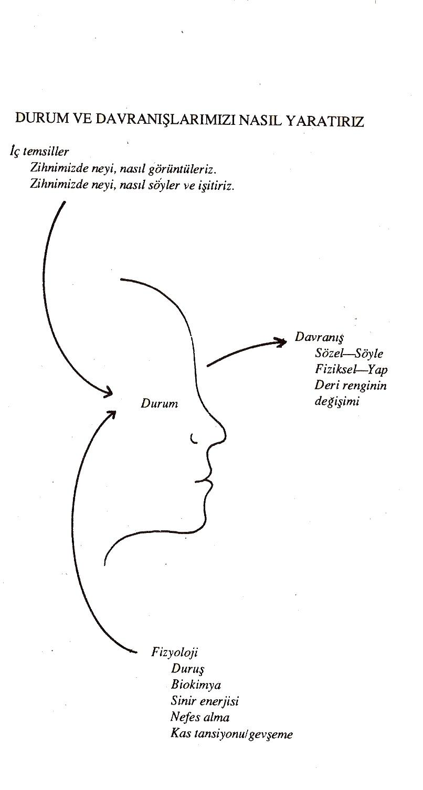
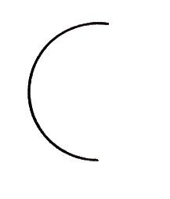

İNKILÂP KİTABEVİ
YAYIN SANAYİ VE TİCARET A.Ş. Ankara Cad..34410 İSTANBUL
Ankara Caddesi 95 - İSTANBUL
"Yaşantımızı değiştirebiliriz. Yapabiliriz, sahip olabiliriz ve tam istediğimiz gibi olabiliriz."
ANTHONY ROBBINS ne konuştuğunu biliyor. Üç yıl önce 2 m. boyunda ve 26
yaşındaki bu adam 37 m2'lik bekar dairesinde yaşıyordu ve bulaşıklarını küvette yıkamak zorundaydı. Çevreyle ilişkileri zayıf, gelecekten beklentisi az, 14 kilo fazlası olan bir kişiydi. Fakat Robbins; zihnindeki gizli gücü keşfederek, engelleri kuvvete dönüştürerek, mükemmellik için stratejiler geliştirerek, süper bir başarıya ulaştı. Kendi çabasıyla milyoner olan Robbins, ailesiyle birlikte deniz kenarında bir şatoda yaşamakta ve düzenlediği başarısı kanıtlanmış, kişisel başarı seminerlerine; her yıl binlerce kişi katılmaktadır. Uluslararası nitelik kazanan seminerler; profesyonel atletler, en büyük 500 şirketin yöneticileri, ev hanımları, hatta çocuklar için bile düzenlemektedir.
SINIRSIZ GÜÇ
En çok satan ulusal kitaplar listesine giren bu eser, birçok
yaşantıyı değiştirmiştir.
Lütfen sayfayı çevirin ve "Sınırsız Güç" hakkında söylenenleri okuyun.
V
"Gerçekten yeni ve eşsiz bir yaklaşım… düşüncelerinizi ve davranışlarınızı yeniden programlama gücü. Potansiyel gücünün tümüne ulaşmak isteyen herkesin, okuması gereken bir kitap."
Norman Vincent Peale
"Pozitif Düşünmenin Gücü" isimli kitabın yazarı
"Tony Robbins'in dehası; olanaksızın olanaklı olduğunu, sıradan vatandaşa öğretebilme yeteneğinde yatıyor.... Öğrendiğim ustalıkları, kendime ve hastalanma uyguluyorum.
Dr. Cani Simantan, M.D.
"Kanser Uzmanı ve Tekrar iyileşmek" kitabının yazarı
"İlham verici ve özel. Tony sizi güdülüyor ve kişisel sağlığınızdan finansal durumunuza, ailenizden işinize kadar, yaşamın her alanını olumlu yönde etkileyebilecek ve hemen şimdi kullanabileceğiniz araçlar veriyor." Her şey burada. Satın alın, okuyun ve kullanın."
Nightingale
Nıghtingale-Conant Şirketi
"Bu kitaptaki malzeme; başarı teknolojisinde ileriye doğru güçlü bir sıçramayı temsil etmektedir. O, son elli yılda yazılan başarı kitaplarının toplama bir şekli değildir. Değişime yönelik, yeni bir yaklaşım tekniğinin markasıdır. Okuyun.
Daha da iyisi kullanın."
Robert Allen
"Sağlık ve Mücadele Gücünün Yaratılması" kitabının yazarı VI
"Bu yıl daha başarılı olmanıza yardımcı olacak bir kitap okuyacaksanız; o kitap budur. Ben bundan daha güçlü bir teknoloji ve daha güçlü bir iletişimci görmedim."
Scott Degarm
"Başarı" Dergisi Baş Editörü
"Kişisel ve pofesyonel amaçlarınızı oluşturmak ve izlemek için; kapsamlı ve ustaca düzenlenmiş bir başarıya ulaşma programı."
"Yayıncılar" Dergisi
"Sınırsız güç"; zihinsel ve kişisel olarak yaşama uymanın önemli bir yoludur.
Marvey ve Marilyn Diamond
"Yaşama Uygunluk" kitabının yazarları"
"Robbins, kendisine müşteri aramaktan çok, yorumlarının ayrıntılarını, adım adım tüm yönlerini açıklamaya çalışan, ikna edici bir iletişimcidir. Bu yaklaşım, kendini kendine yardıma adamış çok sayıda okuyucu bulabilir."
The Kirkus Reviews
"İnsanlık tarihinden bu yana, potansiyel güç kullanımındaki en sıcak eğilim."
EastzWest Journal
VII
İçinizdeki büyük güce, aşk gücünüze ve onun sihirini paylaşmanıza yardımcı olan herkese ithaf olunur.
Jairek'e, Joshua'ya, Jolie'ye, Tyleer'e, Becky'yeve Anneme.
IX
YAZARIN ÖNSÖZÜ
Desteklerine, önerilerine ve'kitabın oluşması için çok sıkı bir çalışma gösteren kişilere teşekkür etmeyi düşünmeye başlayınca; isim listesi sürekli olarak uzuyor. Önce fikirlerimi can kulağıyla dinleyen ve gece ya da gündüz, günün herhangi bir saatinde bana yaratıcı bir çalışma ortamı sağlayan aileme teşekkür etmek isterim.Sonra; şüphesiz, beynimdeki fırtınaların en iyi şekilde yazılması için ortaklaşa çaba gösteren, Peter Applebome ve Henry Golden'den bahsetmem gerekiyor. Kitabın her aşamasında son derece değerli önerilerde bulunan Wyatt Woodsmall ve Ken Blanchard var. Bu kitap, son dakikaya kadar gerçekleştirilen değişiklikler dahil her an yanıında bulunan Simon ve Schuster'in kurmaylarından Jan Miller ve Bob Asahina'nın çabalan olmasaydı, yazılamazdı.
XI
Samimiyetleri, yöntemleri ve arkadaşlıklarıyla beni çok etkileyen, iletişimi geliştirme dönemimdeki hocalarım Bayan Jane Morrison, Richard Cobb, Jim Röhn, John Grinder ve Richard Bandler'i asla unutamam.
Sanat, sekreterlik ve araştırma görevlerini büyük bir zaman baskısı altında gerçekleştiren; Rob Evans, Dawn Aaris, Donald Bodenbach, Kathy Woody ve şüphesiz Patricia Valiton'a da teşekkürler.
Son olarak Robbins Araştırma Şirketi'nin elemanlarına da bana her konuda sağladıkları destek için özel olarak teşekkür etmek isterim.
XII
ÇEVİRENİN ÖNSÖZÜ
Bu kitabı sadece okumakla yetinmeyip içindeki alıştırmaları da yaparsanız; yaşamınız mutlaka iyi yönde değişecektir. İster öğretmen, ister öğrenci, ister doktor, ister iş adamı, ister ev hanımı, ister işçi vb. her ne işle uğraşırsanız uğraşın; sağlığınızda, mutluluğunuzda, başarılarınızda olumlu yönde değişiklikler olacaktır.
Bu
kitapta
olumsuz
ifadeler,
karamsar
görüşler
yoktur;
çünkü,
başaramayacağınıza inanırsanız kendi kendinize başarısızlığı garantilemiş
olursunuz. Belki şaşıracaksınız ama; insanın bilinçsiz zihni yani şuuraltı, bilinçli zihninden daha güçlüdür. Gelin bu yönümüzden daha çok yararlanalım, içimizdeki gücü açığa çıkaralım.
Okulda öğrencilerimizi, fabrikada işçilerimizi, devlet dairesinde memurlarımızı, amirlerimizi, patronlarımızı, annelerimizi, babalarımızı, çocuklarımızı vb. kişileri suçlayıp durmayalım. Hem kendimizle hem de diğerleriyle olan iletişimimizi kısıtlamayalım. Barış Manço'nun deyimiyle, "Öğrenilmesi gereken ilk dil, tatlı dildir." unutmayalım. Kendimiz ve çevremizle olan iletişimimizde olumlu olalım.
XIII
Bizim gerçekleştirmek istediklerimizi daha önce gerçekleştirenleri bulup onların iyi yönlerini örnek alırsak, taklit edersek, daha bilimsel bir ifadeyle tam olarak modellersek; onların başardıklarını biz de başarabiliriz. Başarılı anneleri, babaları, iş adamlarını, sanatçıları, sporcuları vb. araştırırsanız; önce kendi alanlarında zirveye ulaşanları taklit ettiklerini sonra kendi gerçeklerini yakaladıklarını görürsünüz.
Kimleri modellemek yani nasıl olmak istiyorsunuz? Amacınızın ne olduğunu bilmezseniz, başardığınızı nasıl anlayacaksınız? Uzun yıllar kendime ve öğrencilerime bu soruların ve bu sorulara verilecek cevapların ne kadar önemli olduğunu anlatmaya çalıştım. Anthony Robbins'in bu sorulara mükemmel cevaplar verdiğini görünce; onları herkesle paylaşmak istedim ve elinizdeki çeviriyi yapmaya karar verdim.
Kitap Amerika Birleşik Devletlerinde yazıldığından; kişi, yer, kitap ve film isimleri çeviride orijinal yazılışlarıyla yer almıştır. Bunun dışında elverdiğince günlük konuşma dili kullanılmaya çalışılmış ya da anlaşılabilir kelimeler türetilmiştir. Oldukça uzun süren çeviri çalışmalarına ilk okul üçüncü sınıftaki oğlum Mete dahil, eşimin, öğrencilerimin, çok sayıda arkadaşımın özellikle Gürsel Gürsoy'un ve İnkılâp Kitabevi mensuplarının çok değerli katkıları oldu. Hepsine ayrı ayrı teşekkür etmek istiyorum.
Dr. Mehmet DEĞİRMENCİ
XIV
İÇİNDEKİLER:
Kenneth Blanchard'm önsözü….……………………………………………………………..…XVII
Sir Jason Winter'in giriş yazısı…………………………………………………………………….. XIX
KISIM I: Mükemmelliğin Modellenmesi…………………………………………………………1
I.Kralların Kudreti ………………………………………………………………………………………..3
II.Farkı Fark Yapar……………………………………………………………………………………….24
III.Durumun Gücü……………………………………………………………………………………….39
IV.Mükemmelliğin Doğuşu: İnanç.....................................................................58
V.Başarının Yedi Yalanı………………………………………………………………………………..75
VI.Zihninizi Ustalaştırmak: Beyniniz Nasıl Çalışır………………………………………….88
VII.Başarının Dizin…………………………………………………….……………………………….119
VIII.Kullanılan Stratejileri Öğrenmek………………………………………………………….133
IX.Mükemmelliğin Bulvarı: Fizyoloji……………………………………………………………139
X.Mükemmelliğin Yakıtı: Enerji…………………………………………………………………..174
XV
KISIM II: Asıl Başarı Formülü……………………………………………………………..……197
XI.İlgisizliğin Sınırlaması: Ne İstiyorsunuz?.......................................................199
XII.Kesinliğin Gücü……………………………………………………………………………………219
XIII.Ahengin Sihiri……………………………………………………………………………………..234
XIV.Mükemmelliğin Ayırımları: Metaprogramlar……………………………………….254
XV.Dirençle Başa Çıkmanın ve Problemleri Çözmenin Yollan………………………279
XVI.Yeniden Çerçeveleme: Perspektifin Gücü…………………………………………….293
XVII.Başarıyı ÇağrıştırmaK………………………………………………………………………….319
KISIM III: Liderlik: Mükemmelliğin Mücadelesi……………………………………………..347
XVIII.Değer Hiyerarşileri
Başarıya Asıl Değerinin Verilmesi.............................................................349
XIX.Zenginlik ve Mutluluğun Beş Anahtarı………………………………………………..377
XX.Eğilim Yaratma: İnandırmanın Gücü…………………………………………………....393
XXI.Mükemmel Yaşamak: İnsanlığın Mücadelesi……………………………………….414
Sözlük…………………………………………………………………………………………………..427
XVI
ÖNSÖZ
Tony Robbins, "Sınırsız Güç" için önsöz yazmamı istediğinde; birçok nedenden ötürü memnun oldum. Her şeyden önce Tony'nin inanılmaz bir genç adam olduğunu düşünüyorum. O'nunla ilk karşılaşmamız 1985 ocağında, amatör bir tenis turnuvasına katılmak için geldiğim Palm Springs'te oldu. Benim için çok güzel geçen bir maçı yeni bitirmiştim. Amatör olduğumuz için de, rekabetimiz sadece övünmek içindi. Avustralya'lı arkadaşım Keith Punch'la öğle yemeğine giderken, Tony Robbins'in Ateş Yürüyüşü seminerlerini duyuran bir ilan gördük.
İlanda "İçinizdeki gücü açığa çıkarın" diyordu. Tony'yi daha önce duymuştum ve bu ilan bende bir merak uyandırdı. Keith'le birlikte biraz içki de içmiştik ve ateşte yürüme girişiminde bulunmadan, seminere katılmaya karar verdik.
XVII
Bundan sonraki dört buçuk saatte Tony'nin; iş adamlarından, ev hanımlarından, avukatlardan, doktorlardan vb.'den oluşan büyük bir grubu büyülediğini gördüm. Büyüleme dediğim zaman kara büyüden söz etmiyorum. Tony karizmasıyla, çekiciliğiyle, insan davranışlarına ilişkin derin bilgisiyle; herkesi işin sonuna kadar getirmişti. Yirmi yıldır yöneticilik seminerlerine katılırım. Ben, bu kadar neşeli ve insanı kuvvetlendiren bir seminer görmedim. Sonunda Keith ve ben de dahil olmak üzere herkes, bütün gece boyunca yanan 4,5 metrelik kızgın kömür yataklarının üzerinden yürüyerek geçti ve kimseye bir şey olmadı.
Görülecek bir manzaraydı ve herkesi güçlendiren bir deneyimdi.
Tony ateş yürüyüşünü bir mecaz olarak kullanıyor. O, mistik ustalıklar öğretmiyor; fakat, içinizdeki korkulara rağmen kendinizi etkin olarak harekete geçirebilmenizi, başarı için ne gerekiyorsa onu yapmanızı sağlayan gerçek gücün pratik araçlarını öğretiyor. Bu nedenle, önsözü zevkle yazmamım birinci nedeni; Tony Robbins'e olan büyük hayranlığım ve saygımdır.
Heyecanla önsöz yazmamım ikinci nedeni, herkesin derinlemesine düşünmesini sağlayan, Tony'nin "Sınırsız Güç" kitabıdır. O, güdüleyici bir konuşmacıdan çok daha ötede bir insandır. Yirmi beş yaşında başarı ve güdüleme psikolojisinin önde gelen düşünürlerinden birisi olmuştur. Bu kitabın insan potansiyelini harekete geçirmede, ders kitabı olacak kapasiteye sahip olduğunu düşünüyorum. Tony'nin sağlık, gerilim, amaç belirleme, görselleştirme vb. gibi konulardaki düşünceleri, kendisini mükemmelliğe adamış herkes için kusursuz araçlardır.
Umarım siz de, benim gibi bu kitaptan çok şey elde edersiniz. Bir Dakikalık Yönetici kitabımızdan uzun olmasına rağmen; Tony'nin düşüncelerini kullanarak, içinizdeki sihiri açığa çıkarmak için bu kitabı sonuna kadar okuyacağınızı sanıyorum.
Dr. Kenneth Blanchard
"Bir Dakikalık Yönetici"nin yazarlarından XVIII
GİRİŞ
Filmlerde rol yaparken dahil, topluluk önünde konuşurken çok güçlük çekiyordum. Sahne sıram gelmeden önce, fiziksel olarak rahatsızlanıyordum.
Topluluk önünde konuşmaktan duyduğum bu acımasız korku yüzünden, korkuları güce dönüştüren insan olarak bilinen Anthony Robbins'in; beni tedavi edebileceğini duyduğum zaman ne kadar heyecanlandığımı hayal bile edemezsiniz.
Çok heyecanlanmama rağmen, Tony Robbins'le buluşma davetini kabul ettiğim zaman bile, içimdeki şüphe hislerini atamamıştım. Tony'nin SDP ve diğer tekniklerde herkesin çok büyük beğenisini kazanacak kadar usta olduğunu duymuştum; fakat ben de profesyonel bir yardım bulabilmek için o ana kadar binlerce saat ve dolar harcamıştım.
XIX
Önceki profesyoneller, korkunun yılların birikimi olduğunu ve bu yüzden de kısa sürede tedavi olmayı beklemememi söylediler. Benim sorunum üzerinde, sonu gelmeyecek bir şekilde çalışmak için, her hafta tedavi olmamı gerektiren bir program hazırladılar.
Tony'le karşılaşınca; Onun büyüklüğü benim için süpriz oldu. Karşılaştığım çok az kimse benden daha uzundu. 108 Kg. ağırlığında ve 2 metre boyunda olmalıydı. Çok genç ve çok hoştu. Benim sorunumla ilgili sorular sormaya başladığında çok sinirliydim.
Sonra ne istediğimi ve nasıl değişmek istediğimi sordu. Yılgım (fobim), tedavinin daha öncekiler gibi olmasını önlemek, kendini savunmak için isyan ediyor gibi görünüyordu. Fakat Tony'nin yatıştırıcı sözleri sayesinde, Onun söylediklerini dinlemeye başladım.
Topluluk önünde konuşmayla ilgili panik hislerimi yok etmeye başladım. Aniden kuvvet ve güvenden oluşan yeni hisleri, Onların yerine koymaya başladım.
Tony; zihnimde beni çok başarılı konuşma yaptığım bir zamana geri götürdü.
Zihinsel olarak konuşurken, Tony çağrıştıncılar verdi. Çağnştırıcılar, konuşma yaparken güvenimi ve sinirimi kuvvetlendirmek için baş vurabileceğim şeylerdir.
Onlar hakkındaki her şeyi bu kitapta okuyacaksınız.
Görüşme sırasında Tony'yi dinlerken yaklaşık kırk beş dakika gözlerimi kapadım.
Dönem dönem fiziksel çağrıştıncılar sağlayacak şekilde, dizlerime ve ellerime dokunuyordu. İş bittiğinde ayağa kalktım. Kendimi hiç bu kadar gevşek, sakin ve barış içinde hissetmemiştim. Hiçbir zayıflık hissi yoktu. O anda Lüksemburg televizyonunda yaklaşık 450 milyon kişinin seyredeceği bir gösteriye, kendimden emin olarak çıkmak için hazırdım.
Benim gibi kişiler Tony'nin yöntemlerinden yararlanabiliyorsa;tüm dünyadaki insanlar ondan yararlanabilir. Şu anda zihinlerinde uzun uzun ölümü düşünerek yatan çok sayıda kişi var. Doktorları onlara kanser olduklarını söylemiştir ve onlar da o kadar alt üst olmuşlardır ki, vücutlarının tamamı gerilim xx
içindedir. Yaşam boyu süren yılgım, bir saat içinde yok edilebiliyorsa; duygusal, zihinsel ya da fiziksel her türlü hastalıktan rahatsız olan herkes için, Tony'nin yöntemleri yararlı olabilir. Onlar aynı zamanda korkularından, gerilimlerinden ve endişelerinden kurtulabilirler. Bana göre geç kalmadan yararlanmak en önemli noktadır. Ölümden, patronlardan, yılanlardan, topluluk önünde konuşmaktan, yükseklikten, sudan niçin korkalım?
Ben korkularıından kurtuldum ve bu kitap aynı seçeneği size de sunuyor.
"Sınırsız Güç"ün en çok satan kitaplardan olacağından eminim; çünkü, o sadece korkuları yok etmekle kalmıyor, aynı zamanda istediğiniz bir davranış şeklini nasıl tetikleyeceğjnizi de öğretiyor. Bu kitaptaki bilgiler üzerinde ustalaşarak; zihninizi ve vücudunuzu, dolayısıyla yaşamınızı bütünüyle kontrol edebilirsiniz.
Sir Jason Winters
"Kanseri Öldürmek" kitabının yazarı XXI
BAŞARI: Çok ve sık gülmek; çocukların sevgisini ve akıllı insanların saygısını kazanmak; içtenlikli eleştirilerin kıymetini anlamak ve kötü arkadaşların yoldan çıkarma girişimlerine dayanabilmek; güzeli anlamak; başkalarında en iyiyi bulmak; sağlıklı bir çocukla, güzel bir bahçe ya da saygın bir sosyal durumla biraz daha iyi bir dünya bırakabilmek; hatta bir tek kişi bile olsa, birilerinin siz yaşadığınız için daha rahat nefes aldığını öğrenmektir.
— Ralph Waldo Emerson KISIM I
Mükemmelliğin
Modellenmesi
BÖLÜM: 1
Kralların Kudreti
"Hayatın gerçek amacı, bilgi değil eylemdir. "
— Thomas Henry Huxley
AYLARDIR Onu anlatıyorlardı. Genç, sağlıklı, zengin, mutlu ve başarılı olduğu söyleniyordu. İnanmak için kendim görmeliydim. TV stüdyosundan ayrıldıktan sonra O'nu yakından seyrettim ve bir ülkenin başkanından, korku dolu insanlarına kadar herkese önerilerde bulunduğunu gözledim. Sonraki birkaç hafta da izlemeye devam ettim. O'nu bazen diyet uzmanlarıyla tartışırken, bazen yöneticileri eğitirken, bazen atletlerle antrenman yaparken ve bazen de özürlü çocuklar hakkında bilgi alırken gördüm. Yurt içi ve yurt dışındaki gezi-lerinde muhteşem mutluluğunu ve karısına olan çılgınca aşkını, gözlerinden her saniye okumak mümkündü. Çok yoğun geçen bu günlerden sonra, ailesiyle birlikte birkaç gün geçirmek için San Diego'da Pasifik Okyanusu'na bakan şatolarına gittiler.
Kolej mezunu yirmi beş yaşındaki bir genç, bu kadar başarıyı bu kadar kısa zamana nasıl sığdırmıştı? Üç yıl önce bu genç
3
adam 37 metrekarelik bekar evinde bulaşıklarını, banyo küvetinde yıkıyordu.
Nasıl olmuştu da on beş kilo fazlası bulunan, insan ilişkilerinde bocalayan, hayattan beklentisi az ve oldukça mutsuz bir insan; birden ilgi odağı, sağlıklı, saygı duyulan, insan ilişkileri mükemmel ve sınırsız başarı şansına sahip bir kişi oluvermişti.
Her şey akıl almaz görünüyordu ve hayretler içinde kalmıştım. Kısaca anlattığım bu hikaye, benim hikayemdir.
Hayatın başarıyla eşanlamlı olduğunu kesinlikle söylemiyorum. Herkesin yaşantısında gerçekleştirmek istediği farklı hayalleri ve idealleri vardır. Ayrıca şundan kesinlikle eminim; kimi tanıdığınız, nereye gittiğiniz veya neye sahip olduğunuz, kişisel başarının gerçek ölçüsü değildir. Bana göre başarı, daha iyiye ulaşmak için sürekli çaba göstermektir. Başarı; diğer insanlara yardımcı olmaya çalışırken duygusal, sosyal, ruhsal, psikolojik, bilimsel ve finansal konularda kişiyi sürekli geliştirecek bir olanaktır. Başarıya giden yol, her an yapım halindedir. Başarı; ulaşılması gereken bir sonuç değil, sürekli gelişen bir ça-lışmadır.
Hikayenin özü çok basittir. Bu kitapta, daha sonra açıklayacağım prensipleri uygulayarak; kişisel olarak kendimle ilgili düşüncelerimi nasıl değiştirdiğimi ve nasıl başarılı sonuçlar elde ettiğimi öğreneceksiniz. Kitabın asıl amacı, hayatımı daha iyiye ulaştıran değişikliklerin nedenlerini sizinle paylaşmaktır. Sizin de bu sayfalarda açıklanan teknolojileri, stratejileri, yetenekleri ve felsefeleri yol gösterici olarak görmenizi içtenlikle diliyorum. Hayallerinizi gerçekleştirmek için size sihirli gücü verecek aslan her birinizin içinde yatıyor. Onu salıvermenin şimdi tam zamanıdır.
Rüyalarımı gerçek yaşama ne kadar aktarabildiğimi gördükçe, inanılması güç minnettarlık ve hayranlık hisleriyle doluyorum. Henüz mükemmele ulaşamadığımı biliyorum. Öyle bir zamanda yaşıyoruz ki, eskiden ulaşılması hayal bile edilemeyen, mucize olarak görülen şeyleri, bir gecede başarabilecek bir
4
çok insan var. Örneğin Steve Jobs'a bir bakın. Züğürt, kot giyen bir çocukken bir ev bilgisayarı için ortaya koyduğu düşüncesiyle, tarihte hiç kimsenin ulaşamadığı bir hızla Fortune 500 Şirketini kurmayı başardı. Ted Turner'a bakın.
Yeni doğmuş sıradan bir kablolu yayın şirketini aldı ve bir imparatorluk yarattı.
Steven Spielberg ve Bruce Springsteen gibi eğlence dünyasındaki kişilere, Lee lococca veya Ross Perot gibi iş adamlarına bakın. Genelde müthiş, harikulade başarılarının dışında, diğerlerinden ne farkları var? Güçleri var.
Güç, heyecan verici bir kavram. İnsanların bu kavrama yaklaşımları farklıdır.
Bazıları için güç, olumsuz ve itici bir anlam taşır. Bazıları gücü elde etmek için hırslanırlar. Bazıları da sanki güç; şüpheli, sadece para için kullanılan bir olguymuş gibi ondan korkarlar. Ne kadar güç istiyorsunuz? Kazanmak ya da ge-lişmek için sizce ne kadarı yeterlidir? Sizce güç, gerçekten ne anlama geliyor?
Ben gücü zorba insanlar gibi bir araç olarak algılamıyor, bir şeyleri zorla yaptırmak için gerekli olduğunu düşünmüyorum. Sizin de böyle düşünmeniz gerektiğini savunmuyorum. Bu şekilde kullanılan güç, uzun ömürlü olamaz.
Ancak siz de, gücün dünya üzerindeki etkisini kabul etmelisiniz. Algılarınızı ya siz yönlendirirsiniz, ya da bir başkası bunu sizin için yapar. Siz ya yapmak istediğiniz şeyleri yaparsınız, ya da başkalarının sizin için hazırladıkları planlara uyarsınız.
Bana göre asıl güç, istediğiniz sonuçları yaratabilme ve olaylar içerisinde diğer kişilere hak ettikleri değeri verebilme yeteneğidir. Güç, düşüncelerinizi amacınıza uygun olacak şekilde yönlendirebilmek için, hayatınızı değiştirebilme yeteneğidir. Gerçek güç paylaşılır, mutlak hakimiyeti gerektirmez. Güç, sizin ve değer verdiğiniz kişilerin ihtiyaçlarını tanıma ve giderme yeteneğidir. Kesin olarak istediğiniz sonuçlara ulaşabilmek için, düşünce süreci ve davranışlarınızı, yani kendi krallığınızı yönetme yeteneğidir.
Tarih boyunca hayatımızı kontrol eden güçler, çok değişik ve birbirine zıt şekillerde ortaya çıkmıştır. İlk çağlarda güç, ta
5
mamen fizyolojinin bir sonucuydu. En kuvvetli, en hızlı olan; kendinin olduğu kadar, çevresindekilerin de hayatını yönlendirme gücünü elinde bulundururdu.
Medeniyet ilerledikçe, güç mirasla geçer oldu. Gücünü oluşturan simgelerin içinde yaşayan kral; kusursuz otoritesiyle ülkeler yönetir, diğerleri de güçlerini ona olan yakınlıklarıyla kazanırdı. Endüstri çağının başında güç, sermaye idi.
Onu elde eden endüstriyel ürünlere hükmederdi. Tüm bunlar şimdi de hayatta rol oynamaya devam ediyor. Parası olmak, olmamaktan; fiziksel yönden kuvvetli olmak, olmamaktan daha iyidir. Her şeye karşın günümüzde gücün gerçek kaynağı, yine de uzmanlaşmış bilgiden geliyor.
Bir çoğumuz, şimdiye kadar içinde yaşadığımız çağın bilgi çağı olduğunun farkındayız. Artık biz endüstriyel kültürü değil, iletişim kültürünü yaşıyoruz.
Kuantum fiziği gibi anlaşılmaz, hamburger pazarlamacılığı kadar sıradan da olsa; yeni düşüncelerin, dalgalanmaların ve kavramların dünyayı günlük olarak değiştirdiği bir zamanda yaşıyoruz. Modern dünyayı karakterize edebilecek bir şey varsa; o da hayal edilebileceğinizin ötesinde muazzam bilgi akışı ve bunun getirdiği değişikliklerdir. Bu yeni bilgiler bize kitaplarla, filmlerle, televizyonla ve bilgisayar çipleriyle; görülmek, duyulmak ve hissedilmek için veri sağanağı halinde ulaşır. İşte bu toplum, kralların sahip olduğu sınırsız gücü; bilgi ve iletişim yoluyla elde etti. John Kenneth Galbraith'in yazdığı gibi, "Endüstri toplumuna hız kazandıran şey paradır. Fakat bilgi toplumunu hızlandıran ve güce ulaştıran bilgidir. Şimdi, bilgi sahibi olanlar ve olmayanlar şeklinde yeni bir sınıfsal bölünme ortaya çıktı. Bu yeni sınıf, gücünü ne paradan, ne sahip olunan topraklardan değil sadece bilgiden alıyor."
Burada dikkat edilecek ilginç nokta ise, güce ulaştıran kapının herkese açık olmasıdır. Orta çağda kral değilseniz, başarılı olmak için çok sayıda zorluğu yenmeniz gerekiyordu. Endüstri çağının başlarında da, sermayeniz yoksa onu elde etmek için, kendinize has özellikleri gerçekten çok kurnazca kullanmanız 6
gerekiyordu. Fakat bugün, herhangi bir çocuk bile bir ortaklık kurarak dünyayı değiştirebilir. Modern dünyada kralların kudreti bilgidir. Uzmanlaşmış bilginin çeşitli şekillerini kullanarak insan, kendini ve birçok yönden de tüm dünyayı değiştirebilir.
ABD'de yaşantımızın kalitesini yükseltecek, uzmanlaşmış bilgi çeşitleri herkese açıktır. Bunlar her kitapçıda, her video satıcısında, her kütüphanede bulunabilir.
Hatta bunları seminerlerden, kurslardan ve konuşmalardan da elde edebilirsiniz. Çünkü, hepimiz başarıya ulaşmak istiyoruz. Bu alanda en çok satan kitaplar, kişisel mükemmelliğe ulaşmayı sağlayacak reçetelerle doludur: "Bir Dakikalık Yönetici", "Mükemmeli Arayış", "Harvard İşletme Okulunda Size Öğretilmeyenler", "Sonsuza Uzanan Köprü"... Listeyi daha da uzatabiliriz.
Öyleyse neden diğerleri sadece bakarken, bazıları efsanevi sonuçlara ulaşabiliyorlar? Neden hepimiz mutlu, sağlıklı, zengin ve başarılı olamıyoruz?
Gerçek şudur ki, bilgi çağında bile, bilgi yeterli olmayabiliyor. Hepimizin ihtiyaç duyduğu şey, idealler ve pozitif düşünce olsaydı; çocukluğumuzda her birimizin küçük muhteşem atları olur ve rüyalarımızdaki hayatımızı yaşıyor olurduk. Her büyük başarıyı perçinleyen şey, eylemdir. Eylem, sonuçları hazırlayandır. Bilgi ise, insanın eline geçtiğinde iyi kullanılırsa yararlı bir potansiyel güçtür.
Gerçekte gücün kelime anlamı da eylem yeteneğidir.
Yaptıklarınızı belirleyen şey haberleşmenizdir. Modern dünyada yaşam şekliniz, iletişim şeklinizi belirler. Betimlemeleriniz, sözleriniz, yüz ifadeleriniz; ne bildiğinizi ve neleri kullanabileceğinizi belirler.
İnsanların çok aşırı başarılı olmaları ve bulundukları yerlere gelmeleri için, kendilerine tanrının özel yetenekler hediye ettiği düşüncesinin tuzağına sıkça düşeriz. Fakat yakından bakıldığında görülür ki; sıradanlığın üzerinde özelliklere sahip olduğunu düşündüğünüz kişilerin diğerlerinden farkı, kendilerini eyleme geçirme yeteneğine sahip olmalarıdır. Bu da aslında
7
kendi içinizde geliştirebileceğiniz bir yetenektir. Steve Jobs'un sahip olduğu bilgilere diğer insanlar da sahipti. Hatta Ted Turner dışında başka birisi de, kablolu yayının müthiş bir ekonomik potansiyele sahip olduğunu görebilirdi.
Fakat Turner ve Jobs eyleme geçmiş ve birçoğumuzun hayat deneyimini değiş-
tirmiştir.
İki türlü iletişim şekli kullanırız. Birincisi iç iletişimimiz, yani kendi içimizde gerçekleştirdiğimiz söyleyişler, hisler ve betimlemelerimizdir. İkincisi de fiziksel iletişimimiz ki, bu da kullandığımız kelimeler, ses tonlamalarımız, mimiklerimiz, vücut hareketlerimiz ve fiziki davranışlarımızdır. Yaptığımız her iletişim bir eylem, harekete yönelten bir nedendir. Bütün iletişimlerin, hem kendimiz hem de başkaları üzerinde değişik etkileri vardır.
iletişim, güçtür. iletişimi etkili kullanabilenler, kendilerinin dünya deneyimlerini ve dünyanın onlar üzerindeki deneyimlerini değiştirebilirler. Tüm davranış ve düşüncelerin asıl kaynağı iletişimin bir türüdür. Büyük çoğunluğumuzun düşüncelerini, hislerini ve hareketlerini etkileyenler, içinde güç barındıran bu oyuncağı nasıl kullanacağını bilen kişilerdir. Dünyamızı değiştiren John F.
Kennedy, Thomas Jefferson, Martin Luther King, Jr. Franklin Delano Roosevelt, Winston Churchill, Mahatma Gandhi ve bunların daha hırçın bir örneği olan Hitler gibi insanları düşünün. Tüm bu insanların sahip oldukları ortak özellik, üstün birer iletişimci olmalarıdır. Onlar, kitlelerin düşünce ve davranışlarını etkileyen olayları (insanın uzaya gitmesi veya kin ve nefret dolu bir Üçüncü Alman Krallığı bile olsa) görüntüleyerek, dünyaya mükemmel bir şekilde aktardılar. Bu güçleriyle de tüm dünyayı değiştirdiler.
Gerçekten de bir Spielberg'i, bir Springsteen'i, bir Iococca'yı, bir Fonda'yı, bir Reagan'ı diğerlerinden ayıran özellik, bu değil midir? Onlar iletişim ve etkileşim araçlarının efendileri değil mi? Onların diğerlerini yönlendirmede kullandıkları iletişim araçlarını biz de kendimizi yönlendirmede kullanabiliriz.
8
Dış dünya ile iletişim düzeyiniz; diğer insanlara göre; kişisel, sosyal, duygusal ve finansal başarı düzeyinizi belirler. Daha da önemlisi mutluluğunuz, eğlenceniz, sevinciniz, sevginiz , iç deneyimlerdeki başarı düzeyiniz; kendi kendinizle nasıl iletişim kurduğunuzu gösterir. Hissettikleriniz, yaşantınızdaki olayların sonucu değildir. O sadece sizin olayları açıklama biçiminizdir. Tüm başarılı kimselerin yaşam öyküleri, yaşam düzeyinin olaylara değil, fakat daha çok olaylar karşısında neler yapıldığına bağlı olduğunu göstermiştir.
Seçtiğiniz yaşamı algılama şekline bağlı olarak, nasıl hissedeceğinize ve davranacağınıza ilişkin kararı sadece siz verirsiniz. Hiçbir şey, bizim verdiğimizin dışında bir anlama sahip değildir. Bir çoğumuz bu yorumlama sürecini; düşünmeden, otomatik olarak gerçekleştiririz. Oysa bu gücü; dünya deneyimlerimizi değiştirebilecek şekilde yeniden ele alabiliriz.
Bu kitap kesin sonuçlara ulaşmayı sağlayacak yoğun, yönlendirilmiş, benzeşimli davranış biçimleriyle ilgilidir. Gerçekte bu kitapta nelerin olduğunu iki kelimeyle anlatmak istersem, şöyle söyleyebilirim: "Sonuçları hazırlama". Bunu düşünün.
Bu, gerçekten ilgilendiğiniz şey değil mi? Belki kendiniz ve dünyanız hakkındaki düşüncelerinizi değiştirmek istersiniz. Belki de daha iyi bir iletişimci olmak, daha sevecen ilişkiler geliştirmek, daha çabuk öğrenmek, daha sağlıklı olmak, ya da daha fazla kazanmak gibi arzularınız vardır. Tüm bunları, hatta daha fazlasını, bu kitapta verilen bilgileri yerinde ve etkili bir şekilde kullanarak gerçekleştirebilirsiniz. Bununla birlikte, yeni sonuçlar yaratmadan önce, halen birçok sonucu yaratmış olduğunuza inanın. Bunlar arzuladığınız sonuçlar olmayabilir. Birçok kişi zihin durumumuzu ve aklımızdan geçenleri kontrolümüz dışında oluşan şeyler olarak düşünür. Oysa zihinsel faaliyetlerinizi ve davranışlarınızı, daha önce hiç ihtimal vermediğiniz ölçüde kendiniz kontrol edebilirsiniz. Canınız sıkılıyorsa bu durumu yaratan sizden başkası değildir! Bu durum sizin eserinizdir.
9
Can sıkıntısı gibi hissi olayların kendiliğinden olmadığını bilmek çok önemlidir.
Sıkıntıya yakalanmıyorsunuz. Hayatınızdaki tüm diğer sonuçlar gibi, kendinize has zihinsel ve fiziksel faaliyetlerle, onu da kendiniz yaratıyorsunuz. Kederli olmak için hayatınızı değişik yönlerden görüntülemelisiniz. Kendi kendinize belirli şeyleri doğru bir ses tonuyla söylemek zorundasınız. Kendinizi özel bir durum ve nefes alıp verme sürecine uyarlamak zorundasınız. Örneğin, sıkıntılı olmak istiyorsanız; omuzlarınızı çökertip, sürekli yere bakmanızın size korkunç yararı olacaktır. Ayrıca sesinizi üzüntülü bir tonda kullanmak ve hayatınızda olabilecek en kötü senaryoları düşünmek de size yardımcı olur. Biyokimyanızı yetersiz beslenme, aşırı alkol ve uyuşturucu kullanma yoluyla karmaşaya sokarsanız; vücudunuzdaki kan şekerini düşürür, böylece de kendinizi bunalıma sokmayı garantilersiniz!
Burada üzerinde durmak istediğim nokta, çöküntü yaratmak için fazladan bir çaba harcamak gerektiğidir. Bu çok zor bir iştir ve bazı özel durumlar almayı gerektirir. Bazı kimseler bu durumlara çok sık girdiklerinden, onlara bu iş çok kolay gelir. Onlar bu iç iletişim şeklini, kendilerinin denetimi dışındaki olayların yarattığını öne sürerler. Bazı insanlar, bu tür iletişimi günlük yaşantılarının doğal bir parçası olarak ortaya koyduklarından; diğerlerinin dikkatini çekerek onlardan sevgi, sempati gibi birçok yapay kazanç sağlayabilirler. Diğerleri de bunu çokça yaşadıklarından, bu davranış biçimi onlara çok normal gelir. Bu insanlar, zamanla içinde bulundukları durumla tanınır hale gelirler. Biz her şeye rağmen, zihinsel ve fiziksel faaliyetlerimizi ve bunların sonuçları olan duygularımızı ve davranışlarımızı, büyük ölçüde değiştirebiliriz.
Coşku dolu olmayı gerektiren hisleri kendi içinizde yaratırsanız, derhal coşkulu duruma geçebilirsiniz. Zihninizde bu duyguyu yaratacak görüntüleri canlandırabilirsiniz. Kendinizle olan iç diyaloğunuzun tonunu ve içeriğini değiştirebilirsiniz. Kendinizi, vücudunuzda bu durumu yaratacak belirli davranış-
10
lara ve nefes alma şekline uyarlayabilirsiniz. Sonuçta coşkuyu yaşayacaksınız!
Sevecen olmayı diliyorsanız, yapacağınız şey sadece sevecen olmanın gerektirdiği durumu tetikleyecek tarzda, zihinsel ve fiziksel faaliyetlerinizi değiştirmektir. Aynı koşul sevgi ve benzeri olaylar için de geçerlidir.
İç iletişiminizi yönlendirerek duygusal durumlarınızı yaratma sürecini, yönetmenliğe benzetebiliriz. Bir filmin yönetmeni ulaşmanızı istediği kesin sonuçlaRI yaratmak için, gördüğünüz ve duyduğunuz her şeyi ustalıkla kullanır.
Korkmanızı isterse; ekranda bazı özel etkileyiciler kullanabilir ya da sesi yükseltebilir ve bunu tam gerektiği anlarda yapar. Coşmanızı isterse; bunu sağlayacak her şeyi; müziği, ışığı, görüntüyü düzenleyebilir. Bir yönetmen, ekrana yansıtmak istediği konuya göre bir olaydan hem komedi hem de trajedi yaratabilir. Siz de aynı şeyleri zihninizin ekranında oluşturabilirsiniz. Benzer yetenek ve güçleri kullanarak, fiziksel davranışlarınızın destekleyicisi olan zihinsel davranışlarınızı biçimlendirebilirsiniz. Zihninizdeki olumlu mesajların sesini, ışığını güçlendirebilir ve olumsuz olayların görüntülerini, sesini bulanıklaştırabilirsiniz. Spielberg ve Scorsese'ın film setlerini yönettikleri şekilde beyninizi yönetebilirsiniz.
Bundan sonraki bazı açıklamalara inanmak size çok güç gelebilir. Belki istediğinizde bir insana ulaşmanın, onun gerçek düşüncelerini öğrenmenin ya da en güçlü zihinsel kaynaklarınızı çağırmanın bir yolu olduğuna inanmayacaksınız. Fakat çok değil, yüz yıl önce insanoğlunun aya gideceğini savunsaydınız; insanlar sizin bir çılgın, hatta bir deli olduğunuzu sanırdı. Yine New York'tan Los Angeles'a beş saatte gitmenin mümkün olacağını söylemiş
olsaydınız; insanların gözünde tam bir hayalperest olurdunuz. Fakat tüm bunlar, özel teknolojiler ve aerodinamik bilimi sayesinde başarılmıştır. Şimdi de bir havacılık şirketi, New York-California arasını yirmi dakikada alabilecek bir aracı geliştirme çalışmalarının on yıl içerisinde sonuçlanacağını iddia etmektedir.
Benzer şekilde siz de farkında olmadığınız, fakat
11
sizde varolan niteliklere, bu kitapta öğreneceğiniz "En Uygun Performans Teknikleri" aracılığıyla ulaşmayı öğreneceksiniz.
"Her disiplinli çabanın; birden çok ürünü vardır."
— Jim Rohn
Mükemmele ulaşan insanlar, sürekli olarak başarıya giden yolu izlerler. Ben buna "Asıl Başarı Formülü" diyorum. Bu formülün birinci basamağı, sonuçlarınızı bilmek; yani, ne istediğinizi kesin olarak ortaya koymaktır. İkinci basamak ise, eyleme geçmektir. İnandığınız hareket tarzlarını uygulamak, büyük bir olasılıkla istediğiniz sonuçlara ulaşmanızı sağlayacakür. Tuttuğunuz yol, sizi her zaman arzuladığınız hedeflere ulaştırmayabilir. Öyleyse üçüncü basamak da, faaliyetlenmzden elde ettiğiniz neden-sonuç ilişkilerini tanımak için, hassasiyetinizi geliştirmek ve hedeflerinize ulaşmadaki başarı ya da başarısızlığı mümkün olan çabuklukta gözlemleyebilmek olmalıdır. Sohbetlerden ya da günlük hayatınızdaki alışkanlıklarınızdan gelse bile, davranışlarınızdan neler kazandığınızı bilmek zorundasınız. Kazandıklarınız istedikleriniz değilse; her deneyiminizden faydalanmak için, davranışlarınızın ne sonuçlar doğurduğuna dikkat etmelisiniz. Sonra dördüncü basamağı uygularsınız ki, bu da istediğinizi elde edinceye kadar, davranışlarınızı değiştirebilme esnekliğini geliştirmektir.
Başarılı insanlara baktığınızda, bu basamakları izlediklerini görürsünüz. Onlar bir hedef seçerek başladılar, çünkü hedef olmadan atış yapılamaz. Eyleme geçtiler; çünkü sadece bilmek yeterli değildir. Tepkilerini öğrenmek için insanları tanıma yetenekleri vardı. Neyin işe yaradığını buluncaya dek davranışlarını değiştirmeye, düzeltmeye, uyarlamaya devam ettiler.
Steven Spielberg'i göz önüne alın. Otuz üç yaşında tarihin en başarılı film yapımcısı oldu. Halen yapılmış en muhteşem
12
Film ET (Uzaylı) de dahil olmak üzere, tüm zamanların en mükemmel on filminden dördünün yaratıcısı O'dur. Bu genç yaşında böyle bir noktaya nasıl geldi? İşte bu dikkate değer bir hikayedir.
Spielberg on iki, on üç yaşlarından beri bir film yönetmeni olmak istediğini biliyordu. On yedi yaşındayken bir hafta sonu Universal Stüdyolarını gezmek için düzenlenen bir tura katılması O'nun yaşamını değiştirdi. Fakat turun tüm ayrıntıları gözler önüne sermediğini gören ve ne istediğini , neler yapabileceğini bilen Spielberg hemen harekete geçti. Gerçek bir filmin çekimlerini izlemek için gruptan ayrıldı. Sonra da kendini, bir saat boyunca ilginç film hikayelerini dinleyeceği Universal'ın yazı işleri müdürünün odasında, koyu bir sinema sohbetinin içinde buluverdi. Müdür de Spielberg'in senaryolarını ilgiyle dinliyordu.
Birçokları için bu kadarı, hikayenin sona ermesi için yeterlidir. Fakat Spielberg, diğerleri gibi değildi. Çok güçlüydü. Ne istediğini biliyordu. İlk ziyaretinden ders aldı ve yaklaşım biçimini değiştirdi. Ertesi gün takım elbisesini giydi, babasından kalan ve içine sadece bir sandviç ve iki şekerleme koyduğu evrak çantasını aldı ve sanki oranın kırk yıllık çalışanıymış gibi film setine tekrar gitti. O gün çok işi olan bir set görevlisi tavrı takınarak kapıdaki bekçiyi atlattı ve hızlı adımlarla içeri girdi. Kendisine terk edilmiş bir treyler buldu ve plastik harflerle kapıya
"Steven Spielberg, yönetmen " yazdırdı. Sonra tüm yaz boyunca yazarlar, editörler ve yönetmenlerle tanışıp sohbet etmeye, en çok özlemini çektiği bu dünyada oyalanıp her konuşmadan bir şeyler elde etmeye ve film yapım dünyasında nelerin döndüğünü öğrenip kendini geliştirmeye devam etti.
Universal Şirketinde çalışmaya başlayan Steven, 20 yaşında kendi çektiği küçük bir filmi yöneticilere gösterdi ve hemen ardından, bir TV dizisinin yedi yıl boyunca yönetmenliğini yapmak için teklif aldı. Böylece Steven rüyalarını gerçeğe dönüştürdü.
13
Spielberg Asıl Başarı Formülünü uyguladı mı? Evet. O ne istediğini öğrenmek için uzmanlaşmış bilgiyi kullandı ve eyleme geçti. Davranışlarının O'nu hedefine yaklaştırıp yaklaştırmadığını ya da ne gibi sonuçlar almakta olduğunu kavramak için, duyuşsal üstünlüğü elde etti. İsteklerine ulaşmak için davranışlarını duruma göre değiştirme esnekliğini kazandı. Tanıdığım başarılı kişilerin de, Spielberg'inkine benzer adımları attığını gördüm. Başarıya ulaşanlar, istedikleri hayatı yaratana dek, değişmek ve esnek olmak zorunluluğunu hissederler.
Düşlerini süsleyen amacı nihayet gerçekleştirmiş bir kişiyi, Columbia Üniversitesi Hukuk Fakültesi dekanı Barbara Black'i ele alın. Daha genç bir kadınken erkeklere özgü bir çalışma alanına zorla girdi ve Columbia'dan üstün başarıyla mezun oldu. Sonra kendine başka bir hedef belirledi ve mesleki hedefini askıya aldı. Yeni hedefi mutlu bir evlilikti. Dokuz yıl sonra, mesleki hedefine giden yolda tekrar yürümeye hazırdı. Yale'de lisans üstü programına kayıt oldu ve kendisini her zaman çok istediği mesleğine yöneltecek; öğrenme, araştırma ve yazma yeteneklerini geliştirdi. İnanç, ufkunu genişletmişti.
Olaylara yaklaşımını değiştirmiş, iki hedefi birbiri ile bağdaştırdıktan sonra da Amerika'nın itibarı en yüksek hukuk fakültesine dekan olmuştu. O, kabuğunu kırdı ve başarının her alanda aynı anda yaratılabileceğini ispatladı. Asıl Başarı Formülü'nü uyguladı mı? Evet. Ne istediğini bilerek bir şeyler yaptı. Yaptıklarının işe yaramadığını gördüğünde, işe yarayacak şekle ulaşıncaya kadar kendini değiştirmeye devam etti. Sonuçta saygın bir hukuk fakültesinin dekanı, iyi bir anne ve ev kadını olmayı başardı.
İşte size başka bir örnek: Hiç, bir parça da olsa Kentucky usulü kızarmış piliç yediniz mi? Bir ulusun damak tadı alışkanlığını değiştiren ve kurduğu imparatorluk sayesinde milyoner olmayı başaran Albay Sanders'i tanıyor musunuz? İşe ilk başladığında bir kızarmış tavuk tarifinden başka sermayesi olmayan yaşlı bir emekliydi. Hepsi bu kadar. Otoyol başka bir yere taşındığından iflas edecek olan küçük bir lokantanın dışında
14
başka bir şeye sahip değildi. İlk Sosyal Güvenlik çekini aldığında; kızarmış piliç tarifini satarak para kazanıp kazanamayacağını görmeye karar verdi. Aklına ilk gelen çare; lokanta sahiplerine tarifini satarak onlardan piliç başına prim almaktı.
Bir işe başlamak için bu yöntemin uygun olduğu söylenemez. Başlangıçtaki gelişmeler onu hemen yıldız yapmadı. Geceleri arabasında yatarak, kendisine destek olabilecek birilerini bulmak için tüm ülkeyi dolaştı. Fikirlerini değiştirerek kapıları çalmaya devam etti. Tam 1009 kez ters yüz edildikten sonra mucizevi bir şey oldu. Birisi "Evet" dedi. Artık Albay işindeydi.
Kaçınız bir reçeteye sahipsiniz? Kaçınız beyaz elbiseler içindeki bu kısa boylu, yaşlı adamın fiziksel gücüne ve karizmasına sahipsiniz? Albay Sanders bir servet elde etti, çünkü eyleme geçebilecek kararlılığa sahipti. En çok istediği sonuçlan oluşturabilecek kişisel gücü vardı. Bin kez " hayır" cevabını almasına karşın, bir gün birisinin " evet " diyeceğine olan mutlak inancı ve kendisini bir sonraki kapıyı çalmaya yöneltecek, iç iletişimini sağlama yeteneği vardı.
Bu kitaptaki her şey; şu ya da bu şekilde başarılı eyleme geçmenizi sağlayacak en etkili mesajları, beyninizde yaratmanız içindir. Hemen her hafta "Zihin Devrimi" isimli bir seminer düzenlerim. Bu seminerde insanlara beyinlerini en etkili olarak nasıl kullanacakları, kişisel' enerjilerini en üst düzeye çıkarmak için nasıl yemek yiyecekleri, nasıl nefes alacakları ve nasıl alıştırma yapacaklarına kadar her şeyi öğretiyoruz. Bu dört günlük işlemin ilk akşamı " Güçte Korku "
diye adlandırıldı. Seminer, korkuyu yenerek eyleme nasıl geçileceğini öğretecek şekilde hazırlandı. Seminerin sonunda da herkese, ateş üzerinde yürüme sorumluluğu verilmektedir. Kızgın kömürler üzerinde herkes 3-4; hatta bazıları 13 metre yürüyebilmektedir. Korktuğum olay başıma geldi, herkes yürüyüşün büyüsüne kapıldı ve asıl amaçtan uzaklaşıldı. Amaç ateş üzerinde yürümek değildi. Kızgın kömürler üzerinde mutlu bir gezinti yapmanın büyük bir ekonomik ve sosyal faydası olamaz. Buna karşın ateş yürüyüşü, in
15
sanlara önceden olanaksız olarak gördükleri sonuçları üretecek kişisel güce sahip olduklarını, böyle bir sonucun nasıl üretildiğini görme deneyimi kazandırır.
insanlar ateş yürüyüşünü değişik amaçlarla binlerce yıldır uyguluyorlar.
Dünyanın bazı yörelerinde de dinsel bir sadakat sınavı olarak görülüyor. Benim düzenlediğim, ateş yürüyüşü, dinsel deneyimlerin bir parçası değildir. Fakat bir inanç deneyimidir. İnsanlara kendi kendilerine değişebileceklerini, gelişebileceklerini ve pek çok alana yayılabileceklerini, mümkün olmayacağını düşündükleri şeyleri yapabileceklerini ve en büyük korkuların ve sınırlamaların kendilerince yaratıldığını öğretir.
Ateş üzerinde yürüyebilmekle yürüyememek arasındaki tek fark, geçmiş korku şartlanmalarınızı yenerek,' eyleme geçmenizi sağlayacak kendi kendinizle iletişim kurma yeteneğini kazanmaktır. Büradan çıkarılacak sonuç da; insanların başarabilmelerini ve etkili eylemi gerçekleştirebilmelerini sağlayacağına inandıkları
kaynaklan
bir
araya
getirebildikleri
ölçüde,
her
şeyi
başarabilecekleridir.
Tüm bunlar bizi, basit ama göz ardı edilemeyecek bir gerçeğe ulaştırıyor. Başarı tesadüfen elde edilmez. Olumlu sonuçlara ulaşanlarla ulaşamayanlar arasındaki fark, paranın yazı ya da tura gelmesi gibi basit rastlantısal olaylardan oluşmaz.
Hepimizin içinde ulaşılabilir uzaklıkta; bizi mükemmele götürecek, uyumlu, mantıklı ve özel yolların bulunduğu bir güç bölgesi vardır. İçimizdeki bu sihirli gücü açığa çıkarabiliriz. Öğrenmemiz gereken şey; vücudumuzu ve zihnimizi en güçlü ve en yararlı biçimde harekete geçirmek ve kullanmaktır.
Spielberg'in ve Springsteen'in ortak özelliklere sahip olabileceklerini düşündünüz mü? John F. Kennedy ve Martin Luther King, Jr. insanları bu kadar derin ve duygusal olarak etkileyebilen neyi paylaşıyorlardı? Ted Turner'ı, Tina Turner'ı kitlelerden ayıran nedir; ya da Pete Rose veya Ronald Reagan'ı? Farkı, rüyalarını gerçekleştirebilmek için sürekli olarak harekete geçebil-16
me yeteneği yaratmaktadır. Fakat, onları yaptıkları herhangi bir işe gün geçtikçe kendilerinden bir şeyler katmaya yönlendiren şey nedir? Pek tabü ki bunun birçok faktörü vardır. Her şeye rağmen onların kendiliklerinden geliştirdikleri, başarıya ulaşmak için kendilerini ateşleyen yedi temel karakter özelliği oldu-
ğuna inanıyorum. Bunlar, başarıyı sağlayacak yedi temel tetik- leyicidir.
Birinci Özellik: Hırs. Tüm bu insanlar; kendilerini yükselmeye, gelişmeye ve daha iyi olmaya yöneltecek; üretici, enerji verici hemen hemen hiç akıldan çıkmayan bir neden keşfettiler! Bu keşif onları başarıya ulaştıran aracın yakıtını veriyor, gerçek potansiyellerini körüklüyor. Pete Rose'un sanki birinci lige yeni çıkmış bir oyuncu gibi "ikinci basamağa " ( beyzbol'da bir mevki ) sürekli kafa üstü atlamasına hırsı neden oluyor. Lee Iacocca'nın eylemlerini diğerlerinden ayıran yine hırstır. Uzay araçlarını yaratan da hırstır. Hırs, insanları geç yatıran, erken kaldırandır. Hırs, kişiler arası ilişkilerde istenendir. Hırs, hayata güç, enerji ve anlam verendir. Bir artist, bir atlet, bir bilim adamı, bir ana baba ya da bir iş
adamı mükemmel olmak için şiddetli istek duysalar bile, hırsları yoksa mükemmelliğe ulaşamazlar. On birinci bölümde, hedeflerinize uygun olarak bu iç kuvvetin nasıl açığa çıkarılabileceğini öğreneceksiniz.
ikinci Özellik: inanç. Yeryüzündeki her kutsal kitap; gücün, sadakatin, inancın insanoğlu üzerindeki etkilerinden bahseder. Büyük başarılara ulaşanların başarılı olamayanlardan farkı, inançlarıdır. Ne olduğumuz ve ne olabileceğimiz hakkındaki inançlarımız; büyük ölçüde ne olacağımızı da belirler. Sihire inanıyorsak, sihirli bir yaşam süreriz. Yaşantımızın dar bir çerçeve içerisinde sınırlandırıldığına inanırsak, bu sınırları kendimiz birden gerçeğe dönüştürü veririz. Neyin doğru olduğuna inanıyorsak, o mümkün olur. Bu kitap, en çok istediğiniz hedeflere ulaşma yolunda size destek olacak, inançlarınızı hemen değiş-
Sınırsız Güç - 2
17
tirmeniz için size bilimsel, özel bir yol kazandıracaktır. Birçok insan hırslı olmalarına karşın; ne oldukları, ne yapabilecekleri hakkındaki sınırlı inançları yüzünden rüyalarını gerçekleştirecek eylemlere geçemiyorlar. Başarılı insanlar ise ne istediklerini biliyor ve onu elde edebileceklerine inanıyorlar. Dördüncü ve beşinci bölümlerde inançlarınızı ve onları nasıl kullanmanız gerektiğini öğreneceksiniz.
Hırs ve inanç, mükemmele ulaşmamıza yardımcı olacak enerjiyi sağlar. Fakat sadece hareket etmemizi sağlayacak enerji yeterli değildir. Yeterli olsa idi yakıt dolu bir roketi cennete göndermemiz mümkün olurdu. Bu gücün yanında; bir yola, mantıksal gelişme duygusuna ihtiyaç vardır. Hedefi vurmak için neler gereklidir?
Üçüncü Özellik: Strateji. Strateji, kaynakları organize etme yöntemidir. Steven Spielberg bir film yapımcısı olmaya karar verdiği zaman, kendisini keşfetmek istediği dünyaya götürecek bir yol çizdi. Ne öğrenmek istediğini, kimden öğrenmesi ve ne yapması gerektiğini ortaya koydu. Hırsı, inancı ve hedefine ula-
şabilmek için bir stratejisi vardı. Ronald Reagan herhangi bir konuda istediği sonuca ulaşabilmek için değişik iletişim stratejileri geliştirmişti. Her büyük sanatçı, politikacı, ana baba ya da işçi başarmak için yeterli kaynaklara sahip olmanın yetmediğini bilir. Bu kaynaklar etkili bir biçimde kullanılmalıdır.
Strateji, yetenek ve tutkulara doğru yolu göstermektir. Bir kapıyı kırarak da açabilirsiniz anahtarla da. Yedinci ve sekizinci bölümlerde mükemmeli hazırlayan stratejileri inceleyeceğiz.
Dördüncü Özellik: Değerlerin Açıklığı. Amerika'yı üstün kılan şeylere bir göz atarsak; aklımıza, vatanseverlik, onur, hoşgörü duygusu, özgürlük aşkı gelir.
Bunlar neyin en doğru, neyin en önemli olduğu hakkında vereceğimiz kararlar için temel ahlaki, toplumsal ve pratik yargı değerleridir. Değerler kendi yaşantImızda neyin doğru, neyin yanlış olduğu konusunda sahip ol 18
duğumuz özel inanç sistemleridir. Hayatı daha saygın kılmak için bizim yarattığımız yargılardır. Birçok insan kendileri için neyin önemli olduğunu açıklıkla bilmez. Bireyler, kendileri ve diğerleri hakkında bilinçsizce inandıkları şeylerin doğru olup olmadıklarından tam emin olmadıkları için sık sık daha sonra mutsuzluk duyacakları işleri yaparlar. Büyük başarılara ulaşanlara baktığımız zaman, çoğunlukla neyin önemli olduğu hakkında sağlam hislere sahip olduklarını görürüz. Ronald Reagan'ı, John F. Kennedy'yi, Martin Luther King Jr.'ı, John Wayne'i, Jane Fonda'yı düşünün. Hepsinin değişik görüşleri vardı.
Fakat hepsinde ortak olan yön; kim olduklarını, ne yaptıklarını ve niçin yaptıklarını bilmeleriydi. Değerleri anlayabilmek, başarıya ulaşmak için en yararlı ve en kuvvetli anahtarlardan birisidir.
Büyük bir olasılıkla sizin de dikkat ettiğiniz gibi, bu değerler birbirleriyle karşılıklı etkileşim içindedir. Acaba hırs, inançlarla etkileşir mi? Şüphesiz etkileşir. Bir şeyleri başarabileceğimize ne kadar inanırsak; genellikle başarıya o kadar çok yatırım yaparız. Sadece insanın kendisi başarıya ulaşmak için yeterli midir? Bu iyi bir başlangıç olabilir, ama güneşin doğuşunu göreceğine inanıyorsan ancak hedefe ulaşmak için stratejin batıya doğru koşmaya başlamaksa; güçlükle karşılaşabilirsin. Başarı için saptadığımız stratejiler değerlerimizden etkilenir mi?
Elbette! Başarı için izlediğin strateji; hayatta neyin doğru, neyin yanlış olduğuna ilişkin değerlerinin aksine, inançlarına uymayan işler yapmanı öngörüyorsa, en iyi stratejiler bile bir işe yaramayacaktır. Buradaki sorun, kişisel değerler ile stratejiler arasındaki iç çatışmadır.
Benzer şekilde, incelenen dört konuyu da birbirinden ayrı düşünmek mümkün değildir.
Beşinci Özellik: Enerji. Enerji bir Tina 'Turner ya da bir Bruce Springsteen'in büyük ve mutluluk verici vaadleri, bir Donald Trump ya da bir Steve Jobs'ın yapıcılıklarının dinamizmi, Ronald Reagan ya da Katharine Hepburn'un yaşama gücü olabilir.
19
Mükemmele gevşek adımlarla ulaşmak olanaksızdır. Mükemmel insanlar sorumluluk alır ve onları şekillendirir. Kafaları her an muhteşem fikirlerle doluymuşçasına yaşarlar. Tek sorunları bunları gerçekleştirmeye yetecek kadar zamanlarının olmamasıdır. Dünyada tutkularına inanan birçok kişi vardır ve bunları gerçekleştirebilecek doğru stratejileri bilirler; her şey yolundadır; fakat doğru bildiklerini gerçekleştirebilecek fiziksel eylem gücüne sahip değillerdir.
Başarı; düşüncede sahip olduklarımızı gerçeğe aktaracak fiziksel, düşünsel, ruhsal enerjiler ile ayrılmaz bir bütündür. Dokuzuncu ve onuncu bölümlerde, fiziksel hareketliliği artırmanın yollarını öğrenecek ve kullanacağız.
Altıncı Özellik: Bağlayıcı Güç. Hemen hemen bütün başarılı kimseler; değişik inançlara sahip farklı çevrelerin insanlarıyla ilişki kurma, birleştirme ve ahengi sağlama konusunda harikulade bir yeteneğe sahiptirler. Elbette dünyayı değiştiren icatların sahibi, kaçık dâhiler de vardır. Fakat insan tüm zamanını belli bir uğraşı ile geçirirse; sadece bir yönde başarılı, diğer yönlerde başarısız olur.
Büyük başarı sahibi kişilerin hepsi —Kennedy, Reagan, King, Gandhi milyonlarca insanı birleştirecek bağları kurma yeteneğine sahiptirler. Büyük başarılar gözle görülmezler. Onlar kalbimizin derinliklerinde saklıdırlar. İç dünyamızda diğer insanlarla birlikte olma ve bu ilişkiyi sürekli kılma arzusu bulunmalıdır. Bu arzu olmadan, başarı ya da mükemmelliğe ulaşmak mümkün değildir. Bu konu, on üçüncü bölümde incelenecektir.
Yedinci Özellik: iletişimin Mükemmelliği. Tüm kitap, özünde bu konuyla ilgilidir.
Diğer insanlarla ve kendinizle iletişim yönteminiz, eninde sonunda yaşam düzeyinizi belirleyecektir. Başarılı olan kimseler, hayatın kendilerine sunduğu herhangi bir zorluğu nasıl aşacaklarını ve deneyimlerini kendilerine yardımcı olacak şekilde nasıl kullanacaklarını iyi bilenlerdir. Başarısızlığa uğrayanlarsa; sürekli, hayatın kötü yönlerini görür ve bun-20
ları sınır olarak kabul ederler. Hayatımızı ve kültürümüzü yönlendirenler, aynı zamanda diğerleriyle iletişim kurmada da üstündürler. Genelde sahip oldukları bir yetenek de; bir görüş, bir araştırma, bir sevinç ya da bir görev hakkında iletişim kurabilmeleridir. Ana, baba, öğretmen, sanatçı ya da politikacıyı mükemmel yapan şey, iletişimlerinin mükemmelliğidir. Bu kitabın hemen her bölümünde, şu ya da bu şekilde iletişim konusu ele alınmıştır.
Birinci kısım görev yüklenmeyi, beyninizi ve vücudunuzu her zamankinden daha etkili kullanmayı öğretecek ve kendinizle olan iletişiminizi etkileyen faktörler hakkında bir açıklama getirecektir. İkinci kısımda değişik karakterdeki insanların sürekli olarak gösterecekleri farklı davranış biçimlerini önceden nasıl tahmin edebileceğimizin yanında, hayattan gerçek beklentilerimizi nasıl ortaya çıkartacağımızı ve diğer insanlarla daha etkili bir iletişimi nasıl kuracağımızı da inceleyeceğiz. Üçüncü kısımda nasıl davrandığımıza, bizi nelerin güdülediğine ve daha geniş görüşlü, kişiselliğin üstünde bir düzeye ulaşmak için ne gibi katkılarda bulunabileceğimize geniş bir açıdan bakacağız.
Kitabı yazarken temel amacım, insanlığın gelişimini anlatan bir el kitabı, değişen insan teknolojileriyle ilgili en son ve en iyi bilgilerle donanmış bir kitap hazırlamaktı. Sizi, değiştirmeyi istediğiniz bir şeyi değiştirmenizi ve bunu düşünebileceğinizden çok daha hızlı yapabilmenizi sağlayacak stratejiler ve yeteneklerle donatmaktı. Yaşam deneyimlerinizdeki düzeyi hemen artırmanızı sağlayacak, çok güvenilir bir yolda size bir şans yaratmak istedim. Aynı zamanda yaşantınızda yararlı olabilecek bir şeyleri, her zaman tekrar tekrar bulabileceğiniz bir çalışma yaratmak istedim. Değinecek olduğum konuların bir çoğunun kendi başlarına birer kitap olabileceğini biliyordum. Buna rağmen size her alanda kullanabileceğiniz bütün bir bilgi kaynağı sunmak istedim. Umarım siz de bunları benimsersiniz. Müsvetteler tamamlandığında son şeklini almış
bölümler birçok kim
21
senin dediği gibi bir şey dışında son derece olumluydu. "Burada yazılı iki kitap var. Neden onları ayırıp bir tanesini şimdi bastırıp diğerini de birincinin devamı olarak on iki ay sonra piyasaya sürmüyorsun?" Amacım, size mümkün olduğunca çok bilgiyle, en kısa zamanda ulaşabilmekti. Bu bilgileri bir anda parçalamak istemedim. Her şeye rağmen, birçok kişinin kitabımın en önemli olduğunu düşündüğüm bölümlerine bile ulaşamayacakları konusunda endişelenmeye başladım. Çünkü bana açıklandığına göre bazı çalışmalar; kitap satın alanların yüzde onundan azının, kitabın birinci bölümünden sonrasını okuduklarını ortaya çıkarmıştı. Başta istatistiklere inanamamıştım. Sonra hatırladım ki, halkın yüzde üçünden azı mali bağımsızlığına ulaşmış, yüzde onundan azı hedeflerini yazıya dökmüş; Amerikan kadınlarının sadece yüzde otuz beşi -ve hatta erkeklerinin daha az bir kısmı - kendini ruhsal yönden iyi hissediyor ve eyaletlerin birçoğunda da, her iki evliliğin biri boşanma ile sonuçlanıyordu. İnsanların sadece çok az bir kısmı gerçekten düşledikleri hayatı yaşıyorlardı. Neden? Çünkü bu bir çabayı, sürekli bir eylemi gerektirir de ondan.
Bir keresinde Bunker Hunt'a —Texas'lı petrol milyarderi— insanlara başarıya nasıl ulaşılacağı konusunda bir tavsiyesi olup olmadığı sorulmuştu. Başarının basit olduğunu söyledi. "İlk önce, özellikle ne istediğinize karar verin ve ikinci olarak da amacınızı gerçekleştirmek için ödemeyi göze aldığınız ücreti belirleyin ve bunu ödeyin. Eğer bu ikinci basamağı uygulamazsanız, uzun dönemde isteklerinize hiçbir zaman ulaşamazsınız." Ben, "Konuşan çoğunluk"tan ziyade, ne istediğini bilen ve ideallerine ulaşmak için bunun karşılığını ödemeye hazır olan "eylemci azınlığa" seslenmek istiyorum. Sizi; kitabımı incelemeye, onunla ilgilenmeye, tamamını okuyup öğrendiklerinizi paylaşmaya davet ediyorum.
Bu bölümde, etkili eyleme geçmenin önemi üzerinde durdum. Fakat eyleme geçmenin birçok yolu var. Bunlar büyük oranda sınama yanılma yöntemine bağlıdır. Büyük başarıları
22
olan birçok insan, isteklerine ulaşmadan önce sayısız kereler kendilerini yenilemişlerdir. Sınama yanılma' bir şeyin dışında iyi bir yöntemdir: o da zamandır. Zaman hiç birimizin yeterince sahip olamadığı ve çok değişik alanlarda kullanılabilen bir kaynaktır.
Peki ya öğrenme olayını hızlandırmak için eyleme geçmeyi sağlayan bir yol varsa? Mükemmele ulaşanların çoktan öğrendikleri derslerin nasıl öğrenebileceğini gösterebileceksem? Herhangi bir insanın mükemmelleşmek için yıllarını verdiği konuları, siz birkaç dakikada öğrenebilecekseniz? Bunu yapmanın yolu diğerlerinin mükemmelliğini yeniden ortaya koyan bir yoldan, modellemeden geçiyor. Onlar diğerlerinden farklı olarak ne yaptılar da mükemmelliğe ulaştılar?
Merak mı ediyorsunuz? Öyleyse onların dünyasını birlikte keşfedelim !...
23
BÖLÜM: 2
Farkı, fark yapar
"Yaşamın ilginç yanlarından birisi de; en iyinin dışında bir şey kabul etmeyenlere, genellikle en iyiyi vermesidir."
— W. Somerst Maugham
O ANDA saatte altmış beş mil hızla gidiyordu. Yolun kenarındaki bir şeye gözü takıldığında, yolu görebilmesi için sadece birkaç saniyesi kalmıştı. Ama bu zaman artık çok yetersizdi; çünkü, önde giden büyük araç aniden durmuştu.
Hayatını kurtarmak için yaptığı hareketler sonucu motosiklet patinaj yaparak kaymaya başladı. Sonsuza dek sürecekmiş gibi gelen bu kayış onu; şaşıracaksınız ama yavaş yavaş büyük aracın altına sürükledi. Bu arada motosikletin benzin deposu patladı ve her taraf alev alev yanmaya başladı. Hastanede gözlerini açtığında kendisini; yanık acıları içinde, zor nefes alır, hemen hemen hiç hareketsiz, yatalak bir durumda bulmuştu. Vücudunun dörtte üçü üçüncü derece yanıktı. Tüm olanlara rağmen kendisini bırakmamıştı. Yaşamak ve işine tekrar kavuşabilmek için olağanüstü bir çaba harcıyordu. Kaderin cilvesi kendisini
24
bir başka feci kazada daha yakalamıştı. Bir uçak kazasında belden aşağısı bir daha iyileşmeyecek şekilde felç olmuştu.
Her insanın yaşamında, bütün olanaklarıyla ölüm kalım mücadelesi vermek zorunda kaldığı olaylar vardır. O anda yaşam, adaletsiz görünür. inançlarımız, değerlerimiz, sabrımız, sevincimiz, dayanma gücümüz aşırı derecede zorlanır.
Bazıları bu testleri daha iyi insan olabilmek için bir fırsat gibi görür. Bazıları da bu olayların hayatlarını mahvetmesine izin verirler. insanların zorluklara cevap verme şekillerindeki farklılığı neyin yarattığını hiç merak ettiniz mi? Ben merak ettim. Yaşamımın çok büyük bir bölümünde de insanları bu şekilde davranmaya iten nedenler ilgimi çekmiştir. Belirli insanları yaşıtlarından ayıran özelliklerin neler olduğunu anlamaya karşı büyük bir tutkum var. Niçin birçok kimse tüm tersliklere rağmen neşeli bir yaşam sürerken, diğerleri uyumsuz, sinirli ve sürekli bir çöküntü içinde yaşamlarını sürdürüyorlar?
Gelin sizinle bir başka insanın yaşam hikayesini paylaşalım ve iki insan arasındaki, farklara dikkat edelim. İkinci kişinin yaşamı, birincisine göre çok daha renkli görünüyor. O; son derece zengin ve çok sayıda hayranı olan, eğlence dünyasının önde gelen sanatçılarından birisidir. Yirmi yaşındayken, İkinci Şikago Meşhurlar Kent Komedi Topluluğu'nun en genç sanatçısıydı. Çok kısa sürede ünlü bir gösteri yıldızı haline gelmişti. Hemen ardından New York'ta en başarılı tiyatro sanatçısı olmuştu. Yetmişlerde televizyonun önde gelen sanatçılarından biriydi. Daha sonra ülkenin en iyi film yıldızı oldu. Müziğe başladı ve yukarıdaki başarıları orada da tattı. Kendisine hayran çok sayıda arkadaşı, iyi bir evliliği, New York ve Vineyard'da muhteşem evleri vardı. Bir insanın isteyebileceği her şeye sahipmiş gibi görünüyordu.
Bu örneklerden hangisi gibi olmak istersiniz? Birincisinin yaşamını tercih etme düşüncesi bile, insanın tüylerini ürpertir.
İzninizle, bu iki insanın yaşam hikayelerini biraz daha yakından inceleyelim.
Bunlardan birincisi benim bildiğim en can
25
lı, en güçlü ve en başarılı insandır. Onun adı W. Mitchell'dir ve halen sağlıklı ve neşeli bir şekilde Colorado'da yaşamaktadır. Motosiklet kazasından bu yana başarıları ve mutluluğu büyük çoğunluk tarafından iyi bilinmektedir.
Amerika'nın en etkili kişileriyle inanılmayacak düzeyde iyi ilişkiler kurdu.
Milyarder bir iş adamı oldu. Yüzünde garip izler olmasına rağmen, Kongreye adaylığını koydu. Seçim kampanyasında "Beni Kongreye gönderin, diğer güzel yüzlülerden biri olmayacağım", sloganını kullandı. Bugünlerde çok özel bir kadınla, çok güzel bir ilişkisi var ve Colorado vali yardımcılığı için seçim mücadelesi veriyor.
Diğer insan, çok tanınmış bir kişi. İsmini duymanız bile size çok büyük keyif verebilir. O, bizim dönemimizin en büyük komedyeni ve eğlence dünyasının efsanelerinden birisiydi. O'nun adı John Belushi'dir. Milyonlarca insanın hayatını zenginleştirme yeteneğine sahip; fakat kendi hayatını anlamlı kılmada çok beceriksizdi. Kokain ve eroin zehirlenmesinden öldüğünde kendisini tanıyan birçok kişi şaşırıp kalmıştı. Her şeye sahip olan Belushi, yaşından çok büyük gösteren, uyuşturucu bağımlısı, sürekli geçmişiyle övünen birisi olmuştu.
Dışarıdan bakınca sürekli zirvede görünen bu insan; aslında yıllarca boşa kürek çekmişti.
Benzer örneklerle her zaman karşılaşırız. Siz hiç Pete Strudwick ismini duydunuz mu? Doğuştan kolsuz ve bacaksız olan Pete, bu gün 42 kilometre koşan bir maraton atletidir. Helen Keller'in muhteşem hikayesini ya da Alkollü Araba Kullanımına Karşı Anneler Derneği'nin kurucusu Candy Ligntner'ı düşünün.
Alkollü bir sürücünün neden olduğu bir kazada kızı ölen Candy, aynı üzüntüyü başkalarının çekmemesi için dernek kurdu. Böylece yüzlerce belki de binlerce kişinin hayatını kurtardı. Marilyn Monroe, Ernest Hemingway gibi çok başarılı olup da kendi hayatlarına kendileri son veren diğer aşırı örnekleri düşünün.
Sahip olanlarla olmayanlar arasındaki fark nedir? Yapabilenlerle yapamayanlar arasındaki fark nedir? Neder bazıları ak-26
Ia hayale gelmeyecek güçlükleri yenerek başarılı bir yaşam sürdürürken, her türlü ayrıcalığa sahip olan bazıları yaşamlarını çekilmez hale getiriyorlar? Niçin bazıları deneyimleri kendi lehlerine kullanırken, diğerleri hiçbir deneyimde başarıya giden yolu bulamıyorlar. John Belushi ile W. Mitchell arasındaki fark nedir? Yaşam kalitesindeki farkı yaratan fark nedir?
Tüm yaşamım boyunca bu sorunun cevabını merak etmişimdir. Yaşamıında; iş, ilişki, fizik yönünden zengin olan değişik insanlar gördüm. Onların yaşamını benimkinden ve arkadaşlarımınkinden farklı kılan nedenleri öğrenmek zorundaydım. Bütün fark, özünde kendimizle olan iletişimimiz ve eylem-lerimizden kaynaklanmaktadır. Elimizden gelen her türlü çabayı göstermemize rağmen, işler hâlâ ters gidiyorsa ne yaparız? Başarılı olan insanların sorunları, başarısız olanlarınkinden daha az değildir! Sorunsuz insanlar sadece ve sadece mezarlıklarda bulunanlardır. Başa gelenler, başarıyla başarısızlığın değişik görünümleri değildir. Farkı yapan, bizim onları algılama şeklimiz ve onlara karşı gösterdiğimiz tepkilerdir.
W. Mitchell vücudunun dörtte üçünün üçüncü derece yanık olduğunu öğrendiğinde, tek bir çıkış yolu vardı; o da deneyimin nasıl yorumlanacağıydı.
Bu deneyim ölmek için, üzülmek için ya da dilediğiniz herhangi bir seçenek doğrultusunda yorumlanabilir. O, bu deneyimi, başına maksatlı olarak gelen bir olay şeklinde yorumladı ve bu yoruma uyumlu düşünceler üretti. Bu yorumlama şekli de O'na dünyasını değiştirme amacında çok büyük üstünlükler sağladı.
Kendi kendisiyle bu şekilde haberleşmesinin bir sonucu olarak; felç olduktan sonra bile, elemi bir yana bırakarak hayatını yönlendirmede üstünlük olarak kullanabileceği inanç ve değerler kümesi oluşturdu. Elleri ve ayakları olmamasına rağmen Pete Strudwick, dünyanın en zor maratonu sayılan Pike Peak'i başarıyla nasıl koştu? Basit; kendi kendisiyle olan haberleşmesini geliştirdi. O, eskiden vücudunun ilettiği sinyalleri; ıstırap, sınırlama ve tükeniş
olarak yorumluyordu. Daha sonra sinyallerin anlamlarını değiştirdi ve 27
kendisini sürekli koşturacak şekilde sinir sistemiyle haberleşmesini sürdürmeye başladı.
"Nesneler değişmez; biz değişiriz." — Henry David Thoreau Her zaman insanların kendine özgü sonuçlan nasıl ürettiklerini merak etmişimdir. Yıllar önce başarının da bir iz bıraktığını fark ettim. Göz kamaştırıcı sonuçlan elde edenlerin belirli eylemleri yaparak bu sonuçlara ulaştıklarını gördüm. W. Mitchell ya da Pete Strudwick'in sonuçları elde ederken kendileriyle nasıl haberleştiklerini bilmenin yeterli olmadığını anladım. Onların nasıl başardıklarını kesin olarak açığa çıkarmak zorundaydım. Diğerlerinin eylemlerini aynen tekrarlarsam; onların elde ettiği sonuçların aynısını elde edebileceğime inandım. Yani, ekersem biçebileceğime inandım. Bir başka deyişle çok kötü koşullarda bile birisi sevecen olabiliyorsa; nesnelere nasıl baktığını, vücudunu nasıl kullandığını gözleyerek stratejisini belirleyebilir ve ben de sevecen olabilirim. İki insan yirmi beş yıldır başarılı bir evlilik sürdürüyorlar ve hâlâ aralarında büyük bir aşk bağı varsa; onların eylemlerini, bu sonucu yaratan inançlarını öğrenebilir ve aynısını tekrarlayarak benzer sonucu kendi ilişkilerimde de gerçekleştirebilirim. Ben aşırı kilolu olma sonucunu üretmiştim.
Zayıf olan insanları modellemeye ihtiyacım olduğunu fark ettim. Onların ne yediklerini, nasıl düşündüklerini, inançlarının neler olduğunu öğrenerek aynı sonucu üretebilirdim. İşte 14 kilo olan fazlalığımı bu şekilde attım. Aynı yöntemi finansal alanda ve ilişkilerimde de uyguladım. Bu nedenle, benim mükemmelliğimi oluşturacak modelleri izlemeye başladım. Mükemmelliğime ulaşmada, bulabildiğim her yolu yürüdüm.
28
Araştırmalarım sırasında Sinir Dili Programlaması (ya da kısaca SDP) diye bilinen bir bilimle karşılaştım (Neuro Linguistic Programming- NLP). Dikkat ederseniz, bu bilimin beyin ve dille ilgili olduğunu anlarsınız. Programlama ise bir plan ya da yordamın oluşturulmasıdır. SDP, sözel ya da sözel olmayan dilin sinir sistemimizi nasıl etkilediğini araştırır. Herhangi bir şeyi yapabilme yeteneğimiz, doğrudan doğruya sinir sistemimizi yönlendirme yeteneğimize bağlıdır. Göz kamaştırıcı sonuçları üretenler, bunu sinir sistemleriyle belirli iletişimler kurarak gerçekleştirmektedirler.
SDP en becerikli durumu gerçekleştirmek, dolayısıyla en çok sayıda davranışsal seçeneği yaratabilmek için, kişilerin kendileriyle nasıl iletişimde bulunmaları gerektiği üzerinde durur. SDP ismi, ilgilendiği bilim dalını çok iyi açıklar. Belki de bu ismi daha önceden duymamış olmanızın nedeni SDP isminin bu özelliği olabilir. Geçmişte bu bilim, terapicilere ve çok az sayıdaki iş adamına öğretiliyordu. Bu bilimle ilk karşılaştığıında; onun daha önce denediklerimden çok değişik olduğunu fark ettim. Üç yıldır korkusal tepkilerini yenmek için psikoterapi gören bir kadını tedavi eden SDP uygulayıcısını izledim. Kırk beş
dakika sonra kadında korkusal tepkiden eser kalmamıştı. Elde edilen sonuç karşısında şaşırıp kalmıştım. Bu işi bütünüyle öğrenmeliydim. Sırası gelmişken birçok kere aynı sonucun beş ya da on dakikada elde edilebildiğini belirteyim.
SDP, beynimizi yönetmek için sistematik bir yapı sunmaktadır. O, sadece kendi durum ve davranışlarımızı değiştirmeyi öğretmez. Başkalarının durum ve davranışlarının da nasıl değiştirilebileceğini öğretir. Kısaca beynimizin nasıl kullanılacağını ve istediğimiz sonuçlara ulaşan en uygun yolları gösteren bir bilimdir.
SDP, aradıklarımı tam olarak sağlayan bir bilimdi. Benim en uygun üretim diye adlandırdığım uyumlu sonuçların nasıl üretildiğiyle ilgili sırları açığa çıkaran bir anahtardır. Birisi sabahleyin kolay, çabuk ve enerji dolu olarak kalkıyorsa; bu onun ürettiği bir sonuçtur. Bundan sonraki soru, "Onu nasıl üretiyorlar?"
29
sorusudur. Eylemler tüm sonuçların kaynağı olduğuna göre; uykudan kolay ve hızlı bir şekilde kaldıran sinir fizyolojisini, hangi zihinsel ve fiziksel eylemler oluşturur? SDP'nin varsayımlarından birisi, hepimizin aynı sinirsel yapıyı paylaşmamızdır. Bu nedenle dünyada herhangi bir kimsenin başardığı herhangi bir işi; sinir sisteminizi aynı şekilde çalıştırarak siz de başarabilirsiniz. Kişilerin belirli bir sonucu üretmek için tam ve kesin olarak neler yaptığının açığa çıkartılmasına modelleme denir.
Dünyada başkaları için mümkün olan her şey, sizin için de mümkündür. Sorun sizin diğer kişilerle aynı sonucu üretip üretememeniz değildir; sorun strateji sorunudur. Kişiler bu sonuçları nasıl üretmektedirler? Birisi kelimeleri mükemmel telaffuz ediyorsa; onu modellemenin bir yolu vardır ve dört ya da beş dakika içinde siz de onun gibi olabilirsiniz. (Yedinci bölümde bu strateji üzerinde durulacaktır.) Tanıdığınız birisinin çocuklarıyla iletişimi mükemmelse, aynı işi siz de yapabilirsiniz. Birilerine sabahleyin kalkmak kolay geliyorsa; siz de kolayca kalkabilirsiniz. Kısaca, diğer insanların sinir sistemlerini nasıl yönettiklerini modelleyin. Bazı görevlerin diğerlerinden daha karmaşık olduğu açıktır ve bu nedenle onları modellemek ve sonra aynen tekrarlamak biraz fazla zaman alabilir. Bununla birlikte kendinizi değiştirmeye ve düzenlemeye çalışırken, sizi destekleyecek yeterli istek ve inanca sahipseniz; eninde sonunda bir kimsenin yapabildiği her şeyi modelleyebilirsiniz. Birçok örnekte görüldüğü gibi insan, sonuç üretebilmek için zihnini ve vücudunu kullanmanın özel bir yolunu deneme yanılmayla bulabilmek için yıllarını harcayabilir. Fakat siz duruma hemen müdahale ederek; mükemmelleşmesi için yıllar harcanan eylemleri modelleme aracılığıyla birkaç saniyede, haftada, ayda ya da en azından davranışını aynen tekrarlamak istediğiniz insandan çok daha kısa sürede üretebilirsiniz.
SDP'nin asıl uzmanları John Grinder ve Richard Bandler'dir. Grinder dünyanın önde gelen dil bilimcilerinden birisidir. Bandler ise matematikçi, Gestalt terapicisi ve bilgisayar uzma-30
nıdır. Bu iki adam tüm hünerlerini, yaptıkları işlerde mükemmel olan insanları modellemek için kullanmaya karar verdiler. Bütün insanların en çok arzu ettikleri şey olan değişmede, en verimli sonuçları üretenleri araştırdılar. Başarılı iş adamlarının, terapicilerin yıllarca deneyerek, yanılarak öğrendikleri kalıp ve derslerin en önemli kısımlarını ayırt edebilmek için, araştırma yaptılar.
John Grinder ve Richard Bandler, gelmiş geçmiş en büyük hipno terapici olan Dr. Milton Erickson'un, aile terapisinde olağanüstü başarıları olan Virginia Satir'in ve antropolog Gregory Bateson'un modellemelerini kodlayarak geliştirdikleri birçok davranışsal müdahale paternleriyle tanınmışlardır. Örneğin diğer terapicilerin başaramadığı uyumlu ilişkileri, Virginia Satir'in nasıl elde ettiğini çözümlediler. Onun, sonuçları elde etmek için hangi eylemler paternini uyguladığını buldular. Bu paternleri öğrencilerine öğrettiler. Öğrenciler, terapicilerin yıllarca edindikleri deneyimlere sahip olmadan, öğretilenleri uygulayarak onlarla aynı kalitedeki sonuçları elde etmeye başladılar. Aynı tohumu ektiler, aynı ürünü aldılar. John Grinder ve Richard Bandler, bu üç ustadan modelledikleri temel paternlerle çalışarak, kendi paternlerini oluşturmaya ve öğretmeye başladılar. Bu paternler genel olarak Sinir Dili Programlaması, yani kısaca SDP olarak adlandırılmaktadır.
Bu iki dâhi değişiklik yaratmak için güçlü ve etkili paternlerden daha önemli şeyler buldular. Çok kısa bir sürede insan mükemmelliğinin herhangi bir şeklini aynen gerçekleştirebilmenin sistematik bir yolunu sağlamaları, bunlardan biri ve belki de en önemlisidir.
Bununla birlikte duygusal ve davranışsal değişikliklerin nasıl yaratılacağına ilişkin uygun araçları birçok kimse öğrenmesine rağmen; onları benzeşimli ve etkin biçimde kullanacak kişisel güce çok az kişi sahip olabiliyor. Bilgiye sahip olmanın yeterli olmadığını tekrarlamakta fayda var; çünkü sonuçları üreten eylemdir.
31
SDP ile ilgili bir hayli kitap okumama karşın, modelleme süreciyle ilgili hemen hiçbir yazıya rastlayamamak beni şaşırttı. Bana göre mükemmelliğe giden ana yol, modellemedir. Dünyada benim istediğim sonucu üreten birisini görürsem; yapmam gereken şey, onun daha önce yaptıklarını modellemenin bir yolunu bulmaktır. Zaman ve gayret olarak ücretini ödemeye istekliysem, aynı sonuçları ben de üretebilirim. Yani aynısını elde etmek istediğiniz sonuçları üretebilmek için onların beyinlerini ve vücutlarını kesin olarak nasıl kullandıklarını öğrenerek eyleme geçin. Daha iyi bir arkadaş, daha zengin bir insan, daha iyi bir anne ya da baba, daha iyi bir atlet, daha iyi bir iş adamı olmak istiyorsanız; mükemmeli gerçekleştiren modelleri bulmanız yeterlidir.
Dünyaya
yön
verenler,
genellikle
kendilerinden
çok
diğerlerinin
deneyimlerinden yararlanarak öğrenmede ustalaşmış kişilerdir. Onlar hiçbir zaman yeteri kadar sahip olamadığımız bir güçlü aracın nasıl verimli bir şekilde kullanılacağını bilirler. Bu güçlü araç, zamandır. Gerçekten de New York Times'ın en çok satan kitaplar listesine bakarsanız; bazı şeylerin daha etkin bir şekilde nasıl gerçekleştirileceğine ilişkin modelleri içeren kitapların, genellikle listenin en başlarında olduğunu görürsünüz. Peter Drucker'm en son kitabı olan
"Yenilik ve Girişimcilik" de bu tür bir kitaptır. Drucker kitabında etkin bir girişimci ve yenilikçi olabilmek için atılması gereken kesin adımları özetlemektedir. O, yenilikçiliğin açık bir şekilde özel ve ayrıntılı bir süreç sonucu ortaya çıktığını açıklamaktadır. Girişimci olmanın sihirli ve gizli bir yanı yoktur.
Kalıtımsal bir yetenek de değildir. O, öğrenilebilecek bir disiplindir.(Ses size tanıdık mı geliyor?). Drucker, modellemedeki ustalığı nedeniyle, iş dünyasındaki modern uygulamaların kurucusu olarak görülmektedir. Kenneth Blanchard ve Spencer Johnson'ın "Bir Dakikalık Yönetici" isimli kitapları; insan iletişimi ve insan ilişkilerinin basit, fakat etkili bir modelini veriyor. Bu model, ülkedeki en etkin yöneticilerden bazıları modellenerek oluşturulmuştur. Thomas J. Peters ve Robert H. Waterman Jr.'ın "Mükemmeli Arayış" isimli
32
kitapları da, Amerika'daki en başarılı şirketlerin modellerini vermektedir.
Richard Bach," Sonsuzluğa Uzanan Köprü" isimli kitabında ilişkilere değişik bir açıdan bakmanın yeni bir modelini sunmaktadır. Liste bu şekilde sürüp gitmektedir. Bu kitap da beyninizi, vücudunuzu ve diğerleriyle olan iletişiminizi, olaya katılan herkes için son derece yararlı sonuçlar üretecek şekilde, nasıl yönetebileceğinizi gösteren bir modeller serisi sunmaktadır. Bununla birlikte benim istediğim şey, sadece başarının paternlerini öğrenmekle kalmayıp; aynı zamanda kendi modellerinizi geliştirerek bunun ötesine geçmenizdir.
Bir köpeğe davranışlarını geliştirecek paternleri öğretebiliyorsanız; aynı şeyi insanlara da öğretebilirsiniz. Fakat benim size öğretmek istediğim şey; mükemmelliği bulduğunuz yerde kopyalayabilmenizi sağlayacak bir süreç, bir çerçeve ve bir disiplini oluşturabilmenizde. Size SDP'nin en etkili paternlerinden bazılarını öğretmek istiyorum. Sizin bir modelleyici olmanızı istiyorum.
Mükemmelliği kavrayan ve onu kendisine mal eden bir kişi olmanızı İstiyorum.
Birileri sizin için sürekli olarak En Uygun Performans Teknolojilerini araştırmaktadır. Ancak, siz bunlara bağlanıp kalmayın, bütünüyle bu teknolojilere kendinizi adamayın; bunun yerine istediğiniz sonuçları üretmede yeni ve etkili yollar bulma arayışı içinde olun.
Mükemmelliği modelleyebilmek için bir dedektif, bir araştırmacı, mükemmelliği üreten tüm ipuçlarını buluncaya kadar soru sormayı sürdüren bir kişi olmalısınız.
Amerikan Kara Kuvvetleri'ndeki en iyi nişancılara tabanca atışında mükemmelliğin kesin paternlerini bularak daha iyi atışın nasıl yapılacağını öğrettim. Karete ustalarının hünerlerini, onların ne yaptıklarını ve nasıl düşündüklerini gözleyerek öğrendim. Hem profesyonel, hem de olimpiyatlara katılan amatör atletlerin performanslarını geliştirdim. Bunu, onların en iyi de-recelerini elde ettiklerinde ne yaptıklarını kesin olarak modelemenin bir yolunu bularak ve sahip oldukları bu performansı nasıl harekete geçireceklerini göstererek gerçekleştirdim.
Sınırsız Güç - 3
33
Başkalarının başarılarından yapı oluşturmak, öğrenmenin temel esaslarından birisidir. Teknoloji dünyasında, mühendislikteki bir gelişme ya da bilgisayar tasarımındaki bir yenilik, doğal olarak önceki buluş ve girişimlerin bir devamıdır.
İş dünyasında da geçmişten ders almayan, deneyimlerin oluşturduğu birikimlerin gereğini yerine getiremeyen şirketler batmaya mahkûmdur.
İnsan davranışlarının dünyası, modası geçmiş kuram ve bilgilerle işlevini sürdüren ender alanlardan birisidir. Çoğumuz hâlâ nasıl davrandığımızı ve beynimizin nasıl çalıştığını anlamak için 19. yüzyılın modellerini kullanmaktayız.
Bir şeylere "çöküntü" adını veriyoruz; bekliyoruz, bekliyoruz. Sonuçta kendimizi çöküntü içinde buluyoruz. Gerçek olan, bu terimlerin kendi kendilerini gerçekleştiren kehanetler olmasıdır. Bu kitap, istediğiniz yaşam kalitesini yaratmada kullanabileceğiniz mevcut teknolojiyi öğretir.
Bandler ve Grinder insan mükemmelliğinin herhangi bir şeklini tekrar üretebilmek için üç temel öğenin tekrar kopyalanması gerektiğini keşfettiler.
Bunlar gerçekten bizim ürettiğimiz sonuçların kalitesiyle doğrudan ilişkili olan zihin şekilleri ve fiziksel eylemlerdir. Bunları şahane bir ziyafet salonuna açılan bir kapı gibi düşünün.
Birinci kapı insanın inanç sistemini temsil eder. Kişinin inançları, nelerin mümkün olup nelerin mümkün olmadığını düşünmesi; büyük oranda, kendisinin neleri yapabileceğini ya da yapamayacağını gösterir. " Bir şeyi yapabileceğinize inanır ya da inanmazsınız, fakat her iki durumda da siz haklısınız" diye eski bir deyiş vardır. Bu bir bakıma doğrudur. Çünkü siz bir şeyi yapamayacağınıza inandığınız zaman sinir sisteminize sonucu üretme yeteneğinizi yok eden ya da sınırlayan mesajlar gönderiyorsunuz. Diğer yönden sinir sisteminize bir şeyi yapabileceğinizi söyleyen benzeşimli mesajlar gönderirseniz, onlar sonucu üretmek için beyninizi uyarır ve onu mümkün kılacak kapıları açar. Bu nedenle bir kimsenin inanç sistemini modelle-34
yebilirseniz; onun yaptığı gibi davranmaya doğru ilk adımı atmış olursunuz. Bu da benzer tipte bir sonuç üreteceksiniz demektir. İnanç sistemi dördüncü bölümde daha ayrıntılı olarak incelenmiştir.
Açılması gereken ikinci kapı kişinin zihinsel dizinidir. Zihinsel dizin kişinin düşüncelerini organize etme şeklidir. Dizin şifreye benzer. Bir telefon numarasında sekiz rakam vardır; fakat istediğiniz kişiye ulaşabilmek için onları doğru sırada çevirmeniz gerekir. Aynı şey, beyin ve sinir sisteminizin sonuçları elde etmede size en çok faydayı sağlayacak olan bölgelerine ulaşmak için de geçerlidir. İletişim için de aynı şey geçerlidir. Çoğu kez farklı kişiler, farklı şifreler ve zihinsel dizinler kullandıkları için, birbirleriyle iyi iletişim kuramazlar. Şifreleri çözün ve insanların en iyi yönlerini modellemeye açılan ikinci kapıdan geçin.
Dizin konusu yedinci bölümde daha ayrıntılı olarak incelenecektir.
Üçüncü kapı fizyolojidir. Zihinle vücut bir bütünlük içindedir. Nefes alışınız, duruşunuz, pozisyonunuz, yüz ifadeleriniz, hareketlerinizin kalitesi ve doğası sizin fizyolojinizi nasıl kullandığınızı gösterir. Bunlar içinde bulunduğunuz durumu belirler. İçinde bulunduğunuz durum da üretebileceğiniz davranışların kalitesini ve genişliğini belirleyecektir. Fizyoloji konusu dokuzuncu bölümde incelenecektir.
Gerçekte biz her zaman modelleme yapıyoruz. Çocuk konuşmayı nasıl öğrenir?
Genç atlet deneyimliden nasıl öğrenir? İstekli bir iş adamı şirketini yapılandırmaya nasıl karar verir? İşte size iş dünyasından basit bir modelleme örneği. Bu dünyada çok para kazanan insanların izlediği yollardan birisi de, gecikme adını verdiğim yoldur. Biz bir yerde geçerli olan işin genellikle bir başka yerde de kişiyi başarıya getirebileceği koşullara sahip, uyumlu bir kültürde yaşıyoruz. Birileri Detroit'te çikolata satışında başarılı oluyorsa; Dallas'ta da çikolata satışları başarılı olabilir. Bir mesaj iletmek için Chicago'da çılgın giysiler 35
satabiliyorsanız; aynı satışı New York ya da Los Angeles'da da yapabilirsiniz.
İşlerinde başarılı olan insanlar, bir şehirde iyi işleyen bir iş bulurlar ve gecikme süresi dolmadan bu işi bir başka yerde kendileri yaparlar. Bütün yapacağınız iş, başarısı kanıtlanmış bir sistem bulup gecikme süresi dolmadan kopyalamaktır.
Elbette sistem geliştirebilirseniz daha iyi olacaktır. Bunu yapanlar, eninde sonunda başarıya ulaşacaklardır.
Dünyanın en büyük modelleyicileri Japonlardır. Japon ekonomisinin göz kamaştırıcı mucizesinin arkasında yatan nedir? Parlak buluşlar mıdır? Bazen belki. Bununla birlikte son yirmi yıldaki endüstriyel gelişmelerini izlerseniz, çok az yeni temel ürünün ya da teknolojik gelişmenin Japonlar tarafından başla-tıldığını görürsünüz. Onlar, otomobilden yarı iletkenlere kadar yayılan geniş
alandan fikir ve ürünleri alarak işe başlarlar. Sonra çok titiz bir modellemeyle, bu fikir ve ürünlerin en iyi öğelerini korur, diğerlerini geliştirirler.
Dünyanın en zengin kişilerinden birisi olan Adnan Muhammet Kaşıkçı'yı düşünün. Bu zenginliği nasıl elde etti? Gayet basit. O, Rockefeller'ler, Morgan'lar gibi finansal durumları çok iyi olan insanları modelledi. Onlar hakkında bulabildiği her şeyi okudu, inançlarını inceledi ve stratejilerini modelledi. Niçin W. Mitchell sağ kalmakla yetinmeyip, bir insanın başına gelebilecek en umut kırıcı deneyimden sonra başarılı olmuştur? O hastanede iken arkadaşları kendisine çok büyük engelleri aşma başarısını gösteren insanları anlatan yazıları okudular. O, mümkün olanın modelini kurdu. Pozitif modeller Mitchell'in başına gelen negatif deneyimlerden daha güçlüdür. Başarılı olanlarla başarısız olanlar arasındaki fark, yaşam deneyimleriyle, sahip oldukları kaynaklara bakış açılarından gelmektedir.
Aynı modelleme süreciyle hem kendim, hem de başkalan için hemen sonuçlara ulaşmaya başladım. Kısa sürede çok iyi sonuçlar veren diğer eylem ve düşünce paternlerini araştırmaya devam ettim. Birleştirilmiş bu paternlere de En Uygun Per-36
formans Teknolojileri adını verdim. Bu kitabın gövdesini bu stratejiler oluşturuyor. Fakat ben bazı şeylerin biraz daha açık olmasını istiyorum. Benim amacım, sizin sadece tanımladığım paternlerle yetinmemenizdir. Kendi paternlerinizi ve stratejilerinizi geliştirmelisiniz. John Grinder bana bir şeye asla çok fazla inanmamayı öğretti. Bir şeye çok inanırsanız, onun işe yaramayacağı bir yer mutlaka olacaktır. SDP güçlü bir araçtır, fakat sadece bir araçtır. Kendi yaklaşımlarınızı, görüşünüzü, stratejinizi geliştirmek için onu kullanabilirsiniz. Bir stratejinin her zaman işe yarayabileceğini söylemek mümkün değildir.
Modelleme yeni bir şey değildir. Bütün büyük kaşifler, yeni bir şeyler bulabilmek için diğerlerinin keşiflerini modellemişlerdir. Her çocuk çevresindeki dünyayı modeller.
Buradaki sorun, çoğumuzun felaket derecesinde kötü ve belirli bir hedefe yönelik olmayan modeller kurmamızdır. Rasgele ondan bir parça şundan bir parça okuyoruz ve çok önemli olan bir özelliği kaçırıyoruz. Burada iyi bir şeyi, öbür tarafta kötü bir şeyi modelliyoruz. Biz beğendiğimiz birilerini modelliyoruz, fakat gerçekte onun neyi, nasıl yaptığını tam olarak bilmiyoruz.
"Hazırlıklı olarak fırsatla karşılaşmak, şans dediğimiz sıçrama tahtasıdır."
— Anthony Robbins
Daha kesin ve bilinçli bir modellemeyi anlatan bir kitapla karşılaştığınızı düşünün. Bu, size yaşantınızda sürekli olarak yaptığınız bir konuda bilinçli olma şansı verecektir.
Çevreniz çok önemli kaynak ve stratejilerle doludur. Ben, sizin harika sonuçları yaratan eylem tipleri ve paternlerinin sürekli bilincinde olan bir modelleyici gibi düşünmeye başlamanızı istiyorum. Birileri harika şeyler yapabiliyorsa, hemen aklımı
37
za, "O bu sonucu nasıl yarattı?" sorusu gelmelidir. Ben, sizden sihirliymiş gibi gelen her şey için, mükemmelliği sürekli aramanızı ve istediğiniz anda aynı sonuçları üretebilmeniz için, onların nasıl üretildiğini öğrenmenizi bekliyorum.
Bundan sonra yaşamın değişen koşullarında, yanıtlarımızı nelerin belirlediğini açıklamaya çalışacağım. Çalışmamızı sürdürelim.
38
BÖLÜM: 3
Durumun Gücü
"İyiliği, hastalığı, sefaleti, mutluluğu, zenginliği, fakirliği yapan; zihindir."
--Edmund Spencer
HİÇ hata yapmayacağınıza inandığınız ve kendinizi fevkalade iyi hissettiğiniz zamanlar olmadı mı? O zaman her şey yolunda değil miydi? Bu, her topu çizginin hemen içine düşürdüğünüz bir tenis maçı ya da tüm sorulara çok iyi cevaplar verdiğiniz bir iş toplantısı olabilir. Daha önce yapabileceğinizi hayal bile etmediğiniz harikulade güzel bir şeyler yaptığınız anlar ya da tam tersine her şeyin kötü gittiği anlarınız olmuştur. Bazı günler hiçbir şey yolunda gitmez.
Kolayca yapabildiğiniz işleri karıştırır, her adımınızı yanlış atarsınız.
Siz aynı kişi olduğunuza göre, aradaki farkı yaratan nedir? Kullanabileceğiniz kaynaklar değişmediğine göre; niçin bazen her şeyi yanlış yapıyorsunuz ve bir başka zaman herşeyi fevkalede iyi yapıyorsunuz? Niçin en iyi sporcular bile bazen çok kötü sonuçlar alıyorlar?
Fark, içinde bulunduğunuz sinirsel fizyolojik durumdur.
39
Gücünüzü en iyi şekilde kullanabileceğiniz; güven, sevgi, zindelik, neşeli olma, coşkunluk ve inanç gibi durumlar vardır. Şaşırma, korku, endişe, çöküntü, üzüntü, hüsran gibi bizi güçsüz kılan durumlar da vardır. Hepimiz bu iyi ve kötü durumları yaşamışızdır. Bir lokantaya gittiğinizde garsonun burnundan so-luyarak "Ne istiyorsunuz?" dediği olmuştur. O garsonun her zaman öyle mi konuştuğunu sanıyorsunuz? Evet, güç yaşam koşulları nedeniyle bu da mümkündür. Fakat daha büyük bir olasılıkla, o gün çok sayıda masayla ilgilenerek yorulmuş ya da birkaç müşterinin çok kötü davranışıyla yıkılmış
olabilir. O kötü bir insan değildir, sadece korkunç bir beceriksiz durum içindedir.
Onun durumunu değiştirirseniz, davranışlarını da değiştirebilirsiniz.
Değişikliği anlamada ve mükemmelliğe ulaşmada durumun anlaşılması temeldir. Davranışlarımız, içinde bulunduğumuz durumun sonucudur. Sahip olduğumuz kaynaklarla en iyisini yapmaya çalışırız; fakat bazen kendimizi beceriksiz durumun içinde buluruz. Yaşamıında daha sonra duyduğuında reddettiğim ya da utandığım işler ve sözler olmuştur. Aynı şeyler sizin de başınıza gelmiş olabilir. Birilerinin size kötü davrandığı anları hatırlayın. Bu nedenle, kızgınlık yerine sevecen bir duygu yaratın. Her şeyin ötesinde, sırça köşkte yaşayanlar taş atmamalıdır. Garson ya da diğerleri, sadece davranışları değildir. Buradaki anahtar görevi, durumlarımız ve dolayısıyla davranışlarımız yüklenecektir. Kendinizi dinamik, becerikli, enerji dolu ve başaracağınızdan emin hissederseniz, neler yapabilirsiniz? Güzel, o halde yapabilirsiniz.
Bu kitabı bitirdiğinizde, kendinizi en becerikli ve güçlü duruma sokmayı ve istediğinizde güçsüz durumdan kurtulmayı öğreneceksiniz. Güçlü olmanın temelinde eyleme geçmenin yattığını unutmayın. Benim amacım; arzulu, benzeşimli,
kendinizi
vermenizi
sağlayacak
bu
durumların
nasıl
kullanılabileceğini sizlerle paylaşmaktır. Bu bölümde durumların ne olduğunu ve 40
naısıl çalıştığını göreceğiz. Bize hizmet etmeleri için onları nasıl kontrol edeceğimizi öğreneceğiz.
Durum, içimizde oluşan milyonlarca sinirsel mantık sürecinin toplamı ya da diğer bir anlatımla, herhangi bir andaki deneyimlerimizin toplamı olarak tanımlanabilir. Birçok durum bilinçli olarak herhangi bir müdahalemiz olmadan gerçekleşir. Bir şeyler görürüz ve ona tepki olarak bir durumun içine gireriz. Bu durum becerikli, yararlı olabileceği gibi beceriksiz ve sınırlayıcı da olabilir; fakat birçoğumuz onu kontrol etmek için herhangi bir şey yapmayız. Amaçlarına ulaşanlarla ulaşamayanlar arasındaki fark, kendilerini destekleyici duruma sokabilmekle sokamamaktan kaynaklanmaktadır.
Hemen her konuda insanlar gerçekleşmesi kolay bir durum isterler. Hayatta istediğiniz şeylerin bir listesini yapın. Sevgi istiyor musunuz? Güzel. Sevgi, çevreden gelen belirli bir uyarıcıya bağlı olarak; kendimize gönderdiğimiz ya da hissettiğimiz bir duygu, bir his, bir durumdur. Güven? Saygı? Bu durumların hepsini biz kendi içimizde yaratıyoruz. Belki siz para istiyorsunuz. Güzel o halde merhum meşhurların resimleriyle süslü, küçük, yeşil kağıt parçalarına sahip olmakla ilgilenmeyin. Sevgi, güven, özgürlük gibi size yardımcı olacağını düşündüğünüz herhangi bir durumu temsil edecek parayı isteyebilirsiniz. Bu nedenle anahtar; sevgidir, neşedir, kendinizi yönlendirebilmekten doğan güçtür, kendinizi nasıl yönlendirebileceğinizi ve durumlarınızı nasıl yöneteceğinizi bilmektir.
Hayatta istediğiniz sonuçları almanın ve durumunuzu yönlendirmenin ilk anahtarı, beyninizi etkin olarak çalıştırmayı öğrenmektir. Bunun için beynin nasıl çalıştığını biraz bilmek gerekir. Öncelikle durumu neyin yarattığı bilinmelidir. Yüzyıllardır insanlar durumlarını ve dolayısıyla yaşamlarını değiştiren yollara büyülenmişlerdir. Bu nedenle oruç, ilaç, ayin, müzik, seks, yiyecek, hipnoz ve ilahi söylemek gibi girişimlerde bulunulmaktadır. Bunların hepsinin yararları ve sınırlamaları vardır. Bununla birlikte şimdi onlar kadar güçlü ve birçok durumda
41
onlardan daha hızlı ve kesin olan, oldukça basit yollar öğreneceksiniz.
Bütün davranışlarımız, içinde bulunduğumuz durumun bir sonucuysa; becerikli durumdayken beceriksiz duruma göre çok farklı iletişim ve davranışlarda bulunabiliriz. Peki içinde bulunduğumuz durumu ne yaratmaktadır? Bir durumun iki ana öğesi vardır. Birincisi iç temsilimiz, ikincisiyse fizyolojimiz ve onu kullanma şeklimizdir. Mevcut koşullar hakkında kendinize neyi nasıl söylediğiniz kadar, istediğiniz davranışı ve durumu yaratmak için neyi nasıl görüntülediğiniz de önemlidir. Örneğin eve söz verdiğinden geç geldiğinde eşinize, erkek ya da kız arkadaşınıza nasıl davranmaktasınız? Sevdiğiniz insanın dönüşündeki davranış şekliniz, büyük ölçüde içinde bulunduğunuz duruma ve gecikmeyle ilgili olarak, zihninizde temsil ettiğiniz nedene bağlı olacaktır.
İlgilendiğiniz kişinin bir kaza geçirdiğini, feci bir şekilde öldüğünü ya da hastaneye kaldırıldığını saatlerdir kendi kendinize görüntülüyorsanız; kapıdan girerken sağ görmenin sevinciyle ya da ne olduğunu sorarak ona sarılabilirsiniz.
Bu davranışlar ilgili durumdan kaynaklanır. Bununla birlikte sevdiğiniz insanı gizli ilişkiler içinde görüntülerseniz ya da kendi kendinize bu kişinin size ilgi göstermediğini ve hislerinize önem vermediğini tekrarlarsanız; onu kapıdan içeri girerken, içinde bulunduğunuz durumun gereği olarak çok farklı bir şekilde karşılarsınız. Davranışınızın şekli, bütünüyle içinde bulunduğunuz his durumuna bağlıdır.
Bazı kişiler tedirgin ve kızgın bir durum içindeyken; aynı olaylara diğerlerinin ilgisiz bir tavır takınmalarının nedeni nedir? Burada çok sayıda etmen vardır. Biz anne-babamızın ya da diğer rol modellerinin bu tür deneyimlerini modellemişizdir. Örneğin babanız eve geç kaldığında annenizin devamlı merak-lanması, sizin de benzer olayları meraklanacak şekilde temsil etmenize neden olabilir. Anneniz, babanıza güvenemeyeceğini size anlatmışsa; siz de aynı paternleri modellemiş olabilirsiniz. Bir kişi hakkındaki temsillerimizi ve davranışlarımızı; inançları-
42
mız, tutumlarımız, değerlerimiz ve geçmişte onunla ilgili olarak edindiğimiz deneyimler etkiler.
Dünyayı algılamamızı ve temsilimizi etkileyen önemli bir faktör daha vardır. O
da fizyolojimizin durumu ve onu kullanma şeklimizdir. Kaslarımızın gerilimi, yediklerimiz, nefes alışımız, duruşumuz, genel olarak bio-kimyasal işlevimizin düzeyi üzerinde; durumumuzun çok büyük etkisi vardır. İç temsilimiz ve fizyolojimiz sibernatik çevrim içinde birlikte çalışırlar. Birini etkileyen herhangi bir şey otomatik olarak diğerini de etkileyecektir. Bu nedenle durumu değiştirmek, iç temsil ve fizyolojiyi de değiştirmek demektir. Seveninizin, eşinizin,
çocuğunuzun
evde
olduğunu
düşündüğünüzde
becerikli
durumdasınızdır. Fakat siz onları muhtemelen trafikte sıkışıp kalmış olarak algı-
layacaksınız. Bununla birlikte çeşitli nedenlerden ötürü kaslarınız; fizyolojik olarak çok gerilimli, çok yorgun, ıstırap çekiyor ya da kan şekeriniz çok düşmüş
olabilir. Bu durumlarda negatif hislerinizi kuvvetlendirecek şekilde kendinizi temsil etme eğilimine girersiniz. Fiziksel olarak kendinizi zinde ve canlı hissetti-
ğiniz zamanları düşünün. O zaman dünyayı yorgun olduğunuz zamandan daha farklı algılamıyor musunuz? İçinde bulunduğunuz fizyolojik durum, temsil şeklinizi ve dünya ile ilgili deneyiminizi gerçekten değiştirecektir. Nesneleri zor ya da rahatsız edici olarak algıladığımızda, vücudumuz bu duruma uymuyor mu? Bu nedenle içinde bulunduğumuz durumu yaratmak için iç temsil ve fizyoloji birbirleriyle sürekli etkileşim içindedir. İçinde bulunduğumuz durum da davranışlarımızın tipini belirler. Bu nedenle iç temsillerimizi ve fizyolojimizi kontrol etmeli ve bilinçli bir şekilde yönlendirmeliyiz. Herhangi bir anda durumunuzu %100 kontrol edebildiğinizi hayal edin.
43

44
Yaşam deneyimimizi yönlendirmeden önce, nasıl deneyim edindiğimizi anlamalıyız. Bir memeli olarak insan; çevresiyle ilgili bilgileri özel alıcı ve duyu organlarıyla alır ve temsil eder. Tat alma, koklama, görme, işitme ve dokunma olmak üzere beş duyu organımız vardır. Başlıca davranışlarımızı etkileyen kararların çoğunu sadece görme, işitme ve dokunma organlarını kullanarak veririz.
Bu özel alıcılar dış uyarıcıları beyne iletirler. Genelleme, bozulma ve saptırma süreçlerinden sonra beyin bu sinyalleri alır ve süzerek iç temsilimize yollar.
Bu nedenle iç temsiliniz, olay hakkındaki deneyiminiz; kesin olarak gerçeği yansıtmaz. O, daha çok kişisel iç temsilimizin tekrar sunulmasıdır. Kişilerin bilinçli zihni, kendisine gönderilen sinyallerin hepsini kullanamaz. Bilinçli olarak kulak titremesinden, sağ elinizin küçük parmağındaki kan basıncına kadar binlerce uyarıcıyı almak zorunda kalsanız; muhtemelen tam bir deli olursunuz.
Bu nedenle beyin ihtiyaç duyduğu ya da ileride ihtiyaç duyacağını umduğu bilgileri süzer, depolar ve geri kalanını siler.
Süzgeçleme süreci, kişi algılamasının çok büyük bir aralıkta çalıştığını açıklar.
Aynı trafik kazasını iki kişi görebilir, fakat her ikisi de onu çok farklı şekilde anlatır. Birisi gördüklerine, diğeri işittiklerine önem verebilir. Onlar farklı açılardan bakarlar. îlk planda, algılama sürecinin başında fizyolojileri birbirinden farklıdır. Birisinin görme yeteneği tam iken, diğerinin fizyolojik kaynakları genel olarak zayıf olabilir. Belki biri daha önce kendisi kaza geçirmiş ve halen belleğinde o kazanın canlı temsillerini taşıyor olabilir. Durum ne olursa olsun, her ikisinin de aynı olayla ilgili temsilleri çok farklı olacaktır. Onlar bu algı-
lamaları ve iç temsilleri gelecekteki deneyimlerinin yeni süzgeçleri olarak depolamaya devam edeceklerdir.
"Harita, bölge değildir" diye SDP'de kullanılan önemli bir kavram vardır. Bilim ve Ruh Sağlığı dergisinde Alfred Korzybski'nin işaret ettiği gibi,"Haritanın önemli karakteristiklerine
45
dikkat edilmelidir. Bir harita temsil ettiği bölgenin kendisi değildir. Fakat doğru yapılmışsa bölgeyle benzer bir yapıya sahiptir ki, bu da haritanın sağladığı faydadır." Bunun kişiler için anlamı, iç temsillerinin kesin olarak bir olaydan alınmamasıdır. Kişisel inançlardan, değerlerden, tutumlardan metaprogram denilen bir şey aracılığıyla süzgeçlenmesi sadece bir yorumdur. Belki Einstein,
"Bilgi ve gerçek dünyasında kendisini yargıç olarak görenler, tanrıların gülüşüyle cezalandırılırlar", sözünü bunun için söylemiştir.
Nesnelerin gerçekte ne olduğunu bilmiyoruz; sadece onları nasıl temsil ettiğimizi biliyoruz. O halde onları bizi sınırlayacak şekilde temsil etmek yerine, niçin güçlendirecek şekilde temsil etmeyelim? Bu işi başarıyla yapmanın anahtarı, kişi için en güçlü durumu tutarlı bir biçimde temsil etmek diye tanımlayabileceğimiz bellek yönetimidir. Herhangi bir deneyimde yoğunla-
şabileceğiniz çok fazla şey vardır. En başarılı insan bile kötü şeyleri düşünebilir ve kendisini çöküntü, kızgınlık ya da karmaşa durumuna sokabilir ya da bütünüyle yaşamın yararlı yönleri üzerinde yoğunlaşabilir. Koşullar ne kadar kötü olursa olsun, onu kendinizi güçlendirecek yönde temsil edebilirsiniz.
Başarılı kişiler tutarlı bir biçimde en becerikli durumlarına ulaşabilme yeteneğine sahiptirler. Başaranlarla başaramayanlar arasındaki fark bu mudur?
W. Mitchell'i tekrar düşünün. Onun dikkate aldığı şeyler, başına gelenler değildi.
Önemli olan onun olanları temsil ediş şekliydi. Feci şekilde yanmasını ve felç olmasını bir kenara bırakarak, kendisini becerikli duruma sokacak bir yol buldu.
Hiçbir şeyin aslında iyi ya da kötü olmadığını unutmayın. Değer, kendimiz için onu temsil etme şeklimizdir. Nesneleri; bizi olumlu duruma sokacak şekilde de olumsuz duruma sokacak şekilde de temsil edebiliriz. Güçlü olduğunuz bir anınızı düşünmek için biraz zaman ayırın.
Ateş yürüyüşünde yaptığımız budur, kitabı bir kenara bırakıp kızgın kömürler üzerinde yürümeniz istense; bu isteğe uyacağınızı sanmam. O, yapabileceğinize inandığınız bir şey değil-46
dir yada bu deneyimle ilişkilendirebileceğiniz becerikli durum ve hislere sahip değilsinizdir. Bu nedenle böyle bir istekte bulunduğuında, muhtemelen bu eylemi yapmanızı destekleyecek bir durumun içine giremeyeceksiniz.
Ateş yürüyüşü, kişilere kendilerini güçlendirecek, korku ve diğer kısıtlayıcı faktörlere rağmen eyleme geçebilecek ve sonuçlar üretebilecek şekilde durum ve davranışlarını nasıl değiştireceklerini öğretir. Şimdi ateş üzerinde yürüyenler, ilk geldiklerinde bu işin imkansız olduğunu düşünenlerdir. Fakat onlar fizyolojilerinin ve iç temsillerinin nasıl değiştirileceğini öğrendiler. Ne yapabileceklerine ilişkin iç temsillerini değiştirince; ateş üzerinde yürümek korkunç bir şey iken, yapabileceklerinden emin oldukları bir olay haline dönüştü. Şimdi onlar kendilerini bütünüyle becerikli duruma sokabilmekte ve daha önce yapılmasını imkansız gördükleri eylem ve sonuçları üretebilir duruma geçebilmektedirler.
Ateş yürüyüşü, kişilerin mümkünün yeni bir iç temsilini oluşturmalarına yardım eder. Bir işin yapılması imkânsız gibi görünüyorsa; bu sadece onların zihinlerinde oluşturdukları bir kısıtlamadır. Peki, diğer imkansızlar da yapılması mümkün olan şeyler midir? Durumun gücü hakkında yapılacak işlerden biri konuşmak, diğeri ise onu denemektir. Ateş yürüşüyle yapılan iş, denemedir.
Yürüyüş, inanç ve olabilirlik için yeni bir model sağlar. Model de daha önce mümkün olarak düşündüklerinden daha çoğunu ve iyisini yapma yeteneği ve yaşamlarının daha iyi olmasını sağlamaya ilişkin yeni bir iç his ya da durum yaratacaktır. Bu, onlara davranışlarının içinde bulundukları durumun bir sonucu olarak ortaya çıktığını açık bir şekilde gösterir. Bir an için temsil ve deneyimlerinde birkaç değişiklik yaparak eyleme geçirecek gerekli güven duygusuna ulaşırlar. Bunu gerçekleştirmenin birçok yolu vardır. Ateş yürüyüşü, dramatik ve kimsenin unutamayacağı kadar eğlenceli yollardan birisidir.
İstediğiniz sonuçları üretebilmenin sırrı, nesneleri sizi becerikli duruma sokacak şekilde temsil etmenizdir. Böylece istedi
47
ğiniz sonuçlan yaratacak tip ve kalitedeki eylemleri yapma gücünü kazanırsınız.
Bunu yapamamanın sizi götüreceği yer, genellikle istediklerinizi gerçekleştirme girişiminde bile başarısız olmanız ya da en iyi ihtimalle zayıf, gönülsüz girişimlerin yaratacağı sonuçları kabullenmek olacaktır. Size, "Haydi, ateşte yü-
rüyelim" dersem; kelimeler ve vücut diliyle ürettiğim uyarıcılar beyninize ulaşacaktır ki, temsil burada oluşturulur. İnsanları burunlarına takılmış
halkalarla korkunç bir dini ayinde ya da işkence direğinde yanarken görüntülerseniz; iyi bir durumda olmayacaksınız demektir. Kendi temsilinizi yanıyor gibi oluşturursanız; durumunuz daha da kötü olacaktır.
Bununla birlikte insanları tempo tutarken, dans ederken, kutlama yaparken görüntüler, bütünüyle zevk ve heyecandan oluşan bir manzara görürseniz; çok farklı bir durumda olursunuz. Sağlıklı, neşeli bir temsilinizi görür, "Ben bunu mutlaka yaparım" der ve vücudunuzu bütünüyle güven duygusuna yön-lendirirseniz; bu sinirsel sinyaller sizi eyleme ve yürüyüşe geçirecek en uygun duruma sokacaktır.
Aynı olay yaşaındaki her şey için geçerlidir. Nesneleri işe yaramayacakmış gibi temsil edersek; onlar gerçekten bir işe yaramayacaktır. Nesnelerin işe yarayacak şekilde temsillerini oluşturursak; olumlu sonuçları üretmede bize destek sağlayacak durumları elde etmek için gerekli iç kaynaklan yaratırız. Bir Ted Turner, bir Lee Iacocca, bir W. Mitchell ve diğerleri arasındaki fark; onların dünyayı gerçekten en çok arzuladıkları sonuçları elde edebilecekleri yer olarak temsil etmeleridir. En iyi durumda olsak bile, her zaman istediğimiz sonuçlan üretemeyeceğimiz açıktır. Fakat uygun bir durum yarattığımızda; tüm kaynaklarımızı etkin bir şekilde kullanabilmemiz için mümkün en uygun olasılığı yaratırız.
Davranışlarımızın kaynaklandığı durumu yaratmak için, iç temsillerimiz ve fizyolojimiz birlikte çalışıyorsa; bu durumun içindeyken ürettiğimiz özel davranışlan belirleyen nedir? Sevgi durumunda olan iki kişiden biri sizi kucaklarken, diğeri sadece
48
sevdiğini söyleyebilir. Cevap, "Bir duruma girdiğimizde beynimiz olası davranış
seçeneklerine ulaşacaktır," şeklindedir, seçenek sayısı da dünya modellerimiz tarafından belirlenir. Bazı kişiler kızdıklarında nasıl tepki göstereceklerine ilişkin tek bir ana modele sahiptirler. Onun için ana-babalarını seyrederek, öğrendikleri gibi azarlarlar. Ya da gelecekte nasıl tepki göstereceklerini belleklerine yerleştirebilmek için, istediklerini elde etmiş gibi görünerek bir şeyler yapmaya çalışabilirler.
Çevremizi nasıl algıladığımızı dünyaya ilişkin görüş ve modellerimiz belirler.
Tanıdığımız kişilerden, kitaplardan, filmlerden, televizyondan dünyaya ilişkin bir imaj oluşturur ve dünyada nelerin mümkün olduğunu belirleriz. W. Mitchell hikâyesinde; onun yaşamını şekillendiren olay, çocukken tanıdığı felçli bir adamın yaşamını bir zafere dönüştürmesine ilişkin anısıdır. Böylece Mitchell, kendisini başarılı olmaktan hiçbir şeyin alıkoyamayacağı şekilde temsil etmesine yardımcı olan bir modele sahip oldu.
Bir kişiyi modellerken yapmamız gereken şey, onun etkin eylemlerde bulunacak şekilde, dünyayı temsil etmesine neden olan özel inançlarını bulmaktır. Dünya deneyimlerini kendi kendilerine nasıl temsil ettiklerini tam olarak bulmalıyız.
Zihinlerinde görsel olarak ne yapıyorlar? Ne söylüyorlar? Ne hissediyorlar? Biz de vücutlarımızda aynı mesajları üretirsek; benzer sonuçları üretebiliriz.
Modelleme uğraşısı budur.
Yaşamın değişmeyen gerçeklerinden birisi de sürekli olarak sonuçların üretilmesidir. Bilinçli olarak hangi sonuçları üreteceğinize karar vermez ve nesneleri bir konuşma, bir televizyon gösterisi, vb. bazı dış tetikleyicilere göre temsil ederseniz; size yardımı dokunmayacak davranışları üretebilirsiniz. Yaşam bir nehire benzer. Nehir bir yöne doğru akar ve siz daha önceden belirlediğiniz bir yöne doğru gitmek için bilinçli, ayrıntılı eylemlerde bulunmuyorsanız; nehrin varlığı sizi memnun edebilir. istediğiniz sonuçların zihinsel ve fizyolojik tohumlarını ekmezseniz; yabani otlar kendiliğinden büyüyecektir. Zihinlerini Sımrsız Güç-4
49
zi ve durumlarınızı bilinçli olarak yönlendirmezseniz; çevreniz gelişi güzel olarak istenmeyen durumlar yaratabilir. Elde edilen sonuçlar çok kötü olabilir. Bu nedenle kendi kendimize nesneleri tutarlı bir şekilde temsil edip etmediğimizi öğrenmek için, her gün zihnimizin kapısında bekçilik yapmamız gerekir. Bah-
çemizdeki yabani otları her gün temizlemeliyiz.
İstenmeyen durumda bulunmanın en güçlü örneklerinden biri de, uçan Wallenda'lardan, Kari Wallenda'nın öyküsüdür. O başarısızlığı hiç düşünmeden yıllarca büyük bir başarıyla havada cambazlık gösterileri yaptı. Zihninde düşme kavramının yeri yoktu. Birdenbire, eşine kendisini düşerken gördüğünden söz etmeye başladı. İlk kez kendi kendisine düşme temsili yapmaya başladı. Bu konuşmadan üç ay sonra düşerek öldü. Bazıları olanların bir uyarı olduğunu söyleyecektir. Bir diğer bakış açısına göre ise, düşme davranışını destekleyecek durumu yaratacak tutarlı bir temsili ve sinyali sinir sistemine göndermiş ve sonunda onu gerçekleştirmiştir. Bu olay niçin istemediklerimizin değil de istediklerimizin üzerinde yoğunlaşmamız gerektiğinin önemini gösterir.
Yaşamınızda tüm kötü şeyler, istemediğiniz nesneler ya da olası sorunlar üzerinde sürekli olarak yoğunlaşırsanız; bu tip davranış ve sonuçları destekleyecek bir duruma girersiniz. Örneğin, siz kıskanç biri misiniz? Hayır, değilsiniz. Geçmişte kıskanç durumlar üretmiş olabilir ve bu durumdan kaynaklanan davranışlar göstermiş olabilirsiniz. Bununla birlikte siz bu davranışların gösterdiği gibi değilsiniz. Hakkınızda bu tür genellemeler yaparak gelecekte sizin davranışlarınızı yönlendirecek ve yönetecek bir inanç yaratırsınız. Davranışlarınızın, durumunuzu, durumunuzun da fizyolojinizin ve iç temsilinizin bir sonucu olduğunu unutmayın. Hem fizyolojinizi hem de iç temsilinizi değiştirmeniz bir an meselesidir. Geçmişte kıskanç olmuşsanız; basit olarak nesneleri kıskançlık durumu yaratacak şekilde temsil etmişsiniz demektir.
Şimdi nesneleri yeni bir şekilde temsil edebilir ve bu temsille ilgili yeni durum ve davranışlar ürete-50
bilirsiniz. Nesneleri çok değişik biçimlerde temsil edebileceğinizi unutmayın.
Seven kimsenin sizi aldattığını temsil ederseniz; kısa bir süre sonra kendinizi öfke ve kızgınlık durumu içinde bulursunuz. Bunun gerçek olduğunu gösteren hiçbir delilin olmadığını unutmayın. Siz o deneyimi vücudunuza gerçekmiş gibi verirsiniz ve sevdiğiniz kimse eve geldiğinde, şüpheli ya da kızgın olursunuz. Bu durumda sevdiğiniz kimseye nasıl davranırsınız? Genellikle iyi davranmazsınız.
Küfredebilir, saldırabilir, sataşabilir ya da sadece içinize atabilir ve ileride misilleme yaratacak davranışlarda kullanabilirsiniz.
Sevdiğiniz kimsenin hiçbir şey yapmamış olabileceğini unutmayın. Fakat siz böyle bir durumu yaratacak davranış üretirseniz; sevdiğiniz kimse muhtemelen aklınızdan geçeni, birileriyle yapacaktır. Negatif görüntüleri değiştirebilir ve yerine sevdiğiniz kişinin eve gelmek için çok çalıştığı hayalini yerleştirebilirsiniz.
Bu yeni görüntüleme süreci, sevdiğiniz eve geldiğinde sizi olumlu bir duruma sokacak; daha sevecen, arzulu bir şekilde yaklaşınca, onun da sizinle birlikte olma isteği artacaktır. Seven kimse bazı zamanlarda sizin görüntülediğiniz işi ya-pıyor olabilir, fakat emin oluncaya kadar niçin bir çok duyguyu boş yere harcayacaksınız? Çok büyük olasılıkla bu işin gerçekleşme ihtimali zayıftır; fakat, hem kendiniz hem de onun için her türlü acıyı yarattığınız gerçektir. Niçin böyle davranıyoruz?
"Her eylemin atası düşüncedir."
— Ralph Waldo Emerson
Kendimizle olan iletişimimizi kontrol eder ve ne istediğimize ilişkin görsel, işitsel ve dokunsal sinyaller üretirsek başarı şansı olmayan ya da çok kısıtlı durumlarda bile tutarlı bir şekilde çok olumlu sonuçlar üretebiliriz. En güçlü ve etkileyici yöne
51
ticiler, antrenörler, ana-babalar, güdüleyiciler yaşam çevrelerini; ümitsiz görünen dış uyarılara rağmen, sinir sistemine başarı sinyali gönderecek şekilde hem kendileri hem de diğerlerine temsil ettirebilenlerdir. Onlar kendilerini ve diğerlerini; başarıya ulaşıncaya kadar eylemi sürdürebilmek için bütünüyle becerikli durumda tutarlar. Muhtemelen Mel Fisher hakkında bir şeyler duymuşsunuzdur. O, on yedi yıl deniz altında gömülü hazineyi arayan ve sonunda 400 milyon Dolarlık altın ve gümüş sikkeleri bulan adamdır. Onunla ilgili bir makalede; adamlarından birisine neden bu kadar uzun süre bekledikleri soruluyordu. O da "Mel'in herkesi heyecanlı durumda tutma yeteneği var."
şeklinde cevap vermişti. Her gün Fisher kendi kendine ve ekibine, "Bugün bulacağız." ve günün sonunda,"Yarın bulacağız." diyordu. Fakat sadece söylemek yeterli değildi. O; ses tonuyla, zihnindeki görüntülerle, hisleriyle benzeşimli olarak söylüyordu. Her gün kendisini, başarıya ulaşıncaya kadar eyleme devam ettirecek bir duruma sokuyordu. Bu, asıl başarı formülünün klasik bir örneğidir. Sonucunu biliyordu. Eyleme geçti. Çalışmalarından öğrendi ve başarılı oluncaya kadar bir şeyler denemeye devam etti.
Bildiğim en iyi güdüleyicilerden birisi de Hawaü Üniversitesi'nin Amerikan futbolu takımının antrenörü olan Dick Tomey'dir. Dick kişilerin iç temsillerinin performanslarını gerçekten etkilediğini bilir. Bir keresinde takımı, Wyoming Üniversitesi'yle yapılan maçta tüm hatlarıyla dökülüyordu, ilk yarının sonucu 22-0 idi ve takım tanınmayacak durumdaydı.
Devre arasında oyuncular soyunma odasına geldiklerinde, hangi durumda olduklarını tasawur edebilirsiniz. Tomey bitkin ifadeli, eğik başlı oyuncularına teker teker baktı ve onların durumlarını değiştirmedikçe ikinci yarıda da hiçbir varlık gösteremeyecekleri gerçeğini farketti. İçinde bulundukları fizyoloji nedeniyle; duygusal olarak hata girdabının içine düşmüşlerdi ve onları bu durumdan
kurtarmadıkça,
başarmak
için
gerekli
kaynaklara sahip
olamayacaklardı.
52
Dick yıllardır toplamakta olduğu makalelerden oluşan bir posteri oyuncularına gösterdi. Makaleler benzer durumda hatta daha kötü durumda olup da maçı kazanan takımlarla ilgiliydi. Oyuncularına bu makaleleri okuyarak yeni bir inanç oluşturmayı başardı. Bu inanç da (iç temsil) yeni bir sinirsel-fizyolojik durum yaratarak oyuncuları eski durumlarına getirdi. Sonra ne mi oldu? İkinci yarıda Wyoming takımını sahadan sildiler ve maçı 27-22 aldılar. Bunu başardılar; çünkü, Dick onların iç temsillerini yani neyin mümkün olduğu konusundaki inançlarını değiştirdi.
Bir gün "Bir Dakikalık Yönetici" isimli kitabın yazarlarından Ken Blanchard'la uçakta beraberdik. Golf Digest dergisine yazdığı "Bir Dakikalık Golfcü"
makalesini henüz bitirmişti. ABD' nin en ünlü golf hocalarından birisiyle çalışarak, golfteki derecesini geliştirmişti. "Bütün yararlı ayrıntıları öğrendim; fakat hepsini hatırlamakta güçlük çekiyorum," dedi. Ben de ayrıntıları el yordamıyla yapmak zorunda olmadığını söyledim. Bunun yerine topa mükemmel vuruş yaptığı bir anı olup olmadığını sordum. "Elbette var.", diye cevap verdi. Böyle vuruşları ara sıra tekrarlayıp tekrarlayamadığmı sordum.
"Elbette ara sıra mükemmel vuruşlar yapıyorum," dedi.-Sonra O'na bilinç altına yerleşmiş olan kaynakları organize etmenin özel bir yolunu ya da stratejisini açıkladım. Bütün yapması gereken iş, şimdiye kadar sahip olduğu bilgilerin hepsini kullanabileceği bir duruma gelmekti. Bu duruma nasıl geleceğini ve istediği zaman onu nasıl tetikleyebileceğini birkaç dakika içinde anlattım. Ne mi oldu? Bu konuşmadan sonra oynadığı ilk golfde, şimdiye kadar yaptığı tüm derecelerden çok daha iyisini yaptı. Niçin? Çünkü becerekli durumun gücüne benzer başka bir güç yoktur. O'nun hatırlamak için çaba göstermesine gerek yoktur. O, ihtiyacı olan her şeye ulaşabilir. Şimdi, sadece ondan nasıl yararlanacağını öğrendi.
Davranışlarımızın içinde bulunduğumuz durumun bir sonucu olduğunu unutmayın. Başarılı bir sonuç üretmişseniz, o
53
anki zihinsel ve fiziksel eylemlerinizi hatırlayarak aynı sonucu tekrar üretebilirsiniz. 1984 Olimpiyatlarından önce serbest stilde yüzen Micheal O'Brien'le birlikte çalışmıştım. O çalışıyor fakat başarmak için bütün gücünü ortaya koyamadığı hissine kapılıyordu. Kendisini kısıtlar gibi görünen bir seri zihinsel işlemler geliştirmişti. Başarının anlamı hakkında bazı korkulara sahipti.
Bu nedenle gümüş ya da bronz madalya almayı amaçlamıştı. Altın madalyayı kazandığında favori yüzücü değildi. Favori olan George DiCarlo, Micheal'ı birçok kereler geçmişti.
Micheal'la bir buçuk saat çalıştım ve en üst performansıındaki durumunu modellemesine yardım ettim. Yani kendisini en becerikli fizyolojisine nasıl soktuğunu, ne görüntülediğini, kendi kendisine ne söylediğini ve George DiCarlo'yu yendiği yarışta neler hissettiğini sorarak, aynı durumu tekrar yaratmasına yardımcı oldum. Yarışı kazandığı zamanlarda yaptığı fiziksel ve zihinsel eylemleri ayrıntılarıyla incelemeye başladık. Kazandığı zamanlardaki durumunu otomatik bir tetikleyiciyle ilişkiendirdik. Buradaki otomatik tetikleyici, başlama (start) atışının sesiydi. Bir gün George DiCarlo'yu geçtiği yarıştan az önce, Huey Lewis'i dinlerken haberleri okuduğunu öğrendim. Bu nedenle Olimpiyatların final gününde de aynı şeyleri tekrarladı. Başlamadan az önce Huey Lewis'i dinlemek dahil, kazandığı günkü eylemlerin hepsini aynen tekrarladı. Sonuçta George DiCarlo'yu geçerek altın madalyayı kazandı.
"Ölüm Tarlaları" filmini gördünüz mü? Kamboçya savaşının tahribi ve korkunç kaosun tam ortasında yaşayan 12-13 yaşlarında bir çocuğun bulunduğu, hiçbir zaman unutamayacağım bir manzara vardı. İleri derecede hayal kırıklığına uğramış olan bu çocuk, elindeki makineli tüfekle birilerine ateş ediyordu. Bir çocuğun böyle şeyler yapabilecek bir konuma nasıl geldiğini merak ediyor musunuz? Güzel, burada iki şey olmuştur. Birincisi o kadar çok hayal kırıklığına uğramıştır ki, kişiliğinin derinliklerinde yatan korkunç şiddet arzusuna ulaşabilecek duruma gelmiştir. İkincisi öyle bir kültürün içinde yaşamaktadır ki, sa
54
vaş içine işlemiş ve makineli tüfekle etrafı tahrip etmek ona normal bir davranış
olarak görünmeye başlamış ve başkalarının böyle yaptığını görerek onlar gibi davranmaya kalkmıştır. Bu, korkunç derecede negatif bir manzaradır. Ben daha çok olumlu konular üzerinde durmak istiyorum. Konunun dramatik özeti; bir durumdayken yapabileceğiniz iyi ya da kötü şeyleri, bir diğer durumda yapmayacağımızdır. Bu durumu tekrar tekrar vurguluyorum ki, sizin içinizde,
"İnsanların ürettiği davranışlar içinde bulundukları durumun bir sonucudur. Bu durumda özel olarak nasıl tepki gösterecekleri de onların dünya modellerine, yani belleklerinde bulunan sinirsel stratejilerine bağlıdır," düşüncesi yer etsin.
Micheal O'Brien'in altın madalya kazanmasını sağlayamayabilirdim. O
stratejiler, kas tepkileri vb. konularda yaşamının çok önemli bir bölümünde çalışma yapmış olmak zorundaydı. Benim yapabileceğim şey, başarı stratejileriyle en etkin kaynaklarını istediği zaman nasıl bir araya getirebileceğini öğretmektir.
İnsanların çoğu, durumlarını yönetmek için bilinçli olarak hareket etmezler. Ya enerjik olarak ya da çöküntü içinde uyanırlar. İyi kahvaltılar onları canlandırır, kötüleri ise uyuşturur. Herhangi bir alanda kişiler arasındaki farkı, kaynaklarını etkin olarak nasıl sıraya koydukları belirler. Bu durum atletizmde çok açık olarak görülür. Her atlet her zaman başarılı olamaz; fakat bazı atletler vardır ki, kendilerini hemen her zaman en becerikli duruma sokma yeteneğine sahiptirler. Reggie Jackson niçin tüm Ekim koşularını kazanmıştır? Lary Bird ve Jerry West NBA'deki o esrarengiz şut atma yeteneklerini nasıl geliştirmişlerdir?
Onlar baskının en üst düzeye çıktığı anlarda, ihtiyaç duyduklarında en iyi duruma gelme yeteneğine sahiptirler.
Çoğu kişinin aradığı şey durum değişikliğidir. Onlar mutlu, neşeli, çoşkulu ve ilgi odağı olmak isterler. Hayal kırıklığı, kızgınlık, dağınıklık, sıkıntı hissederler. Peki, birçok kimse bu durumda ne yapar? Kendi içlerinde yeni bir temsil oluştursun diye hemen televizyonu açarlar, çünkü böylece bir şeyler görüp 55
gülebilirler. Artık onlar karmaşık bir durumda değildirler. Dışarı çıkar, bir şeyler yer, sigara içer ya da uyuşturucu kullanırlar. Onlar daha pozitif bir konu üzerinde durmalıdırlar. Bu yaklaşımlardaki tek kusur, sonuçların, yani sorunların sona ermemesidir. Televizyon kapandığında, onların yaşamlarına ilişkin iç temsilleri eskisi gibi olacaktır. Onlar uyuşturucu aldıktan ya da çok yemek yedikten sonra, yine sorunlarını hatırlayacaklar ve kendilerini kötü hissetmeye başlayacaklardır. Sadece geçici bir durum değişikliğinin fiyatını ödemişlerdir. Bu kitap size uzun dönemde ek sorunlar yaratan dışsal araçların kullanımına gerek kalmadan, iç temsilinizi doğrudan doğruya nasıl değiştirebileceğinizi gösterecektir.
İnsanlar niçin uyuşturucu kullanırlar? Kollarına iğne batırmayı sevdiklerinden değil, deneyimi ve başka türlü bu duruma nasıl ulaşabileceklerini bilmedikleri için uyuşturucu kullanmaktadırlar. Aşırı derecede uyuşturucu kullananlar, ateş
yürüyüşünden sonra bu alışkanlıklarından vazgeçtiler. Çünkü aynı yüksekliğe ulaşmanın çok daha güzel bir modeli onlara verildi. Bu çocuklardan bir tanesi 6.5 yıldır eroin kullandığını ve ateş yürüyüşünden sonra bıraktığını açıkladı ve seminerdeki gruba "Artık bitti. Bu kömürlerin öbür tarafında hissettiklerime çok yakın hisler verse bile, iğnenin benim için artık bir anlamı yok," dedi.
Bu, O'nun düzenli olarak ateş yürüyüşü yapacağı anlamına gelmez. O, düzenli olarak, bu yeni duruma ulaşmak zorundadır. İmkansız olduğunu düşündüğü bazı şeyleri yaparak, kendisini daha iyi hissetmesini sağlayacak yeni bir model geliştirdi.
Mükemmelliği başaranlar, beyinlerinin en becerikli kısımlarına ulaşarak, ondan yararlanmada usta olanlardır. Onları diğerlerinden ayıran budur. Bu bölümden hatırda kalması gereken ana konu, durumunuzun korkunç bir güce sahip olduğu ve bu gücü kontrol edebileceğinizdir. Önünüze gelenlerle yetinmek zorunda değilsiniz.
Yaşam deneyimini nasıl temsil edeceğimizi önceden belirle
56
yen bir faktör vardır. Bu faktör, kendi kendimize dünyayı temsil etme şeklimizi süzgeçler. Bu faktör, belirli koşullarda tutarlı olarak ne tür durumlar yaratacağımızı belirler. O, en büyük güç ı ılarak biliniyor. Gelin, birlikte onun sihirli gücünü araştıralım.
57
BÖLÜM: 4
Mükemmelliğin Doğuşu:
İnanç
'insan, inandığıdır."
— Anton Chechov
NORMAN Cousins, "Bir Hastalığın Anatomisi" adlı ilginç kitabında, 20. yüzyılın büyük müzisyenlerinden biri olan Pablo Casals'ın yararlı bilgilerle dolu hikayesini anlatır. Bu inanç ve mükemmelliği tekrar edebilmenin bir hikayesidir ve hepimiz bundan ders alabiliriz.
Büyük müzisyenle 90'ıncı doğum gününden önce buluşan Cousin, 90 yaşındaki ustanın o günkü halini kısaca aşağıdaki şekilde anlatmaktadır. "Yaşlı adamı güne başlarken seyretmek bile insana acı veriyordu. Vücudunun zayıflığından ve eklem iltihabından o kadar güçsüz kalmıştı ki, elbiselerini giyerken bile başkalarının yardımı gerekiyordu. Zor nefes alması ciğerlerinden de rahatsız olduğunu gösteriyordu. Yürürken ayaklarını
58
sürüyor, kafasını ve omuzlarını dik tutamıyordu. Elleri şiş ve parmakları kilitliydi.
Her şey, çok yaşlı ve çok yorgun bir adam tanımına uyuyordu."
Casals kahvaltıdan önce, diğer müzik aletlerine göre ustalığının doruğuna eriştiği piyanoya doğru gitti. Piyanonun sandalyesine büyük bir güçlükle oturdu.
Şiş ve kilitli olan parmaklarını piyanonun tuşlarına büyük bir güçlükle yerleştirdi.
Casals ellerini tuşlara yerleştirdikten sonra mucize kabilinden bir şeyler olmaya başladı. Birdenbire bütünüyle değişik bir insan oluvermişti. Gözünün önünde gerçekleşen bu değişiklik Cousin'i şaşırttı. Harekete ve çalışmaya başlayabilecek şekilde, becerikli duruma geçti ve fizyolojisini değiştirdi. Vücudu ve piyanoyla ürettiklerini; ancak, sağlıklı, kuvvetli, esnek bir piyanist gerçekleştirebilirdi.
Cousin'in belirttiği gibi, "Parmakları yavaş yavaş açıldı ve tomurcukların güneşe dönmesine benzer bir biçimde tuşlara ulaştı. Kamburu düzeldi. Çok daha rahat nefes alıyormuş gibi görünüyordu. "Düşüncesini piyano çalma üzerinde yoğunlaştırması, durumunu ve dolayısıyla vücudunun etkinliğini bütünüyle değiştirdi. Bach'ın Wahltemperierte klavier'ini büyük bir duyarlılık ve kontrolle çalmaya başladı. Sonra Brahms'ın kançertosunu çalmaya başladığında, parmakları tuşların üzerinde dans eder gibi oynuyordu. Cousin'e göre, tüm vücudu müzikle yoğrulmuş gibi görünüyordu. Sert ve kıvrık parmaklar gitmiş; yerine esnek, zarif, sağlıklı parmaklar gelmişti. Piyanonun başından ayrılırken, piyanonun başına gelen adaından çok farklı bir görüntüsü vardı. Kuvvetli ve dik bir şekilde ayağa kalktı, hiç yalpalamadan yürüdü. Kahvaltı masasına oturdu ve sıhhatli bir şekilde kahvaltı yaptı. Daha sonra yürüyüş yapmak için sahile çıktı."
İnanç, din ya da doktrinlerin anlatımında çok kullanılan bir kavramdır. Bu nedenle, inanç deyince genellikle akla dini ya da doktriner inançlar gelmektedir.
Fakat en temel anlaında inanç: yaşama anlam kazandıran ve yön veren yönlendirici bir itikat, yargı, hırs ya da prensiptir. Yararlanabileceğimiz sınırsız sayıda
59
uyarıcı vardır. İnançlar, dünyayı algılamanız için önceden düzenlenmiş, organize edilmiş süzgeçlerdir. İnançlar beynin komutanları gibidir. Bir şeyin doğru olduğuna benzeşimli olarak inanmamız bu nesnenin nasıl temsil edileceğine ilişkin bir komutun beynimize gönderilmesi gibidir. Casals müzik ve sanata inanmıştı. Onun yaşamına güzellik, düzen ve anlam veren ve hâlâ günlük mucizeler yaratan bu inançtır. Çünkü O, sanatın üstün gücüne inanıyordu. Nasıl gerçekleştiğini anlamak çok zor da olsa: bu inanç, O'nu güçlendiriyordu. Yaşlı ve yorgun adama, her gün canlılık veren bu inançtır. En geniş anlaında O'nu yaşatan, bu inançlarıdır.
John Stuart Mili, "İnançlı bir kişinin gücü sadece ilgisi olan doksan dokuz kişinin gücüne eşittir", demişti. İnançların mükemmelliğe giden kapıyı açmalarının kesin nedeni budur. İnançlar, sinir sistemine doğrudan gönderilen emirlerdir.
Bir şeyin gerçek olduğuna inanırsanız, tam olarak onu gerçek kabul eden bir duruma girersiniz. Etkili kullanıldıklarında inançlar, iyi bir yaşamın yaratılmasında en güçlü araçlar olabilir. Diğer yönden inançlar, güçlendirici oldukları kadar, eylemleri kısıtlayan zayıflatıcılar da olabilirler. Dinler, tarih boyunca
milyonlarca
insana,
daha
önce
gerçekleştiremeyeceklerini
düşündükleri şeyleri başaracak gücü kazandırmıştır. İnançlar içimizin derinliklerindeki kaynaklara ulaşmamıza yardımcı olurlar ve bu kaynakları, istediğimiz sonuçlan destekleyecek şekilde yaratır ve yönlendirirler.
İnançlar; amacımıza giden yolda haritamız, pusulamız ve amacımıza ulaşabilmeyi garantileyen aracımızdır. İnançlar ve onlardan yararlanma yeteneği olmazsa; insanlar bütünüyle güçsüz kalabilirler. Böyleleri motorsuz ve dümensiz deniz araçlarına benzerler. Yol gösterici, güçlü inançlara sahip olursanız; eyleme geçme ve yaşamak istediğiniz şekilde bir dünyayı yaratma gücüne sahip olursunuz. İnançlar ne istediğinizi görmenize ve onu elde etmenize yardımcı olacaktır.
Gerçekte insan davranışlarını yönlendiren kuvvetler arasın-
60
da, inançtan daha güçlüsü yoktur. Özünde insanlık tarihi, insan inancının tarihidir. İster Hz. İsa, ister Hz. Muhammed, ister Kopernik, ister Kolomb, ister Edison, isterse Einsten olsun insanlık tarihini değiştirenler, inançlarımızı değiştiren insanlardır. Davranışlarımızı değiştirmek için yola kendi inançlarımızla çıkmak zorundayız. Mükemmelliği modellemek istiyorsak, mükemmelliğe ulaşanların inançlarını modellemeyi öğrenmeliyiz.
İnsan davranışı hakkında ne kadar çok şey öğrenirsek; yaşamımız üzerinde çok büyük etkisi olan insan inançları hakkında da o kadar çok şey öğreniriz. Birçok yönden bu güç, sahip olduğumuz mantıksal modelleri reddeder. Fakat fizyoloji düzeyinde bile açık olarak görüldüğü gibi inançlar (benzeşimli iç temsiller), gerçeği kontrol eder. Kısa bir süre önce şizofreni üzerinde çarpıcı bir çalışma yapıldı. Örnek olaylardan birinde çift kişilikli bir kadın vardı. Olağan durumda kan şekerinin düzeyi normaldi. Fakat bir şeker hastası olduğuna inandığında, fizyolojisi bütünüyle bir şeker hastası fizyolojisine dönüşüyor, inancı gerçeği oluyordu.
Benzer şekilde hipnotik trans halinde bulunan kişilere, kızgın demir parçası olduğu söylenen buza dokundurtularak çok sayıda deney yapılmıştır. Temas noktasında daima su toplanması olmuştur. Burada etkili olan gerçek değil, hiçbir sorgulamaya uğramadan doğrudan sinir sistemine ulaşan inançtır. Basit anlatımla, beyin kendisine ne söylenirse onu yapar.
Çoğumuz plesebo denilen, ilaç olmadığı halde hastaya ilaçmış gibi verilen boş
hapların etkisini biliriz. Aktif hiçbir özelliği olmayan bu boş hapların, yapılan deneylerde hastalar üzerinde çoğu kez kesin etkiler yaptığı görülmüştür.
Hastalıkları ortadan kaldırmada inancın gücünü öğrenen Norman Cousin,
"İnançlar her zaman sadece gerekli değildir. İnanç, aynı şekilde her zaman iyileştiricidir", şeklinde bir sonuca ulaşmıştı. Kanayan ülserleri olan bir grup hasta üzerinde, çarpıcı sonuçlar veren bir plesebo çalışması yapılmıştır. Hastalar iki ayrı gruba bölündüler. Birinci gruba, hastalığı kesinlikle iyileştirecek yeni bir ilaç
61
verildiği açıklandı. İkinci gruptakilere etkileri hakkında çok az şey bilinen bir ilacın kendilerine denenmek üzere verildiğini söylediler. İlk grupta hastaların %
70'inde önemli oranda bir iyileşme görüldü, ikinci grupta bu oran sadece % 25
idi. Her iki gruba da tıbben hiçbir özelliği olmayan boş ilaçlar verilmişti. Aradaki tek fark inanç sistemlerinin kabulüydü. Zararlı etkileri bilinen ilaçların verildiği insanlar üzerinde yapılan çalışmalar daha da çarpıcıdır. Bu hastalara zararlı ilaçların kendilerinde olumlu sonuçlar vereceği söylendiğinde; gerçekten onlar üzerinde bu ilaçların neden olduğu hiçbir hastalığa raslanmamıştır.
Dr. Andrew Weil de çalışmalarında uyuşturucunun hemen hemen uyuşturucu kullananın beklentileriyle aynı etkiler gösterdiğini bulmuştur. O, bir doz amfitamin verilen bir kişinin kendisini yatışmış ya da barbiturate verilen kişinin kendisini uyarılmış hissedebileceğini keşfetti. Weil, "İlaçların sihiri içeriğinde değil, ilaçlan kullananların zihninde yatar" şeklinde bir sonuca ulaştı. Tüm bu Örneklerde sabit olan şey sonuçların en çok inanç tarafından etkilenmesidir.
İnançlar da beyin ve sinir sistemine gönderilen; tutarlı, benzeşimli mesajlardır.
İnancın gücünü gösterdiği tüm süreçlerde anlaşılmayacak bir sihir falan yoktur.
İnanç, davranışlarımızı yöneten bir iç temsilden yani durumdan başka bir şey değildir. Onun, bir işi ya da diğerini başarmak için güçlendirici bir inanç olması mümkündür. Diğer yönden o bizi sınırlandıran açık olarak izlenemeyen, başarılı bir zayıflatıcı inanç da olabilir. Başarıya inanırsanız; o sizi başarmak için güçlendirecektir. Başarısızlığa inanırsanız; o mesajlar sizi başarısızlığa yönlendirecektir. Bir şeyi yapabileceğinizi ya da yapamayacağınızı söylediğinizde; her iki durumda da haklı olduğunuzu unutmayın. Her iki inanç da büyük güce sahiptir. Sorun, "Hangi tür inançlara sahip olmak sizin için en iyidir ve bunlar nasıl geliştirilir?" sorunudur.
Mükemmelliğin doğuşu, inançlarımızın çeşitli seçeneklerden bir tanesi olduğunun farkına varmakla başlar. Genellikle böyle düşünmeyiz; fakat, inanç bilinçli bir seçim olabilir. Sizi
62
destekleyen ya da sınırlayan inançları seçebilirsiniz. İşin sırrı başarıyı ve istediğiniz sonuçlan destekleyecek inançları seçmek ve sizi geriye götürecek olanları elemektir.
Buradaki en büyük yanlışlık, kişilerin genellikle durağan entellektüel bir kavram gibi gördükleri eylemle, sonuçları birbirinden ayıran inanca sahip olmalarıdır.
Hiçbir şey gerçeğe bu kadar uzak olamaz. İnanç kesin olarak mükemmeliğe açılan bir koridordur. Çünkü ondan ayrı ve ona karşı durağan kalan hiç bir şey yoktur.
Potansiyelimizin ne kadarına ulaşabileceğimizi belirleyen, inancımızdır. İnançlar fikir akımlarını açabilir ya da durdurabilir. Aşağıdaki koşulları gözünüzde canlandırın. Birisi sizden tuz ister ve siz de diğer odaya giderek, "Tuzun nerede olduğunu bilmiyorum," dersiniz. Birkaç dakika tuzu arar ve birilerini yardıma çağırırsınız. Sonra bir diğer kişi yanınıza gelerek tam karşınızdaki rafta bulunan tuzu alır ve "Niçin dikkatli bakmıyorsun. İşte tuz tam karşında duruyor. Orada bir yılan olsaydı, şimdiye kadar seni çoktan ısırmıştı," der. "Tuzun nerede oldu-
ğunu bilmiyorum" dediğinizde, beyninize tuzu görmemek için emir vermiş
oluyorsunuz. Psikolojide buna, schotoma adı verilir. Söylediğiniz, gördüğünüz, işittiğiniz, hissettiğiniz, tattığınız ya da kokladığınız tüm deneyimlerin beyinde depolandığını unutmayın. Benzeşimli olarak hatırlayamayacağınızı söylediğinizde, siz haklısınız. Benzeşimli olarak yapabileceğinizi söylediğinizde; beyninizin ihtiyaç duyduğunuz cevabı verecek potansiyele sahip kısmına giden yolun açılması için sinir sisteminize emir vermiş oluyorsunuz.
"Yapabilirler, çünkü yapabileceklerini düşünüyorlar."
— Virgil
Bu nedenle inançların ne olduğunu tekrarlamakta fayda vardır. Onlar; kendimizle tutarlı bir şekilde iletişimimizi süz-63
geçleyen, algılamayı yapabilmek için önceden şekillendirilmiş, önceden organize edilmiş yaklaşımlardır. İnançlar nereden kaynaklanmaktadır? Niçin bazıları kendilerini başarıya giden yolda destekleyici inançlara sahipken, diğerleri başarısızlığı destekleyecek inançlara sahiptir? Mükemmelliği besleyen inançları modellemeye çalışıyorsak; öncelikle bu inançların nereden kaynaklandığını bulmak gerekir?
Birinci kaynak çevredir: Burası başarının başarıyı, başarısızlığın başarısızlığı beslediği bir girdapta, oyunun acımasızca oynandığı yerdir. Kenar mahalle yaşamının asıl kötü yanı, günlük hayal kırıklıkları ve yoksunluklar değildir.
İnsanlar bunların üstesinden gelebilir. Asıl kabus, çevrenin inançlar ve hayaller üzerindeki etkisidir. Gördüklerinizin hepsi başarısızlık ve çaresizlikse, başarınızı besleyecek iç temsilinizi oluşturmak çok zordur. Geçen bölümde belirttiğimiz gibi, modellemenin tutarlı bir biçimde yapılan bir şey olduğunu unutmayın.
Zenginlik ve başarı içinde büyürseniz; zenginlik ve başarıyı kolayca modelleyebilirsiniz. Fakirlik ve çaresizlik içinde büyürseniz, modeliniz ancak bu çevrede var olanlardan seçilebilecektir. Albert Einstein, "Sosyal çevrenin ön yargılarından farklı fikirleri, kendine güvenerek açıklama yeteneğine sahip çok az kimse vardır," demişti. İnsanların çoğu, böyle fikirleri oluşturma yeteneğine bile sahip değildir.
Üst düzey modelleme kurslarıından birinde, büyük şehirlerde sokakta yaşayan insanlarla bir alıştırma yapıyoruz. Onları getirerek inanç sistemlerini ve zihinsel stratejilerini modelliyoruz. Yiyecek ve büyük miktarda sevgi sunarak ve arzu ederlerse; yaşadıkları yerde kendilerini nasıl hissettikleri, niçin bu şekilde inandıkları gibi, yaşamlarıyla ilgili konuları gruba anlatmalarını istiyoruz. Sonra büyük fiziksel ya da duygusal trajedileri olmasına rağmen başarılı olan kimselerle onları karşılaştırıyoruz.
Son günlerde yaptığımız toplantılardan birisine 28 yaşında, kuvvetli, zeki, fiziği düzgün ve yakışıklı bir adam getirmiştik.
64
W.Michell en azından görünüşte yaşamını değiştirebilmek için ondan çok daha az kaynağa sahip olmasına rağmen mutlu yaşıyorken, neden o mutsuz bir şekilde sokakta yaşıyor? Mitchell neşeli bir yaşam üretmek için büyük güçlükleri yenen model kişilerin bulunduğu bir çevrede yetişmişti. Bu onda, "Bu yaşamı onlar gerçekleştirdiğine göre, benim de gerçekleştirmem mümkündür"
inancının yerleşmesine neden oldu. Bunun tam tersine John adlı bu genç adam, böyle modellerin olmadığı bir çevrede büyüdü. Annesi bir fahişe idi, babası ise adam vurmaktan hapiste yatıyordu. Sekiz yaşındayken babası ona eroin içirmişti. Yaşadığı çevrenin, nelerin mümkün olabileceği konusunda ki bu canlı kalabilmenin çok az ötesinde olan bir şeydir; çalarak, sokakta yaşayarak, acılarını uyuşturucuyla gidermeye teşebbüs ederek bu yaşamın nasıl gerçekleştirilebileceğine ilişkin inançları üzerinde kesinlikle rolü olmuştur.
Dikkat etmezse; herkesin hakkını yiyeceğine, kimsenin kimseyi sevmediğine, vb.
konulara inanmıştı. O akşam bu adamla birlikte çalışarak inanç sistemini değiştirdik. Sonuç olarak artık bir daha sokaklara dönmedi. O geceden bu yana uyuşturucu kullanmıyor. Bir işte çalışıyor ve yeni arkadaşlarıyla, yeni inançlarla, yeni bir çevrede, yeni sonuçlar üretiyor.
Şikago Üniversitesi'nden Dr. Benjamin Bloom çok başarılı yüz atlet, müzisyen ve öğrenci üzerinde çalıştı. Bu dâhilerin çoğunluğunun, başlangıçta büyük zeka pırıltıları göstermediklerini görünce hayretler içinde kaldı.
Çoğunluğu aşırı dikkatli, gösterilen yolda ilerleyerek ve destek görerek işe başladılar ve sonra gelişmeye başladılar. Onların kendilerine özgü olabilecek inançları, açık olarak görülen zeka işaretlerinden önce gelmişti. Çevre, inancın tek başına en güçlü yaratıcısı olabilir; fakat inancı yaratan başka kaynaklar da vardır. Aksi olsaydı sadece zenginler zenginliği, fakirler de fakirliği bilir ve hiç kimse orijinal durumunu değiştiremezdi. Gerçekte diğer deneyimler ve inancın doğuşunu sağlayabilecek başka yollar da vardır.
Sınırsız Güç - 5
65
Küçük ya da büyük olaylar inancın gelişmesine yardım edebilir. Herkesin hayatında kesinlikle unutamayacağı belirli olaylar vardır. John F. Kennedy'nin öldürüldüğü gün neredeydiniz? Hatırlamak için yeterince yaşlıysanız, eminim ki o gün nerede olduğunuzu bilirsiniz. O gün birçok insanın dünya görüşünü sonsuza dek değiştirdiği bir gündü. Benzer şekilde çoğumuzun beyninde sonsuza kadar yer edecek bu tür etkileri olan örneklere ilişkin deneyimleri vardır. Bunlar, inançlarımızı şekillendiren ve dolayısıyla yaşamımızı değiştirebilen türde deneyimlerdir.
On üç yaşındayken hayatta neler yapabileceğimi araştırıyordum ve spor yazarı olabileceğime karar verdim. Bir gün gazetede Howard Cosell'in büyük bir yerel mağazada yeni kitabını imzalayacağını okudum. Spor yazarı olacaksam profesyonellerle röportaj yapmaya başlamam gerekir diye düşündüm. Niçin yüksekten başlamayayım? Okuldan çıktım, ödünç bir teyp aldım ve annem arabasıyla beni mağazaya bıraktı. İçeriye girdiğimde Cosell ayrılmak için ayağa kalkıyordu. Paniğe kapıldım. Çevresi onun son yorumunu alabilmek için mücadele eden röportajcılarla doluydu. Her nasılsa röportajcıların kollarının arasından geçerek Cosell'e yaklaştım. Yıldırım hızıyla ne yaptığımı anlatarak, kendisiyle kısa bir röportaj yapmak istediğimi söyledim. Diğer röportajcılar beklerken, Cosell benimle kişisel bir röportaj yaptı. Bu deneyim neyin mümkün olduğu, kime yaklaşılabileceği ve istemenin ödüllerinin ne olduğu hakkındaki inancımı değiştirdi. Cosell'den aldığım cesaretle günlük bir gazetede yazmaya başladım ve böylece iletişim alanındaki kariyerimi geliştirdim.
inancı geliştirmenin üçüncü yolu bilgidir: Bilginin bir şekli doğrudan deneyimle kazanılır. Diğer şekli ise okuyarak, film ve diğerlerinin görüntülediği şekilde dünyayı izleyerek elde edilir. Çevrenin kısıtlayıcı zincirlerini kırmanın en önemli yolu, bilgidir. Dünyanız ne kadar acımasız olursa olsun, başkalarının başarılarını okuyabilirseniz, sizi başanya götürecek inançları yara-66
tabilirsiniz. Zenci siyaset bilimcisi Dr Robert Curvin, The New York Times'ta liglerin ilk zenci oyuncusu olan Jackie Robinson örneğinin gençken yaşamını nasıl değiştirdiğini, "Ona sevgiyle bağlanmam yaşamımı zenginleştirdi. Bu örnek beklentilerimin düzeyini yükseltti," ifadesiyle belirtmişti.
Dördüncü yol, sonuçların geçmiş sonuçlarla yaratılmasıdır. Bir inancı yaratmanın en emin yolu, bir şeyi sadece ve sadece bir kere yapabilmektir. Bir kere başarırsanız, tekrar başarma inancınızı oluşturmanız çok daha kolay olacaktır. İstenilen tarihe yetiştirebilmek için bu kitabın ilk müsveddesini bir aydan kısa bir sürede bitirmek zorunda kaldım. Başarabileceğimden emin değildim. Fakat bir bölümü bir günde bitirmek zorunda kaldığım zaman başarabileceğimi anladım. Birini başarınca, bu başarıyı tekrarlayabileceğimi öğrendim. Böylece bu kitabı zamanında bitirebilecek inancı oluşturma yeteneğine sahip oldum.
Zamanında yazmak zorunda oldukları için, bunu gazeteciler de bilir. Yaşaında tüm hikayeyi bir saat içinde ya da zamanla yarışarak bitirmek kadar yıpratıcı olan çok az şey vardır. Gazeteciliğe yeni başlayanları asıl korkutan işlerin diğer kısımları değildir. Onları asıl korkutan zaman baskısıdır. Fakat onlar; bir ya da iki kez başardıklarında, gelecekte de başaracaklarını bilirler. Onlar yaşlandıkça daha hızlı ve daha zeki olmazlar; fakat uygun zaman ne kadar olursa olsun hikayeyi
tamamlayabilecekleri
inancıyla
güçlendirildiklerinden,
bunu
başarmanın bir yolunu bulurlar. Aynı şey komedyenler , iş adamları ya da ya-
şamını sürdüren herhangi bir kimse için de geçerlidir. Yapabileceğine inanmak, kendi kendini gerçekleştiren bir kehanettir.
inançları oluşturmanın beşinci yolu, gelecekte olmasını istediklerinizi sanki şimdi oluyormuş gibi zihninizde denemektir. Geçmişte olanlar iç temsilinizi ve neyin mümkün olduğuna ilişkin inancınızı değiştirebildiği gibi, gelecekte olmasını istediğiniz şeyleri sadece zihninizde canlandırmak da aynı sonuçları verebilir.
67
Ben bunu "sonuçları önceden deneme" diye adlandırıyorum. Sonuçlarınız sizin güçlü olmanızı ve etkili durumda bulunmanızı desteklemiyorsa; siz istediğiniz dünyayı yaratır ve deneyiminizi uygulamaya başlayabilirsiniz. Bu sizin durumunuzu, inançlarınızı ve eylemlerinizi değiştirecektir. Tüm bunlardan sonra siz, bir satış elemanı olsaydınız; 10.000 dolarlık bir satış yapmak mı yoksa 100.000 dolarlık bir satış yapmak mı daha kolay olurdu? Gerçekte 100 000
dolarlık satış yapmak daha kolaydır. Niçin böyle olduğunu anlatayım. Hedefiniz 10.000 dolar ise, sizin gerçekte yapmak istediğiniz şey faturaları ödemeye yetecek kadar para kazanmaktır. Amacınız bu şekildeyse, niçin çok çalıştığınızı kendi kendinize bu şekilde temsil ediyorsanız; çalışırken kendinizin heyecanlı, güçlü, becerikli durumda olacağınızı düşünür müsünüz? Düşünce ve heyecan içinde öfkeleniyor musunuz? Canımı sıkan faturaları ödeyebileçek kadar kazanabilmek için çalışmak zorunda mıyım diyorsunuz? Sizi bilmiyorum, ama bunlar benim çalışmam için yeterli değildir.
Fakat satış satıştır. Ne kadar satmayı ümit ederseniz edin; aynı telefon konuşmalarını yapmak, aynı kişilerle buluşmak ve aynı ürünleri taşımak zorundasınız. Bu nedenle 10.000 dolar yerine 100.000 dolarlık satış yapmayı amaçlayarak yola çıkmak çok daha heyecanlı ve çok daha caziptir. Böyle heyecanlı bir durum sizin daha yüksek potansiyellere ulaşmanız için tutarlı eylemlerde bulunma şansınızı, sadece yaşamınızı sağlamak için dışarı çıkmaktan çok daha fazla artıracaktır. Açıktır ki, para kendi kendinizi güdülemenin tek aracı değildir. Amacımız herhangi bir şey olabilir. Zihninizde istediğiniz sonucun açık görüntüsünü oluşturur ve kendi kendinize sanki onu başarmış gibi temsil ederseniz; istediğiniz sonucu yaratmada sizi destekleyecek türde durumların içine girersiniz.
Tüm bunlar, inancı harekete geçirmenin yollarıdır. Çoğumuz inançlarımızı gelişigüzel oluştururuz. İyi ya da kötü her şeyi çevremizden alırız. Fakat bu kitabın temel fikirlerinden birisi de, sizin rüzgârla havalanan bir yaprak olmadığınızdır.
68
İnançlarınızı kontrol edebilirsiniz. Diğerlerini modelleme şeklinizi kontrol edebilirsiniz. Yaşamınızı bilinçli olarak yönlendirebilirsiniz. Değiştirebilirsiniz. Bu kitapta anahtar bir kelime varsa, o da değişimdir. İzin verirseniz sorabileceğim en temel soruyu sorayım. Kim olduğunuz ve yeteneklerinizin ne olduğu hakkında sahip olduğunuz inançların bazıları nelerdir? Lütfen biraz durun ve geçmişte sizi sınırlandırmış olan beş anahtar inancı yazın.
1)
2)
3)
4)
5)
Şimdi de halen üst düzey amaçlarınızı destekleyen en az beş tane pozitif inancınızı listeleyin.
1)
2)
3)
4)
5)
Önermelerimizden bir tanesi de ifadelerinizin belirli bir tarih için söylenmesi ve söylendikleri zamana göre değerlendirilmesidir. O, evrensel bir gerçeğin ifadesi değildir. Sadece belirli bir zamanda, belirli bir kişi için doğrudur. O, değişebilir.
Negatif inanç sistemlerine sahipseniz, şimdiye kadar onların ne kadar kötü etkileri olduğunu bilmeniz gerekir. Fakat burada temel olarak anlaşılması gereken nokta; inanç sistemlerinizin, saçınızın uzunluğu, belirli bir müzik türünden etkilenmeniz, belirli bir kişiyle olan ilişkilerinizin kalitesi kadar bile sabit olmadığı gerçeğini anlamaktır. Honda marka bir araba kullanıyorsa 69
nız ve Chrysler, Cadillac, ya da Mercedes kullandığınızda daha mutlu olacağınıza karar verdiyseniz, bu değişikliği yapmak sizin elinizdedir.
İç temsillerinizle inançlarınız benzer şekilde çalışır. Onlardan hoşlanmıyorsanız; değiştirebilirsiniz. Hepimiz inançların bir hiyerarşisine, bir merdivenine sahibiz.
Bazı şeyler bizim için o kadar önemlidir ki, uğrunda ölebiliriz, yani bizim bazı temel inançlarımız vardır. Bunlar vatanseverlik, ailemiz ve aşk hakkındaki fikirlerimiz gibi şeylerdir. Fakat hayatımızın büyük bir bölümü yıllardır bilinçsizce edinmiş olduğumuz mutluluk, başarı ya da mümkün olanlara ilişkin inançlarımız tarafından yönetilir. Burada asıl olan; bu inançların lehinize çalıştığından, sizi etkinleştirdiğinden ve güçlendirdiğinden emin olmaktır.
Modellemenin öneminden bahsetmiştik. Mükemmelliği modellemek, inancı modellemekle başlar. Bazı şeyleri modellemek zaman alır. Fakat okuyabilir, düşünebilir ve işitebilirseniz yeryüzündeki en başarılı kişileri modelleyebilirsiniz.
J. Paul Getty yaşama başladığında en başarılı kimselerin inançlarını modellemeye karar verdi. Araştırdı, buldu ve onları modelledi. Hayat hikayelerini okuyarak dünyanın en meşhur liderlerini ve onların inançlarını bilinçli olarak modelleyebilirsiniz. Kütüphaneler istediğiniz sonuçları nasıl yaratabileceğinize ilişkin sorularınıza alabileceğiniz cevaplarla doludur.
Kişisel inançlarımız nereden kaynaklanmaktadır? Onlar sokaktaki ortalama bir insandan mı gelmektedir? Televizyon ya da radyodan mı size ulaşmaktadır?
Yoksa en uzun ve en yüksek sesle konuşan kimse mi sizi etkilemektedir? Başarılı olmak istiyorsanız, inançlarınızı dikkatlice seçmek sizin yararınıza olacaktır. Bu, etrafta uçuşan kâğıtlar gibi olmaktan ya da size herhangi bir şekilde yapışan inançlara bağlanmaktan çok daha iyidir. Ulaşmanız gereken potansiyellerinizle ilgili gerçekleştirmeniz gereken önemli sonuçlar, inançla başlayan dinamik sürecin bir parçasıdır. Ben bu süreci aşağıdaki diyagram aracılığıyla incelemeyi severim.
70
Herhangi bir konuda etkisiz olduğuna inanan bir adam düşünelim. Onun kendi kendisine kötü bir öğrenci olduğunu söylediğini de kabul edelim. O, beklentilerinin başarısızlık olduğunu söylerse, potansiyelinin ne kadarına ulaşabilir? Çok fazlasına değil. Halihazırda, kendisine bilmediğini söylemiştir.
Beynine başarısızlık beklentisi sinyalini göndermiştir. Bu tür beklentilere sahip olan kişi muhtemelen hangi eylemlerde bulunur? Onlar gerçek potansiyelini yansıtır mı? Yansıtmaları beklen
71
mez. Başarısız olacağınıza inanmışsanız, niçin o kadar çok çaba sarfediyorsunuz?
Onlar güvenli, iddialı, enerjili ve benzeşimli mi olacaklardır? Gerçek potansiyellerini yansıtacaklar mıdır? Sanmıyorum. Başarısız olacağınızı kabul ediyorsanız, niçin o kadar çok çalışıyorsunuz? Yapamayacağınız şeyler üzerine baskı yapan bir inanç sistemiyle başladığınız için, sistem bundan sonra sinir sistemine belirli sinyaller gönderecektir. Siz potansiyelinizin çok az bir kısmına ulaşmışsınız. Eylemlerinizi deneme kabilinden, yani gönüllü bir şekilde yapmışsınız. Tüm bunlar hangi sonuçları doğurur? Büyük bir olasılıkla onlar hoş
sonuçlar olmayacaktır. Hoş olmayan bu sonuçların daha sonra gelen çabalarınızla ilgili inançlarınız üzerindeki etkisi ne olacaktır? Büyük bir olasılıkla negatif inançlarınızı kuvvetlendirecek ve bu olay çorap söküğü gibi gidecektir.
Bulunduğunuz yer fasit bir dairedir. Hata, hatayı getirir. Mutsuz ve hayata küskün olanlar, genellikle uzun süredir istediği sonuçları elde edemeyenlerdir.
Artık
onlar
istedikleri
sonuçları
elde
edebileceklerine
inanmazlar.
Potansiyellerine ulaşmak ve niçin yapabileceklerinin çok azını yaptıklarını öğrenmek için az ya da çok hiç çaba göstermezler. Şüphesiz onlar tersi mümkünken, inançlarını daha çok bozarak mutsuz sonuçlar üretirler.
iyi ağaç kolay yetişmez; rüzgâr ne kadar kuvvetli eserse, ağaçlar da o kadar sağlam olur."
— J. Willard Marriot
Olaya bir de diğer yönden bakalım. Büyük umutlarla başladığınızı kabul edelim.
Umudun ötesinde tüm benliğinizle başaracağınıza inanıyorsunuz. Doğrudan, neyi gerçek olarak bildiğinizin açık iletişimiyle başlarsanız, potansiyelinizin ne kadarını kullanırsınız? Muhtemelen çok büyük bir miktarını kullana-72
caksınız.şimdi ne tür eylemlerde bulunacaksınız? Kendinizi bir kenera çekip gönülsüz mü davranacaksınız? Şüphesiz böyle davranamazsınız! Heyecanlı, enerjili, başarı hakkında yüksek beklenti ve güçlü silahlarla donanmış olarak yola çıkacaksınız. Bu şekilde gayret ederseniz, ne tür sonuçlar üretirsiniz? Büyük olasılıkla sonuçlar çok iyi olacaktır. Gelecekte, büyük sonuçlar üretme yeteneği kazandıran inançlarınız ne yapar? Fasit dairenin tam tersi bir durumdasınız. Bu durumda başarı, başarıyı besleyecek ve daha çok başarı üreteceksiniz. Her başarı daha çok inanç yaratacak ve daha üst düzeyde başarı sağlamak için momentum kazandıracaktır.
Becerikli insanlar başarılı mıdır? Elbette. Olumlu inançlar sonuç alınmasını her zaman garanti eder mi? Şüphesiz hayır. Herhangi birisi sürekli, kesintisiz başarıyı sağlayacak sihirli bir formül bulduğunu söylerse; çantanızı alıp, ters yönde ilerlemeye başlayın. Tarih, insanların kendilerini güçlendiren inanç sistemlerini zaman içinde koruduklarında; eninde sonunda başarmak için yeterli beceri ve eylemi göstereceklerini söylemektedir. Abraham Lincoln bazı önemli seçimleri kaybetmesine rağmen, uzun dönemde başarılı olacağına ilişkin inancını korudu. Başarıyla kendi kendisini güçlendirdi ve başarısızlıkların kendisini yıldırmasına izin vermedi. İnanç sistemi, kendisini mükemmelliğe yönlendirdi ve sonunda başardı. Başardığında da ülkenin tarihini değiştirdi.
Bazen bazı şeyleri başarmak için çok büyük inanç ve tutumlara sahip olmak gerekli değildir. Bazen insanlar göz kamaştıran sonuçlar üretirler; onlar işin zor ya da imkansız olduğunu bilmediklerinden başarılı olurlar. Bazen kısıtlayıcı bir inanca sahip olmamak bile yeterlidir. Örneğin matematik dersinde uyuyup kalan bir öğrenci hikayesi vardır. Öğrenci zil çalınca uyandı ve tahtada gördüğü iki problemi defterine geçirdi. O, bunların gece yapılması gereken ev ödevi olduğunu sandı. Eve gitti ve bütün gün problemleri çözmeye çalıştı. Problemleri çözemedi; fakat bütün hafta boyunca çalışmasını sürdürdü. Sonunda 73

problemlerden birini çözdü ve sınıfa getirdi. Öğretmen şaşırıp kaldı. Bu problemi öğretmen, çözülemeyeceğini kabul ederek tahtaya yazmıştı. Öğrenci bu durumu bilseydi, muhtemelen o problemi çözemezdi. O kendi kendisine çözümün mümkün olmadığını söylemediği için, çözebileceğini düşündü ve sonunda çözümün bir yolunu buldu.
İnanç sistemini değiştirmenin bir yolu da aksini ispat edecek bir deneyime sahip olmaktır. Bu da ateş yürüyüşü yapmanızın bir başka nedenidir. Kişilerin ateşte yürüyüp yürüyememeleri beni ilgilendirmez. Beni ilgilendiren, onların imkânsız olarak düşündükleri bir şeyi yapmalarıdır. Gerçekten yapılmasını imkansız bulduğunuz bir işi başanrsanız, bu sizin inançlarınızı tekrar gözden geçirmenize neden olacaktır.
Yaşam bazılarımızın inandığından hem daha ince hem de daha karmaşıktır. Bu nedenle şimdiye kadar yapmamışsanız, inançlarınızı gözden geçiriniz ve şimdi hangilerini değiştireceğinize ve bu inançlarla neyi değiştireceğinize karar verin.
Aşağıdaki şekil iç bükey mi yoksa dış bükey midir ? Aptalca bir soru ama, sorunun cevabı nasıl baktığınıza bağlıdır. Gerçeğinizi kendiniz yaratırsınız. Pozitif iç temsilleriniz ya da inançlarınız varsa; siz öyle yaratmışsınızdır. Negatiflere sahipseniz onları da siz yaratmışsınızdır. Mükemmelliği geliştiren çok sayıda inanç vardır, fakat benim için önemli olan yedi tanesini ele aldım. Ben onlara
………. adını veriyorum.
74
BÖLÜM: 5
Başarının Yedi Yalanı
İÇİNDE yaşadığımız dünyayı bilinçli ya da bilinçsiz olarak biz seçtik. Mutluluğu seçersek mutlu, mutsuzluğu seçersek mutsuz oluruz. Geçen bölümde öğrendiğimiz gibi, inançlar mükemmelliğin temelidir. İnançlarımız kendimize özgü ve algılamaya yönelik tutarlı, organize yaklaşımlardır. İnançlar, hayatımızı nasıl algıladığımızı ve dolayısıyla hayatımızı nasıl geçireceğimizi belirleyen temel seçimlerdir. Onlar, beynimizi dışa açıp kapamamıza benzerler. Bu nedenle mükemmele çıkışta ilk basamak, bizi istediğimiz sonuçlara götürecek inançları bulmaktır.
Başarıya giden yol; istediğiniz sonuçları bilmek, harekete geçmek ve başarılı oluncaya kadar değişmede gereken esnekliği göstermektir. Aynı şey inançlar için de geçerlidir. Sizi istediğiniz sonuçlara ulaştıracak ya da bu sonuçları destekleyecek inançları bilmeniz gerekir. Sizin inançlarınız bunları gerçekleştirmiyorsa, onları bir kenara atıp yenilerini denemeniz gerekir.
Ben başarının yalanları hakkında konuşunca; insanlar genelde umursamaz bir tutum içine girerler. Kim yalanlarla yaşamak
75
ister ki? Ama benim ifade etmek istediğim , dünyanın gerçekte nasıl olduğunu bilmediğimizdir. Çizgilerin iç bükey mi, dış bükey mi; inançlarımızın doğru mu, yanlış mı olduğunu bilmiyoruz. Tek bileceğimiz şey inançlarımızın işe yarayıp yaramadığ bizi destekleyip desteklemediği, hayatımızı zenginleştirip zenginleştiremediği, bizi daha iyi insanlar yapıp yapamadığı, bize ve diğer insanlara yardım edip etmediğidir.
Bu bölümdeki yalan kelimesi, çevremizdeki şeylerin gerçek te nasıl olduğunu bilmediğimizi hatırlatmak için kullanılmıştır. Örneğin, bir çizgiye bir kere dış
bükey dersek artık onu iç bükey olarak görmemiz olanaksızdır. Yalan kelimesi, şerefsizlik ya da hilekârlık anlamına gelmez. Aksine bir şeye ne kadar inanırsak inanalım, bize devamlı öğrenmeyi ve her zaman diğer olasılıkların da bulunabileceğini hatırlatan bir kavramdır. Size bu yedi yalanı incelemenizi ve yararlı olup olmayacakları hakkında karar vermenizi öneriyorum. Ben bu yedi yalanın; insanları daha çok kullanmaya, daha çok üretmeye, daha büyük işler yapmaya ve daha büyük sonuçlar almaya yönelttiğini anladım. Bunların başarıya götüren yegane inançlar olduğunu söylemiyorum. Bunlar sadece bir başlangıçtır. Daha ewel başkalarının işine yaradılar; şimdi de sizin işinize yarayıp yaramayacaklarını görmek istiyorum.
İNANÇ 1: HER ŞEY BİR NEDEN VE AMAÇ İÇİN VARDIR
W. Mitchell'lin hikayesini hatırlıyor musunuz? Zorlukları yenmesine yardımcı olan ana inanç neydi? Başına gelen ne olursa olsun, her şeyi kendi yararına kullanmaya karar vermesiydi. Aynı şekilde bütün başarılı insanlar; her olay ve durumda, neyin mümkün olduğunu ve hangi yararlı sonuçların elde edilebileceğini inanılmaz bir şekilde anlama yeteneğine sahiptirler. Çevreden ne kadar ters tepki alırlarsa alsınlar, hep iyimser düşünürler. Her şeyin bir amaç için var olduğuna ve kendilerine hizmet edeceğine inanırlar. Aynı zamanda bütün zorlukların da fayda sağlayacağını düşünürler.
76
Size önemli sonuçlar elde eden kişilerin, bu şekilde düşündüğünü garanti edebilirim. Bunu kendi hayatınız için de düşünün.Herhangi bir durumda sonsuz sayıda hareket tarzı vardır,Örneğin, çok değer verdiğiniz ve imzalanmasına kesin gözüyle baktığınız bir anlaşmayı kaçırdığınızı farz edelim. Kimilerimiz kırılır ve hayal kırıklığına uğrar. Evde oturup hüzünlenebilir yada dışarı çıkıp sarhoş
olabilirsiniz. Belki de çılgına dönüp, bir beyinsizden oluştuğunu söyleyerek anlaşmayı reddeden firmayı suçlarsınız. Ya da mutlaka başarılması gereken bir işi mahvettikleri için çalışma arkadaşlarınızı yerden yere vurursunuz.
Bunların hepsi biraz istim sağlar; ama, bize yardım etmez, İstediğiniz sonuca biraz olsun yaklaştırmaz. Benliğimize acı veren deneyimleri kazanç hanemize işleyebilmek, yıkılan koruyucu duvarlarımızı onarmak ve yeni olasılıkları görebilmek iyi bir disiplin ister. İşte zararlı çıkacakmışız gibi görünen bir olaydan yararlı sonuçlar elde etmenin tek yolu budur.
Size olanaklar üzerine güzel bir örnek vereyim. Eski bir öğretmen ve güzellik kraliçesi olan Marilyn Hamilton, şimdi başarılı bir iş kadınıdır. Aynı zamanda korkunç bir kazadan kurtulmuştur. Yirmi bir yaşındayken bir tırmanma egzersizi sırasında kayalık bir uçuruma düşmüş ve belden aşağısı felç olarak tekerlekli sandalyeye bağlanmıştır.
Marilyn Hamilton bundan sonra yapamayacağı şeyler üzerinde hiç kafa yormadı. Elindeki olanakları değerlendirdi. Bu facianın kendisine sağladığı olanakları görmeyi başardı. İlk başla tekerlekli sandalye yüzünden hayal kırıklığına uğradı. Tekerlekli sandalyeyi kısıtlayıcı ve bağlayıcı buldu. Büyük bir olasılıkla siz ya da ben, bir tekerlekli sandalyenin kişi üzerindeki etkilerini hayal bile edemeyiz. O daha kullanışlı bir sandalye çizmeyi düşündü ve böylece tırmanma aletleri üreten iki arkadaşıyla birlikte, yeni bir tekerlekli sandalye modeli üzerinde çalışmalara başladılar.
Üçü "Motion Design" adlı bir şirket kurdular. Bu şirket tekerlekli sandalye endüstrisine yenilik getiren milyonlarca dolarlık bir başarının ve 1984 yılı
"Kaliforniya Küçük işletme"
77
ödülünün sahibi oldu. İlk personelini 1981 yılında işe alan şirketin, şimdi seksen üretim ve sekiz yüzden fazla pazarlama elemanı var.
Marilyn Hamilton'un bilinçli olarak oturup inançlarını tanımlamaya çalıştığına inanmıyorum. Ama adımlarını; neler yapılabileceğini, başka hangi olasılıkların bulunabileceğini göz önüne alarak attığına eminim. Gerçekte bütün başarılar, aynı temele dayanır.
Bir an için inançlarınızı yeniden gözden geçirin. Sonuçlarınızın iyi mi kötü mü olmasını istersiniz? Çabalarınızın başarıyla mı, hüsranla mı sonuçlanmasını arzularsınız? Olayların hep iyi yanını mı yoksa kötü yanlarını mı görürsünüz?
Birçok kişi olaylara kötü yanından bakmayı tercih eder. Değişimde ilk adım, bunun farkına varmaktır. Sınırlı inançlar, sınırlı insanlar yaratır. Anahtar bu sınırlardan kurtulup, değişik arayışlar içinde olabilmekte gizlidir. Günümüzde liderler, çölde bile bahçe görebilen, her durumda başka olasılıkların da bulunabileceğini gözönüne alabilen kişilerdir. İnanmıyorsanız, israil'e bakın.
Olasılıklara olan inancınız yüksekse, hemen hemen başarıya ulaşmışsınız demektir.
İNANÇ 2: BAŞARISIZLIK DIYE BLR ŞEY YOKTUR,
SADECE SONUÇLAR VARDIR.
Bu ilke, birinci inancın sonucu gibi görülebilir; ancak kendi içinde en az onun kadar değerlidir. Bizim kültürümüzde birçok insan, başarısızlık denilen şeyden korkmaya programlanmıştır. İstediğimizden farklı şeyler elde ettiğimiz zamanlar olmuştur. Örneğin bir sınavı veremediğimiz, bir gönül macerasında hayal kırıklığına uğradığımız, her işin ters gittiği günlerimiz olmuştur. Bu kitapta hep sonuç kelimesi kullanılmıştır, çünkü başarılı insanlar olayları hep böyle görürler.
Onlar başarısızlığı görmezler, inanmazlar, düşünmezler.
İnsanlar genelde bir sonuca ulaştıklarında kendilerini başarılı görürler. Ancak çok başarılı insanlar; başarısız olduklarında,
78
Öğretici bir deneyim kazandıklarını düşünen insanlardır. Onlar bu deneyimlerini de kullanarak, yeni yeni deneylere başlarlar. Yeni bir hareket tarzı belirleyerek, yeni sonuçlar elde ederler. Dünden bugüne elde ettiğiniz kazanç nedir? Cevap tabü ki deneyimdir. Başarısızlıktan korkan insanlar kafalarında hep nelerin ters gideceğini düşünürler. Bu da ulaşmak istedikleri sonuca doğru adım atmalarına engel olan tek nedendir. Başarısızlıktan korkuyor musunuz? Öyleyse öğrenmeye ne dersiniz? Insanlığın deneyimlerinden faydalanarak, yaptığınız her şeyde başarılı olabilirsiniz.
Mark Twain, "Genç bir karamsarın görüntüsünden daha acıkIı bir görüntü olamaz.", diyor. Başarısızlığa inanan insanlar vasat olmayı garantilerler.
Başarısızlık büyük işler yapan insanların düşünmediği bir kavramdır. Başarısız bir adıından sonra yersiz hislere kapılmazlar.
Size bir adamın hayat hikayesini anlatayım. Bu adam: .
21 yaşında işinde başarısız olmuş,
22 yaşında bir yasama seçimini kaybetmiş,
23 yaşında tekrar işinde başarısız olmuş,
26 yaşında karısı vefat etmiş,
27 yaşında ruhsal bunalıma girmiş,
34 yaşında kongre seçimlerini kaybetmiş,
36 yaşında tekrar kongre seçimlerini kaybetmiş,
45 yaşında senato seçimlerini kaybetmiş,
47 yaşında başkan yardımcısı seçimlerini kaybetmiş,
49 yaşında tekrar senato seçimlerini kaybetmiş,
52 yaşında Amerika Birleşik Devletleri'ne başkan seçilmiş, kişidir ve adı da Abraham Lincoln'dür. Eğer o bu olayları başarısızlık olarak nitelendirseydi, acaba başkan olabilir miydi? Mümkün değil. Thomas Edison hakkında ünlü bir hikaye varılır. 9999 kere denedikten sonra kusursuz ampulü keşfedemeyince biri sorar, "Onbininci başarısızlığı da göze alacak mısınız?" O da cevap verir,
"Başarısız olmadım, yalnızca ampulü keşfetmeyen bir yol daha buldum." O, değişik yaklaşımların değişik sonuçlar verdiğini keşfetmiş oldu. Şampiyonlar, liderler ve amirler gibi kişisel güce sahip insanlar; bir konuda arzu et 79
tikleri sonucu alamadıklarında bunu başarısızlık değil, yalnızca bir geri besleme olarak düşünürler. Bu bilgiyi istediğiniz sonuçlara ulaşmak için daha iyi ayırımlar yapmak üzere kullanabilirsiniz. Buckminster Fuller, "İnsanlar ne öğrenirlerse öğrensinler, bunlar denenmiş ve hatayla sonuçlanmış deneyimlerin ürünleridir.
İnsanlar hatalardan ders alırlar," diyor. Kendi hatalarımızdan olduğu kadar, başkalarının hatalarından da bir şeyler öğrenebiliriz. Hayatınızdaki en büyük beş
başarısızlığınızı bir an için gözönüne getiriniz. Bu deneyimlerinizden neler öğrendiniz? Bunlar hayatınızın size verdiği en değerli derslerdir.
Fuller mecazi olarak bir geminin dümeni örneğini verir. Geminin dümeni herhangi bir yöne çevrildiğinde; geminin dümencinin hedeflediğinin tam tersi yöne gitmeye meyilli olduğunu söyler. Dümenci hiç bitmeyen bir çabayla düzeltmeler ve ayarlamalar yaparak rotayı tutturmak zorundadır. Bir dümencinin sakin bir denizde rotadan kaçınılmaz sapmalarla uğraşarak gemisini hedefe yönlendirmesini düşünün. Çok tatlı bir hayal ve başarılı bir yaşam tarzı için iyi bir örnek. Ama birçoğumuz böyle düşünmüyoruz. Her hata ve yanlış
davranışın duygusal bir yük getirdiğine inanıyoruz. Bu yanlış düşünce de zararlı oluyor.
Örneğin birçok insan aşırı kilolu olduğu için kendine kızar, fakat bu şekilde düşünmeleri sonucu değiştirmez. Bunun yerine şişmanlık denilen sonucu yaşadıklarını, şimdi de zayıflık denen sonuca ulaşacaklarını düşünebilirler. Bu sonuca da yeni bir hareket tarzı geliştirerek ulaşabilirler.
Sonuca ulaşmak için neler yapmanız gerektiği konusunda şüpheliyseniz 10.
Bölümü okuyunuz ya da zayıflama sonucuna ulaşan birinin hareket tarzını kendinize örnek alınız. Zayıflayan kişinin, bu sonuca ulaşmak için fiziksel ve ruhsal olarak neler yaptığını bulunuz. Aşırı kilonuzu bir başarısızlık olarak kabul ettiğiniz sürece, eliniz kolunuz bağlı kalırsınız. Bununla birlikte aşın kilonuzu bir sonuç olarak kabul ettiğiniz sürece, ki bunu şu anda yapabilirsiniz başarınızı garantilemiş olursunuz.
Başarısızlığa inanmak beyni zehirlemenin bir yoludur. Olumsuz duygular içinde olduğunuz sürece psikolojinizi, dü
80
şünce şeklinizi, durumunuzu etkilersiniz. Birçokları için en büyük kısıtlama başarısızlıktan korkmaktır. Olasılıkları düşünebilmek için Robert Schuller'in güzel bir sorusu vardır. "Gerçekten başarılı olabileceğinizi bilseydiniz ne yapardınız?" Bir düşünün bakalım. Bunu nasıl cevaplandırırsınız? Başarılı olacağınıza inanırsanız; çok sayıda yeni hareket tarzı dener ve istediğiniz , yeni sonuçlara ulaşabilirsiniz. Bunları deneyin. Gelişmenin tekyolu budur.
Denediyseniz; sanırım şimdi gerçekte başarısızlık diye bir şeyin olmadığını anlamaya başlamışsınızdır. Yalnız sonuçlar vardır ve her zaman bir sonuç üretirsiniz. İstediğiniz sonuç bu değilse; hareket tarzınızı değiştirin ve yeni bir sonuç elde edin. Bu kitaptaki bütün başarısızlık kelimelerinin üstünü çizin ve sonuç kelimelerinin etrafını daire içine alın. Ayrıca kendinize deneyimlerinizden ders alacağınıza dair söz verin.
İ N A N Ç 3: NE OLURSA OLSUN SORUMLULUĞU
Ü STLENMEKTEN KAÇINMAYIN.
Büyük liderlerin ve başarılı insanların hepsi, dünyayı kendilerininyarattığına inanarak hareket ederler. Her zaman ve tekrar tekrar duyacağınız tek cümle,"
Ben sorumluyum ve gerekeni ben yapacağım," olmalıdır. Aynı yaklaşımla birçok kereler karşılaşmanız tesadüfi değildir.
Başarılı insanlar, kötü ya da iyi ne olursa olsun her şeyi kendilerinin yarattığına inanırlar. Bunu harekat tarzlarıyla yapmamışlarsa, düşüncelerinin doğrultusuyla ya da düzeyiyle yapmışlardır. Şimdi bunun gerçek olup olmadığını bilmiyorum.
IHiçbir bilim adamı da, kendi gerçeğimizi düşüncelerimizle yarattığımızı kanıtlayamaz. Ama bu yararlı bir yalandır. Bu, diğer inançları güçlendiren bir inançtır. Hayattaki bütün deneyimlerimizi gerek davranışlarımızla gerekse düşüncelerimizle bizim yarattığımıza ve hepsinden ders alabileceğimize inanıyorum.
Başarı ya da başarısızlıklarınızla dünyayı sizin yarattığınıza inanmıyorsanız, kendinizi olayların akışına bırakmışsınız demektir. Olayları denetleyemiyorsunuz demektir. Böylece siz bir amaç değil, araç oluyorsunuz. Size şunu söyleyeyim ki, buna
Sınırsız Güç-6
81
benzer bir inancım olsaydı kendime başka bir kültür, başka bi gezegen arardım.
Biz yalnızca tesadüfi dış etkilerin eseri isek; burada olanların anlamı ne?
Benim düşünceme göre,sorumluluk almak; insanın gücünün ve olgunluğunun bir ölçüsüdür. Bu, aynı zamanda tutarlı ve ortaklaşa etkileşim sağlayan, bir dizi inancı destekleyen temel inançlara da bir örnektir. Başarısızlığa inanmıyor ve sonuçlara inanıyorsanız, sorumluluk almakla kaybedecek hiçbir şeyiniz olmadığı gibi, kazanacak çok şeyiniz de olacaktır. Denetim sizdeyse, başarılı olacaksınız demektir.
John. F. Kennedy de bu inanç sistemine sahipti. Dan Rather'e göre Kennedy, Domuz Körfezi krizi sırasında Amerikan halkının karşısına çıkıp, bunun bir vahşet olduğunu ve asla gerçekleşmemesi gerektiğini söyleyip tüm sorumluluğu üzerine aldı. Böylece; genç, başarılı bir politikacı iken gerçek bir lider oldu.
Kennedy bütün büyük liderlerin yapması gerekeni yaptı. Sorumluluk üstlenenler her zaman için güçlü, sorumluluktan kaçanlar ise zayıf olmaya mahkûmdurlar.
Aynı sorumluluk prensibi kişisel bazda da geçerlidir. Birilerine sevdiğimizi ya da sorunlarını anladığımızı söylemeye çalışmışızdır. Onların bu olumlu mesajı almak yerine her şeyi ters anlayarak bize kızıp düşmanca tavır takındıkları olmuştur. Genelde, ters tepki göstermeye, başkalarını suçlamaya ve kötü şeylerden başkalarını sorumlu tutmaya meyilliyizdir. Bu en kolay, ama akıllıca olmayan bir yoldur. İşin sırrı iletişimde saklı olabilir. İletişim sonucunu, davranışlarınızla siz belirleyebilirsiniz. Hareketlerinizi, mimiklerinizi, ses tonunuzu, vb. birçok şeyi değiştirmek sizin elinizdedir. İletişim, aldığınız tepki demektir. Davranış şeklinizi değiştirerek, iletişiminizi değiştirebilirsiniz.
Sorumluluğu sahiplenerek üreteceğiniz sonucu, değişebilme gücünü elinizde bulundurabilirsiniz.
İNANÇ 4: BLR ŞEYL KULLANABİLMENİZ IÇIN
ONU ANLAMIŞ OLMANIZ GEREKMEZ.
Birçok başarılı insan başka bir ortak inanca sahiptir. Onlar
82
bir şeyi kullanabilmek için onu anlamanın gerekli olmadığına inanırlar.En ince ayrıntıları bilmeleri gerektiği hissine kapılmadan temel konuları kullanırlar.
Güçlü insanlar incelendiğinde bir çok konuda bilgi sahibi olmalarına karşın, işlerini en ince ayrıntılarına kadar bilmedikleri görülmüştür.
Birinci bölümde modellemenin zamandan nasıl tasarruf sağladığını gördük.
Başarılı insanların hangi hareket tarzlarını kullandıklarını anlamak için onları izlemek gerekir. Böylece hareket tarzlarını ve dolayısıyla sonuçlarının aynısını daha kısa zamanda elde ederiz. Zaman, kimsenin sizin için yaratamayacağı bir kavramdır. Başarılı insanlar zaman konusunda çok cimridirler . Bir durumun özünü alıp gerisi için vakit öldürmezler.Bir şey ilgilerini çekerse ki bu bir motorun çalışması ya da bir ürünün üretimi olabilir, ancak o zaman bunları öğrenmek için biı vakit ayırırlar. Her zaman için ne kadarına ihtiyaçları olduğunu ve neyin gereksiz olduğunu bilirler.
Bu kitaptaki bilgilerden yararlanabilmek için, kullanımla bilgi arasında bir denge olduğunu unutmamalısınız. Bütün zamanınızı kök çeşitlerini öğrenmeye ya da yalnızca meyve toplamayı öğrenmeye harcayabilirsiniz. Başarılı insanların en bilgili insanlar olması gerekli değildir. Stanford ve Cal Tech şirketlerinde muhakkak ki bilgisayar devrelerini ve dizaynını Steve Jobs ve Steve Wozniak'tan çok daha iyi bilen birçok bilim adamı ve teknik eleman var; ama, yalnızca onlar ellerinin altındakini kullanabiliyorlar. Sonuçları elde eden onlar.
İNANÇ 5: EN BÜYÜK KAYNAĞINIZ İNSANLARDIR.
Mükemmele ulaşanlar, genelde insanlara saygı ve sevgi beslerler. Amaçlarında, bütünleşme ve takım ruhu vardır. Başarının sırlarını anlatan bütün kitaplarda ana tema olarak takım çalışması işlenir. Hepimiz yöneticisinden işçisine kadar herkesin aynı kafeteryada yemek yediği ve çalışmalarının aynı şekilde takdir edildiği Japon firmalarını biliyoruz. Onların başarılarının sırrı; insanları kullanmak yerine, onlara saygı duymalarında yatar.
83
"Mükemmeli Arayış" isimli kitaplarında Thomas J. Peters ve Robert H.
Waterman, başarılı şirketleri güçlü kılan faktörleri incelediklerinde, onları güçlü kılan en önemli faktörlerden birisinin de çalışanlara önem vermek olduğunu görmüşlerdir. Ayrıca şöyle bir ekleme yaparlar. "Mükemmele ulaşan şirketler; belirli fertlere değil, topluma saygı gösterenlerdir." Başarıya ulaşan firmalar insanlara saygılı ve ağır başlı davranan ve onları birer alet gibi değil de ortaklarıymış gibi görenlerdir. Hewlet-Packard firmasında çalışan 20 kişiden 18'i, firmanın başarısının insan merkezli uygulamalarda yattığını belirtmiştir. HP.
prestije dayanan bir perakendici firma değildir. Firma modern teknolojinin en karmaşık problemleriyle ilgilenir. Bu sahada bile insanlara önem vermek, en iyi seçenek olarak ortaya çıkmaktadır.
Birçok inanç gibi bu inanç da benimsenmesi zor, söylenmesi kolay olanlardandır. İnsanlara yalnızca sözde saygı göstermek kolaydır, ama gerçek saygıyı başarmak o kadar basit değildir.
Bu kitabı okurken sürekli olarak gemiyi rotasında tutmaya çalışan gemiciyi gözönünde bulundurun. Bu kural yaşam için de geçerlidir. Biz her zaman için uyanık olmak ve hareket tarzımızı geliştirmek zorundayız. İnsanlara saygı duyduğunuzu söylemek, gerçekten saygı duymakla aynı şey değildir. "Bunu nasıl daha iyi yapabiliriz?", "Bunu nasıl hallederiz?", "Nasıl daha iyi sonuçlar alabiliriz?" gibi soruları, başarılı insanlardan duyarız. Onlar bir insanın ne kadar bilgili olursa olsun, yeteneklerini birleştirmiş bir grup karşısında çaresiz kalacağını bilirler.
INANÇ 6: ÇALIŞMAK BIR OYUNDUR.
Nefret ettiği bir işi olup da başarıya ulaşmış bir insan tanıyor musunuz? Ben tanımıyorum. Başarının sırlarından birisi de yaptığınız işle sevdiğiniz şeyler arasında sıkı bir ilişki kurmaktır. Pablo Picasso şöyle diyor "Çalıştığıında rahatlıyor ve dinleniyorum, beni esas yoran hiçbir şey yapmamak ya da gelen misafirleri ağırlamak oluyor."
84
Herhalde Picasso kadar iyi resim yapamayız, ama bizi canlandıran ve heyacanlandıran işlerle uğraşabiliriz. İşimize bir oyunmuş gibi yaklaşabiliriz.
Mark Twain, "Başarının sırrı mesleğinizi tatile çevirmektir" diyor. Başarılı insanların yaptığı da budur.
Bu günlerde işkolikler hakkında epeyce hikaye anlatılıyor.Bu konuyu kafalarında sabit bir fikir olarak bulunduranlar da var. Bunlar yaptıkları işlerden zevk alıyormuş gibi görünmüyorlar, ama kendilerini de başka hiçbir şey yapamayacak duruma sokmuşlar.
Araştırmacılar, işkolikler hakkında çok ilginç gözlemlerde bulunmuşlar.
Bunlardan bazıları yaptıkları işe delice bir sevgiyle bağlıdırlar. İşleri onları heyecanlandırıyor, canlandırıyor, hayatlarını zenginleştiriyor. Bu tür insanlar işlerine bizim oyuna baktığımız şekilde bakıyorlar. Bunu kendilerini aşmanın, yeni yollar keşfetmenin bir yolu olarak görüyorlar.
Bazı işler bunlardan daha yararlı değil mi? Elbette, fakat anahtar bu işleri kullanmakta. İşinizi yapmak için yaratıcı yollar kullanırsanız, iyi sonuçlar elde edersiniz.
Daha önce olumlu inançların diğer inançları desteklediği tutarlı inanç sistemlerinden söz etmiştik. İşte size bir başka örnek. Ben sonu çıkmaz olan bir iş olduğuna inanmıyorum. Yalnızca olasılıklara inanmayan, sorumluluktan kaçan, başarısızlıktan korkan insanlar vardır. Size bir işkolik olmanızı önermiyorum. Sadece işinize, oynadığınız oyunun canlılığını ve ilginçliğini ak-tarabilirseniz, dünyayı ve işinizi zenginleştirebileceğinizi söylüyorum.
İNANÇ 7: SORUMLULUK ALMADAN GERÇEK BAŞARI GERÇEKLEŞMEZ.
Başarılı kişiler sorumluluğun gücüne inanırlar. Başarıdan ayrı düşünülemeyecek bir inanç varsa; o da büyük sorumluluk yüklenilmeden, büyük başarı elde edilemeyeceğidir. Herhangi bir daldaki başarılı insanları incelerseniz; onların en iyi, en zeki,
85
en hızlı ya da en güçlü değil, en çok sorumluluk alan insanlar olduğunu görürsünüz. Ünlü Rus balerini Anna Pavlova, "Başarının sırrı bir hedefi durmaksızın takip etmektir." demiş. Bu bizim temel başarı formülümüzün bir diğer anlatımıdır, yani sonuçlarınızı bilmek ve bunları sürekli geliştirmek gibi...
Biz bunu her alanda, Allah vergisi yetenek gerektirenlerde bile görüyoruz.
Örneğin basketbolda Larry Bird'ü en iyilerden biri yapan şey nedir? Birçok kişi bunu merak eder. Yavaştır, iyi sıçrayamaz, sahada zarif bir ceylan sürüsü arasında yavaş çekimde hareket ediyormuş gibi görülür. Ama derinlemesine incelendiğinde görülecektir ki, yüksek sorumluluk duygusu onu başarılı yapmaktadır. Daha çok antrenman yapar, daha sağlam bir karakteri vardır, daha iyi oynar ve daha çok ister. Yeteneklerinden herkesten daha fazla yararlanır. Pete Rose da, onu tüm eforunu sarfetmeye zorlayan yüksek sorumluluk duygusu sayesinde, rekor kitaplarına adını yazdırmıştır. Büyük golfcü Tom YVatson Stanford Üniversitesi'ndeyken takıındaki herhangi bir oyuncuydu. Ama o zamanki antrenörü hâlâ hayretle Watson hakkında şunları söyler,"Ondan daha fazla antrenman yapan kimse görmedim." Atletler arasında yeteneklerine dayanarak bir ayırım yapılamaz. İyiyi mükemmelden ayıran, sorumluluk duygusunun düzeyi ve kalitesidir.
Sorumluluk her alanda başarının destekleyicisidir. Ünlü olmadan önce Dan Rather'ın, Houston'da en çok çalışan spiker olduğu söylenir. Hâlâ bir kasırga sırasında, ağacın üzerinden yaptığı bir çekim anlatılır. Geçenlerde Michael Jackson'ın bir gecede yıldızının parladığı söylendi. Bir gece de mi? Michael Jackson'ın büyük yetenekleri mi var? Elbette var. O, bu işle beş yaşından beri ilgileniyor. Dansını geliştirmeye, şarkılarını yazmaya, prova yapmaya, insanları eğlendirmeye beş yaşından buyana devam ediyor. Elbette tanrı vergisi yetenekleri var. Fakat bunların ötesinde büyüdüğü çevre O'nu destekliyor, inançlarını da geliştiriyor. Bunlara ek olarak örnek alabileceği birçok model ve kendisini yönlendiren bir ailesi var. Michael de bunların karşılığını vermek istedi ve verdi. Ben, "Neye mal olursa olsun", deyimini çok severim. Başarılı insanlar neye mal olursa ol-86
Sun başarılı olmak isteyen insanlardır (Elbette burada diğer insanlara zarar verme fikri yoktur). Bu da başarılı insanlara özgü niteliktir.
Mükemmelliği geliştiren başka inançlar var mıdır? Elbette vardır.Düşünürseniz; siz de çok sayıda iyi inanç bulabilirsiniz. Unutmayın başarı ipucu bırakır. Başarılı olanları inceleyin. Onları yeteneklerini geliştirmeye ve başarılı sonuçlar almaya iten ana inançları bulun. Bu yedi inanç başkaları için mucizeler yarattı. Bu inançları gerçekten benimser ve uygularsanız; sizin içinde aynı mucizeleri yaratacaklardır.
Burada büyük bir soru işareti var. İnançlarımız bizi desteklemiyorsa, inançlarımız olumlu değilse, onları nasıl değiştirebiliriz. İşte ilk adımı attınız, bazı şeylerin farkına vardınız. Siz ne istediğinizi biliyorsunuz. İkinci adım ise harekete geçmektir.Düşüncelerinizi, inançlarınızı nasıl kontrol edebileceğinizi ve beyninizi nasıl kullanacağınızı öğrenmektir.
Şimdiye kadar insanı mükemmele götürdüğüne inandığım parçalan birleştirdik.
Bilginin iletişimin ana parçası olduğundan, iletişime önem verenlerin; ne istediklerini bilen, istedikleri sonuca ulaşana kadar gerekli hareket esnekliğini gösterebilen kişiler olduklarından söz ettik. İkinci bölümde mükemmele giden yolun modellemeden geçtiğini belirttik. Büyük başarı göstermiş insanları modelleyerek, aynı başarılı sonuçların alınabileceğini söyledik. Üçüncü bölümde durumun gücünden, dördüncü bölümde inançların yapısından bahsettik. Bu bölümde inançların yapı taşları olan yedi inançtan söz ettik.
Şimdi size öğrendiklerinizi nasıl uygulayacağınızı göstermenin zamanı geldi....
87
BÖLÜM:6
Zihninizi Ustalaştırmak:
Beyniniz Nasıl Çalışır